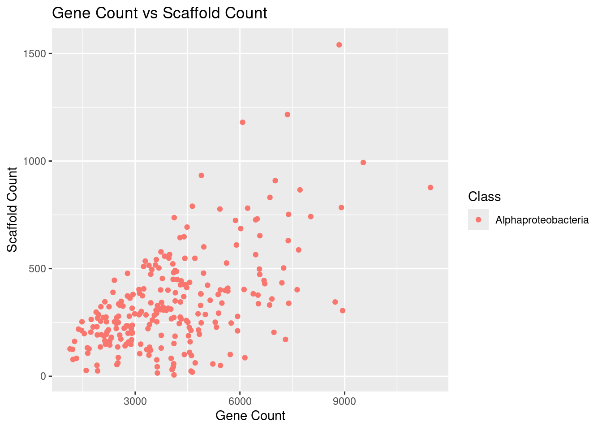

library(tidyverse)
library(knitr)Results
Libraries and Packages
if (!require("BiocManager", quietly = TRUE))
install.packages("BiocManager")
BiocManager::install("ggtree")library(tidyverse)
library(ggtree)
# added treeio and ggimage library
library(treeio)
library(ggimage)
library(rphylopic)library(tidyverse)
library(knitr)
library(ggtree)
library(TDbook) #A Companion Package for the Book "Data Integration, Manipulation and Visualization of Phylogenetic Trees" by Guangchuang Yu (2022, ISBN:9781032233574).
library(ggimage)
library(rphylopic)
library(treeio)
library(tidytree)
library(ape)
library(TreeTools)
library(phytools)
library(ggnewscale)
library(ggstar)if (!require("BiocManager", quietly = TRUE))
install.packages("BiocManager")
BiocManager::install("Biostrings")install.packages("boot")
install.packages("codetools")
install.packages("lattice")
install.packages("survival")Loaded Data
NEON_MAGs <- read_csv("data/NEON/GOLD_Study_ID_Gs0161344_NEON_edArchaea.csv") %>%
# remove columns that are not needed for data analysis
select(-c(`GOLD Study ID`, `Bin Methods`, `Created By`, `Date Added`)) %>%
# create a new column with the Assembly Type
mutate("Assembly Type" = case_when(`Genome Name` == "NEON combined assembly" ~ `Genome Name`,
TRUE ~ "Individual")) %>%
mutate_at("Assembly Type", str_replace, "NEON combined assembly", "Combined") %>%
separate(`GTDB-Tk Taxonomy Lineage`, c("Domain", "Phylum", "Class", "Order", "Family", "Genus"), "; ", remove = FALSE) %>%
# Get rid of the the common string "Soil microbial communities from "
mutate_at("Genome Name", str_replace, "Terrestrial soil microbial communities from ", "") %>%
# Use the first `-` to split the column in two
separate(`Genome Name`, c("Site","Sample Name"), " - ") %>%
# Get rid of the the common string "S-comp-1"
mutate_at("Sample Name", str_replace, "-comp-1", "") %>%
# separate the Sample Name into Site ID and plot info
separate(`Sample Name`, c("Site ID","subplot.layer.date"), "_", remove = FALSE,) %>%
# separate the plot info into 3 columns
separate(`subplot.layer.date`, c("Subplot", "Layer", "Date"), "-") NEON_metagenomes <- read_tsv("data/NEON/exported_img_data_Gs0161344_NEON.tsv") %>%
rename(`Genome Name` = `Genome Name / Sample Name`) %>%
filter(str_detect(`Genome Name`, 're-annotation', negate = T)) %>%
filter(str_detect(`Genome Name`, 'WREF plot', negate = T)) NEON_metagenomes <- NEON_metagenomes %>%
# Get rid of the the common string "Soil microbial communities from "
mutate_at("Genome Name", str_replace, "Terrestrial soil microbial communities from ", "") %>%
# Use the first `-` to split the column in two
separate(`Genome Name`, c("Site","Sample Name"), " - ") %>%
# Get rid of the the common string "-comp-1"
mutate_at("Sample Name", str_replace, "-comp-1", "") %>%
# separate the Sample Name into Site ID and plot info
separate(`Sample Name`, c("Site ID","subplot.layer.date"), "_", remove = FALSE,) %>%
# separate the plot info into 3 columns
separate(`subplot.layer.date`, c("Subplot", "Layer", "Date"), "-") NEON_chemistry <- read_tsv("data/NEON/neon_plot_soilChem1_metadata.tsv") %>%
# remove -COMP from genomicsSampleID
mutate_at("genomicsSampleID", str_replace, "-COMP", "") NEON_MAGs_metagenomes_chemistry <- NEON_MAGs %>%
left_join(NEON_metagenomes, by = "Sample Name") %>%
left_join(NEON_chemistry, by = c("Sample Name" = "genomicsSampleID"))
head(NEON_MAGs_metagenomes_chemistry)# A tibble: 6 × 93
`Bin ID` Site.x `Sample Name` `Site ID.x` Subplot.x Layer.x Date.x
<chr> <chr> <chr> <chr> <chr> <chr> <chr>
1 3300060887_39 Guanica St… GUAN_042-M-2… GUAN 042 M 20210…
2 3300060914_30 Guanica St… GUAN_043-M-2… GUAN 043 M 20210…
3 3300060650_39 Healy, Den… HEAL_048-O-2… HEAL 048 O 20210…
4 3300067032_2117 NEON combi… <NA> <NA> <NA> <NA> <NA>
5 3300060650_21 Healy, Den… HEAL_048-O-2… HEAL 048 O 20210…
6 3300060650_24 Healy, Den… HEAL_048-O-2… HEAL 048 O 20210…
# ℹ 86 more variables: `IMG Genome ID.x` <dbl>, `Bin Quality` <chr>,
# `Bin Lineage` <chr>, `GTDB-Tk Taxonomy Lineage` <chr>, Domain.x <chr>,
# Phylum <chr>, Class <chr>, Order <chr>, Family <chr>, Genus <chr>,
# `Bin Completeness` <dbl>, `Bin Contamination` <dbl>,
# `Total Number of Bases` <dbl>, `5s rRNA` <dbl>, `16s rRNA` <dbl>,
# `23s rRNA` <dbl>, `tRNA Genes` <dbl>, `Gene Count` <dbl>,
# `Scaffold Count` <dbl>, `Assembly Type` <chr>, taxon_oid <dbl>, …NEON_MAGs_metagenomes_chemistry_alphaproteobacteria <- NEON_MAGs_metagenomes_chemistry %>%
left_join(NEON_metagenomes, by = "Sample Name") %>%
left_join(NEON_chemistry, by = c("Sample Name" = "genomicsSampleID")) %>%
filter(`Class`== "Alphaproteobacteria")
head(NEON_MAGs_metagenomes_chemistry_alphaproteobacteria)# A tibble: 6 × 159
`Bin ID` Site.x `Sample Name` `Site ID.x` Subplot.x Layer.x Date.x
<chr> <chr> <chr> <chr> <chr> <chr> <chr>
1 3300061639_24 Niwot Ridge… NIWO_004-O-2… NIWO 004 O 20210…
2 3300067032_513 NEON combin… <NA> <NA> <NA> <NA> <NA>
3 3300060645_18 Caribou Cre… BONA_006-O-2… BONA 006 O 20210…
4 3300060649_28 Caribou Cre… BONA_001-O-2… BONA 001 O 20210…
5 3300060649_46 Caribou Cre… BONA_001-O-2… BONA 001 O 20210…
6 3300060656_60 Toolik Fiel… TOOL_005-O-2… TOOL 005 O 20210…
# ℹ 152 more variables: `IMG Genome ID.x` <dbl>, `Bin Quality` <chr>,
# `Bin Lineage` <chr>, `GTDB-Tk Taxonomy Lineage` <chr>, Domain.x <chr>,
# Phylum <chr>, Class <chr>, Order <chr>, Family <chr>, Genus <chr>,
# `Bin Completeness` <dbl>, `Bin Contamination` <dbl>,
# `Total Number of Bases` <dbl>, `5s rRNA` <dbl>, `16s rRNA` <dbl>,
# `23s rRNA` <dbl>, `tRNA Genes` <dbl>, `Gene Count` <dbl>,
# `Scaffold Count` <dbl>, `Assembly Type` <chr>, taxon_oid.x <dbl>, …NEON_MAGs_metagenomes_chemistry_alphaproteobacteria %>%
ggplot(aes(x = `Site.x`, y = soilTemp.x)) +
geom_boxplot()NEON_chemistry_select <- NEON_chemistry %>%
select(`genomicsSampleID`, `siteID`, `nlcdClass`)
head(NEON_chemistry_select)# A tibble: 6 × 3
genomicsSampleID siteID nlcdClass
<chr> <chr> <chr>
1 GUAN_048-M-20210920 GUAN evergreenForest
2 GUAN_042-M-20210920 GUAN evergreenForest
3 GUAN_043-M-20210921 GUAN evergreenForest
4 GUAN_007-M-20210922 GUAN evergreenForest
5 GUAN_004-M-20210922 GUAN evergreenForest
6 GUAN_003-M-20210922 GUAN evergreenForestNEON_MAGs_select <- NEON_MAGs %>%
select(`Sample Name`, `Site ID`, `GTDB-Tk Taxonomy Lineage`)
head(NEON_MAGs)# A tibble: 6 × 27
`Bin ID` Site `Sample Name` `Site ID` Subplot Layer Date `IMG Genome ID`
<chr> <chr> <chr> <chr> <chr> <chr> <chr> <dbl>
1 3300060887_… Guan… GUAN_042-M-2… GUAN 042 M 2021… 3300060887
2 3300060914_… Guan… GUAN_043-M-2… GUAN 043 M 2021… 3300060914
3 3300060650_… Heal… HEAL_048-O-2… HEAL 048 O 2021… 3300060650
4 3300067032_… NEON… <NA> <NA> <NA> <NA> <NA> 3300067032
5 3300060650_… Heal… HEAL_048-O-2… HEAL 048 O 2021… 3300060650
6 3300060650_… Heal… HEAL_048-O-2… HEAL 048 O 2021… 3300060650
# ℹ 19 more variables: `Bin Quality` <chr>, `Bin Lineage` <chr>,
# `GTDB-Tk Taxonomy Lineage` <chr>, Domain <chr>, Phylum <chr>, Class <chr>,
# Order <chr>, Family <chr>, Genus <chr>, `Bin Completeness` <dbl>,
# `Bin Contamination` <dbl>, `Total Number of Bases` <dbl>, `5s rRNA` <dbl>,
# `16s rRNA` <dbl>, `23s rRNA` <dbl>, `tRNA Genes` <dbl>, `Gene Count` <dbl>,
# `Scaffold Count` <dbl>, `Assembly Type` <chr>filtered_data <- NEON_MAGs_metagenomes_chemistry %>%
filter(`Site.x` == "Chase Lake Wetlands")NEON_MAGs_select_WOOD <- NEON_MAGs_select %>%
filter(`Site ID`== "WOOD")
head(NEON_MAGs_select_WOOD)# A tibble: 6 × 3
`Sample Name` `Site ID` `GTDB-Tk Taxonomy Lineage`
<chr> <chr> <chr>
1 WOOD_024-M-20210714 WOOD Archaea; Nitrososphaerota
2 WOOD_004-M-20210714 WOOD Archaea; Nitrososphaerota; Nitrososphaeria
3 WOOD_005-M-20210708 WOOD Archaea; Nitrososphaerota; Nitrososphaeria; Nit…
4 WOOD_001-M-20210714 WOOD Archaea; Nitrososphaerota; Nitrososphaeria; Nit…
5 WOOD_043-M-20210712 WOOD Archaea; Nitrososphaerota; Nitrososphaeria; Nit…
6 WOOD_004-M-20210714 WOOD Archaea; Nitrososphaerota; Nitrososphaeria; Nit…NEON_metagenomes_select <- NEON_metagenomes %>%
select(`Sample Name`, `Site ID`, `Ecosystem Subtype`)
head(NEON_metagenomes_select)# A tibble: 6 × 3
`Sample Name` `Site ID` `Ecosystem Subtype`
<chr> <chr> <chr>
1 CLBJ_006-M-20210506 CLBJ Grasslands
2 CLBJ_002-M-20210506 CLBJ Grasslands
3 WOOD_004-M-20210714 WOOD Wetlands
4 TOOL_002-O-20210804 TOOL Tundra
5 WREF_004-M-20210622 WREF Temperate forest
6 TEAK_004-O-20210726 TEAK Temperate forest NEON_metagenomes_select_WOOD <- NEON_MAGs_metagenomes_chemistry %>%
filter(`Site ID.x`== "WOOD")
head(NEON_metagenomes_select_WOOD)# A tibble: 6 × 93
`Bin ID` Site.x `Sample Name` `Site ID.x` Subplot.x Layer.x Date.x
<chr> <chr> <chr> <chr> <chr> <chr> <chr>
1 3300060657_10 Chase Lake W… WOOD_024-M-2… WOOD 024 M 20210…
2 3300060885_74 Chase Lake W… WOOD_004-M-2… WOOD 004 M 20210…
3 3300060747_2 Chase Lake W… WOOD_005-M-2… WOOD 005 M 20210…
4 3300060897_37 Chase Lake W… WOOD_001-M-2… WOOD 001 M 20210…
5 3300060731_25 Chase Lake W… WOOD_043-M-2… WOOD 043 M 20210…
6 3300060885_79 Chase Lake W… WOOD_004-M-2… WOOD 004 M 20210…
# ℹ 86 more variables: `IMG Genome ID.x` <dbl>, `Bin Quality` <chr>,
# `Bin Lineage` <chr>, `GTDB-Tk Taxonomy Lineage` <chr>, Domain.x <chr>,
# Phylum <chr>, Class <chr>, Order <chr>, Family <chr>, Genus <chr>,
# `Bin Completeness` <dbl>, `Bin Contamination` <dbl>,
# `Total Number of Bases` <dbl>, `5s rRNA` <dbl>, `16s rRNA` <dbl>,
# `23s rRNA` <dbl>, `tRNA Genes` <dbl>, `Gene Count` <dbl>,
# `Scaffold Count` <dbl>, `Assembly Type` <chr>, taxon_oid <dbl>, …NEON_metagenomes_select_WOOD %>%
ggplot(aes(x = `Site.x`, y = soilTemp)) +
geom_boxplot()
NEON_metagenomes_select_WOOD %>%
left_join(NEON_MAGs_select_WOOD, by = "Sample Name")# A tibble: 3,940 × 95
`Bin ID` Site.x `Sample Name` `Site ID.x` Subplot.x Layer.x Date.x
<chr> <chr> <chr> <chr> <chr> <chr> <chr>
1 3300060657_10 Chase Lake … WOOD_024-M-2… WOOD 024 M 20210…
2 3300060885_74 Chase Lake … WOOD_004-M-2… WOOD 004 M 20210…
3 3300060885_74 Chase Lake … WOOD_004-M-2… WOOD 004 M 20210…
4 3300060885_74 Chase Lake … WOOD_004-M-2… WOOD 004 M 20210…
5 3300060885_74 Chase Lake … WOOD_004-M-2… WOOD 004 M 20210…
6 3300060885_74 Chase Lake … WOOD_004-M-2… WOOD 004 M 20210…
7 3300060885_74 Chase Lake … WOOD_004-M-2… WOOD 004 M 20210…
8 3300060885_74 Chase Lake … WOOD_004-M-2… WOOD 004 M 20210…
9 3300060885_74 Chase Lake … WOOD_004-M-2… WOOD 004 M 20210…
10 3300060885_74 Chase Lake … WOOD_004-M-2… WOOD 004 M 20210…
# ℹ 3,930 more rows
# ℹ 88 more variables: `IMG Genome ID.x` <dbl>, `Bin Quality` <chr>,
# `Bin Lineage` <chr>, `GTDB-Tk Taxonomy Lineage.x` <chr>, Domain.x <chr>,
# Phylum <chr>, Class <chr>, Order <chr>, Family <chr>, Genus <chr>,
# `Bin Completeness` <dbl>, `Bin Contamination` <dbl>,
# `Total Number of Bases` <dbl>, `5s rRNA` <dbl>, `16s rRNA` <dbl>,
# `23s rRNA` <dbl>, `tRNA Genes` <dbl>, `Gene Count` <dbl>, …Graphs
Lab 12
NEON_MAGs_metagenomes_chemistry_alphaproteobacteria %>%
ggplot(aes(x = `soilTemp.x`, y = Site.x)) +
geom_boxplot()ggplot(NEON_MAGs_metagenomes_chemistry_alphaproteobacteria, aes(x = `soilTemp.x`, y = `Ecosystem Subtype.x`, color = Class)) +
geom_point() +
labs(title = "Scatterplot of Ecosystem Subtype vs Soil Temperature",
x = "soilTemp",
y = "Ecosystem Subtype",
color = "Order")
NEON_MAGs_metagenomes_chemistry_alphaproteobacteria %>%
ggplot(aes(x = `Site.x`, y = `Geographic Location.x`)) +
geom_boxplot()NEON_MAGs_metagenomes_chemistry_alphaproteobacteria %>%
ggplot(aes(x = `Site.x`, y = `Geographic Location.x`)) +
geom_boxplot() +
labs(
title = "Boxplot of Geographic Location by Site",
x = "Site",
y = "Geographic Location"
) +
theme(axis.text.x = element_text(angle = 45, hjust = 1))
Lab 12 graphs
right here
NEON_MAGs_metagenomes_chemistry_alphaproteobacteria %>%
ggplot(aes(x = `soilTemp.x`, y = Site.x)) +
geom_boxplot()This boxplot shows the distribution of soil temperatures at several NEON locations, including Chase Lake Wetlands The information shows the regional variations in soil temperature.
ggplot(NEON_MAGs_metagenomes_chemistry_alphaproteobacteria, aes(x = `soilTemp.x`, y = `Ecosystem Subtype.x`, color = Class)) +
geom_point() +
labs(title = "Scatterplot of Soil Temperature vs Ecosystem Subtype",
x = "soilTemp",
y = "Ecosystem Subtype",
color = "Class")
The link between soil temperature and Alpha-Proteobacteria ecosystem subtype is seen in this scatterplot. The map makes it easier to see which subtypes of ecosystems are linked to certain temperature ranges.
ggplot(NEON_MAGs_metagenomes_chemistry_alphaproteobacteria, aes(x = `soilInCaClpH.x`, y = nlcdClass.x, color = Class)) +
geom_point() +
labs(title = "soilInCaClpH vs nlcdClass",
x = "soilInCaClpH",
y = "nlcdClass",
color = "Class")This scatterplot shows how soil pH affects the distribution of Alpha-Proteobacteria across various land cover types by displaying the link between soil pH and the National Land Cover Database (NLCD) class.
NEON_MAGs_metagenomes_chemistry_alphaproteobacteria %>%
ggplot(aes(x = `Total Number of Bases`)) +
geom_histogram(bins = 100) 
The overall distribution of total bases in the Alpha-Proteobacteria genomic data is represented by this histogram, which also displays the frequency of various sequence lengths.
NEON_MAGs_metagenomes_chemistry_alphaproteobacteria %>%
filter(is.na(Domain) | is.na(Phylum) | is.na(Class) | is.na(Order) | is.na(Family) | is.na(Genus)) %>%
# Add another operation here, e.g., select specific columns
select(Domain, Phylum, Class, Order, Family, Genus)# A tibble: 20 × 6
Domain Phylum Class Order Family Genus
<chr> <chr> <chr> <chr> <chr> <chr>
1 *Microbiome Proteobacteria Alphaproteobacteria Micavibrionales GCA-272… <NA>
2 *Microbiome Proteobacteria Alphaproteobacteria Micavibrionales GCA-272… <NA>
3 *Microbiome Proteobacteria Alphaproteobacteria ATCC43930 Stellac… <NA>
4 *Microbiome Proteobacteria Alphaproteobacteria CADEGL01 <NA> <NA>
5 *Microbiome Proteobacteria Alphaproteobacteria ATCC43930 Stellac… <NA>
6 *Microbiome Proteobacteria Alphaproteobacteria Rhizobiales Xanthob… <NA>
7 *Microbiome Proteobacteria Alphaproteobacteria Rhizobiales Xanthob… <NA>
8 *Microbiome Proteobacteria Alphaproteobacteria Rhizobiales Aestuar… <NA>
9 *Microbiome Proteobacteria Alphaproteobacteria Rhizobiales Xanthob… <NA>
10 *Microbiome Proteobacteria Alphaproteobacteria Rhizobiales Aestuar… <NA>
11 *Microbiome Proteobacteria Alphaproteobacteria Rhizobiales Aestuar… <NA>
12 *Microbiome Proteobacteria Alphaproteobacteria Rhizobiales Afifell… <NA>
13 *Microbiome Proteobacteria Alphaproteobacteria Rhizobiales Xanthob… <NA>
14 *Microbiome Proteobacteria Alphaproteobacteria Rhizobiales Xanthob… <NA>
15 *Microbiome Proteobacteria Alphaproteobacteria Rhizobiales Xanthob… <NA>
16 *Microbiome Proteobacteria Alphaproteobacteria Rhizobiales Methylo… <NA>
17 *Microbiome Proteobacteria Alphaproteobacteria Rhizobiales Kaistia… <NA>
18 *Microbiome Proteobacteria Alphaproteobacteria ATCC43930 Stellac… <NA>
19 *Microbiome Proteobacteria Alphaproteobacteria ATCC43930 Stellac… <NA>
20 *Microbiome Proteobacteria Alphaproteobacteria ATCC43930 Stellac… <NA> NEON_MAGs_metagenomes_chemistry_alphaproteobacteria %>%
filter(is.na(Domain) | is.na(Phylum)| is.na(Class) | is.na(Order) | is.na(Family) | is.na(Genus)) %>%
ggplot(aes(x = `Bin Quality`)) +
geom_bar(width = 0.5)
This bar graph displays the high quality (HQ) and medium quality (MQ) genomic assemblies of alpha-proteobacteria bins.
NEON_MAGs_metagenomes_chemistry_alphaproteobacteria %>%
ggplot(aes(x = fct_infreq(`Site ID`))) +
geom_bar() +
coord_flip()
This bar plot shows the frequency of Alpha-Proteobacteria sequences across different NEON sites.
NEON_MAGs_metagenomes_chemistry_alphaproteobacteria %>%
ggplot(aes(x = `Gene Count`)) +
geom_histogram(bins = 100) This histogram shows how many Alphaproteobacteria have a certain number of genes.
NEON_MAGs_metagenomes_chemistry_alphaproteobacteria %>%
ggplot(aes(x = `tRNA Genes`)) +
geom_histogram(bins = 100) 
This histogram shows the distribution of gene counts and tRNA genes in the Alpha-Proteobacteria genomic data, illustrating the genomic complexity of these bacteria.
NEON_MAGs_metagenomes_chemistry_alphaproteobacteria %>%
filter(is.na(Domain) | is.na(Phylum)| is.na(Class) | is.na(Order) | is.na(Family) | is.na(Genus)) %>%
ggplot(aes(x = `Assembly Type`)) +
geom_bar(width = 0.5)
This graph shows the taxonomic data across different assembly types. This could help in identifying if certain assembly types are more prone to producing incomplete taxonomic information.
NEON_MAGs_metagenomes_chemistry_alphaproteobacteria %>%
filter(is.na(Domain) | is.na(Phylum)| is.na(Class) | is.na(Order) | is.na(Family) | is.na(Genus)) %>%
ggplot(aes(x = `Site ID.x`)) +
geom_bar(width = 0.5)
NEON_MAGs_metagenomes_chemistry_alphaproteobacteria %>%
ggplot(aes(x = `Scaffold Count`, y = `Site.x`)) +
geom_boxplot()
ggplot(NEON_MAGs_metagenomes_chemistry_alphaproteobacteria, aes(x = `Depth In Meters.x`, y = `Elevation In Meters.x`, color = Class)) +
geom_point() +
labs(title = "Depth In Meters vs Elevation In Meters",
x = "Depth In Meters",
y = "Elevation In Meters",
color = "Class")ggplot(NEON_MAGs_metagenomes_chemistry_alphaproteobacteria, aes(x = `Bin Completeness`, y = `Bin Contamination`, color = Class)) +
geom_point() +
labs(title = "Bin Completeness vs Bin Contamination",
x = "Bin Completeness",
y = "Bin Contamination",
color = "Class")
ggplot(NEON_MAGs_metagenomes_chemistry_alphaproteobacteria, aes(x = `Gene Count`, y = `Scaffold Count`, color = Class)) +
geom_point() +
labs(title = "Gene Count vs Scaffold Count",
x = "Gene Count",
y = "Scaffold Count",
color = "Class")
NEON_MAGs_metagenomes_chemistry_alphaproteobacteria %>%
ggplot(aes(x = `Gene Count`, y = `Scaffold Count`)) +
geom_boxplot()
Lab 16 graph
NEON_MAGs <- read_csv("data/NEON/GOLD_Study_ID_Gs0161344_NEON_2024_4_21.csv") %>%
# remove columns that are not needed for data analysis
select(-c(`GOLD Study ID`, `Bin Methods`, `Created By`, `Date Added`, `Bin Lineage`)) %>%
# create a new column with the Assembly Type
mutate("Assembly Type" = case_when(`Genome Name` == "NEON combined assembly" ~ `Genome Name`,
TRUE ~ "Individual")) %>%
mutate_at("Assembly Type", str_replace, "NEON combined assembly", "Combined") %>%
mutate_at("GTDB-Tk Taxonomy Lineage", str_replace, "d__", "") %>%
mutate_at("GTDB-Tk Taxonomy Lineage", str_replace, "p__", "") %>%
mutate_at("GTDB-Tk Taxonomy Lineage", str_replace, "c__", "") %>%
mutate_at("GTDB-Tk Taxonomy Lineage", str_replace, "o__", "") %>%
mutate_at("GTDB-Tk Taxonomy Lineage", str_replace, "f__", "") %>%
mutate_at("GTDB-Tk Taxonomy Lineage", str_replace, "g__", "") %>%
mutate_at("GTDB-Tk Taxonomy Lineage", str_replace, "s__", "") %>%
separate(`GTDB-Tk Taxonomy Lineage`, c("Domain", "Phylum", "Class", "Order", "Family", "Genus", "Species"), ";", remove = FALSE) %>%
mutate_at("Domain", na_if,"") %>%
mutate_at("Phylum", na_if,"") %>%
mutate_at("Class", na_if,"") %>%
mutate_at("Order", na_if,"") %>%
mutate_at("Family", na_if,"") %>%
mutate_at("Genus", na_if,"") %>%
mutate_at("Species", na_if,"") %>%
# Get rid of the the common string "Soil microbial communities from "
mutate_at("Genome Name", str_replace, "Terrestrial soil microbial communities from ", "") %>%
# Use the first `-` to split the column in two
separate(`Genome Name`, c("Site","Sample Name"), " - ") %>%
# Get rid of the the common string "S-comp-1"
mutate_at("Sample Name", str_replace, "-comp-1", "") %>%
# separate the Sample Name into Site ID and plot info
separate(`Sample Name`, c("Site ID","subplot.layer.date"), "_", remove = FALSE,) %>%
# separate the plot info into 3 columns
separate(`subplot.layer.date`, c("Subplot", "Layer", "Date"), "-") NEON_metagenomes <- read_tsv("data/NEON/exported_img_data_Gs0161344_NEON.tsv") %>%
select(-c(`Domain`, `Sequencing Status`, `Sequencing Center`)) %>%
rename(`Genome Name` = `Genome Name / Sample Name`) %>%
filter(str_detect(`Genome Name`, 're-annotation', negate = T)) %>%
filter(str_detect(`Genome Name`, 'WREF plot', negate = T)) NEON_metagenomes <- NEON_metagenomes %>%
# Get rid of the the common string "Soil microbial communities from "
mutate_at("Genome Name", str_replace, "Terrestrial soil microbial communities from ", "") %>%
# Use the first `-` to split the column in two
separate(`Genome Name`, c("Site","Sample Name"), " - ") %>%
# Get rid of the the common string "-comp-1"
mutate_at("Sample Name", str_replace, "-comp-1", "") %>%
# separate the Sample Name into Site ID and plot info
separate(`Sample Name`, c("Site ID","subplot.layer.date"), "_", remove = FALSE,) %>%
# separate the plot info into 3 columns
separate(`subplot.layer.date`, c("Subplot", "Layer", "Date"), "-")NEON_chemistry <- read_tsv("data/NEON/neon_plot_soilChem1_metadata.tsv") %>%
# remove -COMP from genomicsSampleID
mutate_at("genomicsSampleID", str_replace, "-COMP", "") NEON_MAGs_metagenomes_chemistry <- NEON_MAGs %>%
left_join(NEON_metagenomes, by = "Sample Name") %>%
left_join(NEON_chemistry, by = c("Sample Name" = "genomicsSampleID")) %>%
rename("label" = "Bin ID")tree_arc <- read.tree("data/NEON/gtdbtk.ar53.decorated(1).tree")
tree_bac <- read.tree("data/NEON/gtdbtk.bac120.decorated.tree")# Make a vector with the internal node labels
node_vector_bac = c(tree_bac$tip.label,tree_bac$node.label)
# Search for your Phylum or Class to get the node
grep("Alpha", node_vector_bac, value = TRUE)[1] "'1.0:c__Alphaproteobacteria'"match(grep("Alpha", node_vector_bac, value = TRUE), node_vector_bac)[1] 3171# First need to preorder tree before extracting. N
tree_bac_preorder <- Preorder(tree_bac)
tree_Alpha <- Subtree(tree_bac_preorder, 3171)NEON_MAGs_Alpha <- NEON_MAGs_metagenomes_chemistry %>%
filter(Phylum == "Alpha") Tree Graphs
ggtree(tree_Alpha) +
geom_tiplab(size=8) +
xlim(0,40)ggtree(tree_Alpha, layout="circular") %<+%
NEON_MAGs_metagenomes_chemistry +
geom_tiplab(size=2, hjust=-.1) +
xlim(0,30) +
geom_point(mapping=aes(color=Class))Lab 9
NEON_MAGs <- read_csv("data/NEON/GOLD_Study_ID_Gs0161344_NEON.csv") %>%
# remove columns that are not needed for data analysis
select(-c(`GOLD Study ID`, `Bin Methods`, `Created By`, `Date Added`)) %>%
# create a new column with the Assembly Type
mutate("Assembly Type" = case_when(`Genome Name` == "NEON combined assembly" ~ `Genome Name`,
TRUE ~ "Individual")) %>%
mutate_at("Assembly Type", str_replace, "NEON combined assembly", "Combined") %>%
separate(`GTDB-Tk Taxonomy Lineage`, c("Domain", "Phylum", "Class", "Order", "Family", "Genus"), "; ", remove = FALSE) %>%
# Get rid of the the common string "Soil microbial communities from "
mutate_at("Genome Name", str_replace, "Terrestrial soil microbial communities from ", "") %>%
# Use the first `-` to split the column in two
separate(`Genome Name`, c("Site","Sample Name"), " - ") %>%
# Get rid of the the common string "S-comp-1"
mutate_at("Sample Name", str_replace, "-comp-1", "") %>%
# separate the Sample Name into Site ID and plot info
separate(`Sample Name`, c("Site ID","subplot.layer.date"), "_", remove = FALSE,) %>%
# separate the plot info into 3 columns
separate(`subplot.layer.date`, c("Subplot", "Layer", "Date"), "-")NEON_MAGs_bact_ind <- NEON_MAGs %>%
filter(Domain == "Bacteria") %>%
filter(`Assembly Type` == "Individual") colnames(NEON_MAGs_bact_ind) [1] "Bin ID" "Site"
[3] "Sample Name" "Site ID"
[5] "Subplot" "Layer"
[7] "Date" "IMG Genome ID"
[9] "Bin Quality" "Bin Lineage"
[11] "GTDB-Tk Taxonomy Lineage" "Domain"
[13] "Phylum" "Class"
[15] "Order" "Family"
[17] "Genus" "Bin Completeness"
[19] "Bin Contamination" "Total Number of Bases"
[21] "5s rRNA" "16s rRNA"
[23] "23s rRNA" "tRNA Genes"
[25] "Gene Count" "Scaffold Count"
[27] "Assembly Type" NEON_MAGs_bact_ind %>%
ggplot(aes(x = `Site ID`, y = `Phylum`, color = Phylum)) +
geom_point() +
labs(title = "Site ID vs Number of Genes by Phylum")NEON_MAGs_bact_ind %>%
filter(`Site ID` == "WOOD") %>%
ggplot(aes(x = `Site ID`, y = `Phylum`, color = Phylum)) +
geom_point() +
labs(title = "Site ID vs Phylum for Site 'WOOD'") +
theme(axis.text.x = element_text(angle = 45, hjust = 1)) filtered_data <- NEON_MAGs_bact_ind %>%
filter(Phylum == "Proteobacteria")
ggplot(filtered_data, aes(x = `Site ID`, y = `Phylum`, color = Phylum)) +
geom_point() +
labs(title = "Site ID vs Phylum: Proteobacteria") +
theme(axis.text.x = element_text(angle = 45, hjust = 1), plot.title = element_text(hjust = 0.5))
Lab 10
NEON_MAGs <- read_csv("data/NEON/GOLD_Study_ID_Gs0161344_NEON.csv") %>%
# remove columns that are not needed for data analysis
select(-c(`GOLD Study ID`, `Bin Methods`, `Created By`, `Date Added`)) %>%
# create a new column with the Assembly Type
mutate("Assembly Type" = case_when(`Genome Name` == "NEON combined assembly" ~ `Genome Name`,
TRUE ~ "Individual")) %>%
mutate_at("Assembly Type", str_replace, "NEON combined assembly", "Combined") %>%
separate(`GTDB-Tk Taxonomy Lineage`, c("Domain", "Phylum", "Class", "Order", "Family", "Genus"), "; ", remove = FALSE) %>%
# Get rid of the the common string "Soil microbial communities from "
mutate_at("Genome Name", str_replace, "Terrestrial soil microbial communities from ", "") %>%
# Use the first `-` to split the column in two
separate(`Genome Name`, c("Site","Sample Name"), " - ") %>%
# Get rid of the the common string "S-comp-1"
mutate_at("Sample Name", str_replace, "-comp-1", "") %>%
# separate the Sample Name into Site ID and plot info
separate(`Sample Name`, c("Site ID","subplot.layer.date"), "_", remove = FALSE,) %>%
# separate the plot info into 3 columns
separate(`subplot.layer.date`, c("Subplot", "Layer", "Date"), "-")kable(
NEON_MAGs %>%
filter(Site == "Chase Lake Wetlands, North Dakota, USA")
)| Bin ID | Site | Sample Name | Site ID | Subplot | Layer | Date | IMG Genome ID | Bin Quality | Bin Lineage | GTDB-Tk Taxonomy Lineage | Domain | Phylum | Class | Order | Family | Genus | Bin Completeness | Bin Contamination | Total Number of Bases | 5s rRNA | 16s rRNA | 23s rRNA | tRNA Genes | Gene Count | Scaffold Count | Assembly Type |
|---|---|---|---|---|---|---|---|---|---|---|---|---|---|---|---|---|---|---|---|---|---|---|---|---|---|---|
| 3300060657_10 | Chase Lake Wetlands, North Dakota, USA | WOOD_024-M-20210714 | WOOD | 024 | M | 20210714 | 3300060657 | MQ | Archaea; Nitrososphaerota | NA | NA | NA | NA | NA | NA | NA | 66.26 | 2.91 | 2030835 | 1 | 0 | 0 | 27 | 2485 | 330 | Individual |
| 3300060731_10 | Chase Lake Wetlands, North Dakota, USA | WOOD_043-M-20210712 | WOOD | 043 | M | 20210712 | 3300060731 | MQ | Bacteria; Actinomycetota; Thermoleophilia; Solirubrobacterales | Bacteria; Actinobacteriota; Thermoleophilia; Solirubrobacterales; 70-9; VAYN01 | Bacteria | Actinobacteriota | Thermoleophilia | Solirubrobacterales | 70-9 | VAYN01 | 53.10 | 1.72 | 1178374 | 0 | 0 | 0 | 23 | 1415 | 219 | Individual |
| 3300060731_13 | Chase Lake Wetlands, North Dakota, USA | WOOD_043-M-20210712 | WOOD | 043 | M | 20210712 | 3300060731 | MQ | Bacteria; Pseudomonadota; Alphaproteobacteria; Hyphomicrobiales | Bacteria; Proteobacteria; Alphaproteobacteria; Rhizobiales; Xanthobacteraceae; VAZQ01 | Bacteria | Proteobacteria | Alphaproteobacteria | Rhizobiales | Xanthobacteraceae | VAZQ01 | 87.51 | 8.18 | 6262974 | 0 | 0 | 0 | 36 | 6571 | 653 | Individual |
| 3300060731_15 | Chase Lake Wetlands, North Dakota, USA | WOOD_043-M-20210712 | WOOD | 043 | M | 20210712 | 3300060731 | MQ | Bacteria; Actinomycetota; Actinomycetes | Bacteria; Actinobacteriota; Actinomycetia; Sporichthyales; Sporichthyaceae | Bacteria | Actinobacteriota | Actinomycetia | Sporichthyales | Sporichthyaceae | NA | 79.56 | 5.73 | 5113319 | 1 | 1 | 1 | 53 | 5587 | 640 | Individual |
| 3300060731_25 | Chase Lake Wetlands, North Dakota, USA | WOOD_043-M-20210712 | WOOD | 043 | M | 20210712 | 3300060731 | MQ | Archaea; Nitrososphaerota; Nitrososphaeria; Nitrososphaerales; Nitrososphaeraceae; Nitrososphaera; Candidatus Nitrososphaera evergladensis | NA | NA | NA | NA | NA | NA | NA | 54.98 | 0.97 | 752672 | 1 | 0 | 0 | 16 | 828 | 76 | Individual |
| 3300060731_31 | Chase Lake Wetlands, North Dakota, USA | WOOD_043-M-20210712 | WOOD | 043 | M | 20210712 | 3300060731 | MQ | Bacteria; Actinomycetota | Bacteria; Actinobacteriota; Thermoleophilia; Gaiellales; Gaiellaceae; AC-32 | Bacteria | Actinobacteriota | Thermoleophilia | Gaiellales | Gaiellaceae | AC-32 | 60.34 | 4.31 | 1510041 | 1 | 1 | 1 | 15 | 1817 | 246 | Individual |
| 3300060731_32 | Chase Lake Wetlands, North Dakota, USA | WOOD_043-M-20210712 | WOOD | 043 | M | 20210712 | 3300060731 | MQ | Bacteria; Pseudomonadota; Alphaproteobacteria; Hyphomicrobiales | Bacteria; Proteobacteria; Alphaproteobacteria; Rhizobiales; Xanthobacteraceae; VAZQ01 | Bacteria | Proteobacteria | Alphaproteobacteria | Rhizobiales | Xanthobacteraceae | VAZQ01 | 84.33 | 1.27 | 4754381 | 1 | 0 | 1 | 28 | 4801 | 290 | Individual |
| 3300060731_40 | Chase Lake Wetlands, North Dakota, USA | WOOD_043-M-20210712 | WOOD | 043 | M | 20210712 | 3300060731 | MQ | Bacteria; Actinomycetota | Bacteria; Actinobacteriota; Acidimicrobiia; Acidimicrobiales; Ilumatobacteraceae; JACCUL01 | Bacteria | Actinobacteriota | Acidimicrobiia | Acidimicrobiales | Ilumatobacteraceae | JACCUL01 | 71.98 | 7.55 | 4734007 | 0 | 0 | 0 | 46 | 5148 | 653 | Individual |
| 3300060731_44 | Chase Lake Wetlands, North Dakota, USA | WOOD_043-M-20210712 | WOOD | 043 | M | 20210712 | 3300060731 | MQ | Bacteria; Actinomycetota; Actinomycetes | Bacteria; Actinobacteriota; Actinomycetia; Jiangellales; Jiangellaceae | Bacteria | Actinobacteriota | Actinomycetia | Jiangellales | Jiangellaceae | NA | 58.62 | 0.00 | 2791030 | 0 | 0 | 0 | 24 | 3249 | 479 | Individual |
| 3300060731_46 | Chase Lake Wetlands, North Dakota, USA | WOOD_043-M-20210712 | WOOD | 043 | M | 20210712 | 3300060731 | MQ | Bacteria; Actinomycetota; Thermoleophilia | Bacteria; Actinobacteriota; Thermoleophilia; Solirubrobacterales; 70-9; VGBV01 | Bacteria | Actinobacteriota | Thermoleophilia | Solirubrobacterales | 70-9 | VGBV01 | 50.00 | 3.45 | 1627567 | 0 | 0 | 0 | 25 | 2013 | 354 | Individual |
| 3300060731_55 | Chase Lake Wetlands, North Dakota, USA | WOOD_043-M-20210712 | WOOD | 043 | M | 20210712 | 3300060731 | MQ | Bacteria; Actinomycetota; Actinomycetes | Bacteria; Actinobacteriota; Actinomycetia | Bacteria | Actinobacteriota | Actinomycetia | NA | NA | NA | 50.86 | 7.76 | 10920999 | 0 | 1 | 0 | 185 | 13026 | 2109 | Individual |
| 3300060732_16 | Chase Lake Wetlands, North Dakota, USA | WOOD_003-M-20210708 | WOOD | 003 | M | 20210708 | 3300060732 | MQ | Bacteria; Actinomycetota; Rubrobacteria | Bacteria; Actinobacteriota; Thermoleophilia; Gaiellales; Gaiellaceae; AC-32 | Bacteria | Actinobacteriota | Thermoleophilia | Gaiellales | Gaiellaceae | AC-32 | 75.20 | 8.28 | 1998121 | 1 | 0 | 1 | 33 | 2352 | 246 | Individual |
| 3300060732_20 | Chase Lake Wetlands, North Dakota, USA | WOOD_003-M-20210708 | WOOD | 003 | M | 20210708 | 3300060732 | MQ | Bacteria; Actinomycetota | Bacteria; Actinobacteriota; UBA4738; UBA4738; HRBIN12; AC-51 | Bacteria | Actinobacteriota | UBA4738 | UBA4738 | HRBIN12 | AC-51 | 58.97 | 1.99 | 1603172 | 1 | 0 | 1 | 34 | 1857 | 285 | Individual |
| 3300060732_21 | Chase Lake Wetlands, North Dakota, USA | WOOD_003-M-20210708 | WOOD | 003 | M | 20210708 | 3300060732 | MQ | Bacteria; Actinomycetota | Bacteria; Actinobacteriota; Thermoleophilia; Gaiellales; Gaiellaceae | Bacteria | Actinobacteriota | Thermoleophilia | Gaiellales | Gaiellaceae | NA | 82.47 | 1.67 | 2472181 | 1 | 1 | 1 | 39 | 2836 | 262 | Individual |
| 3300060732_26 | Chase Lake Wetlands, North Dakota, USA | WOOD_003-M-20210708 | WOOD | 003 | M | 20210708 | 3300060732 | MQ | Bacteria; Actinomycetota | Bacteria; Actinobacteriota; UBA4738; UBA4738; HRBIN12; AC-51 | Bacteria | Actinobacteriota | UBA4738 | UBA4738 | HRBIN12 | AC-51 | 65.00 | 1.99 | 1587300 | 0 | 1 | 0 | 43 | 1851 | 245 | Individual |
| 3300060732_28 | Chase Lake Wetlands, North Dakota, USA | WOOD_003-M-20210708 | WOOD | 003 | M | 20210708 | 3300060732 | MQ | Bacteria; Pseudomonadota; Alphaproteobacteria; Hyphomicrobiales | Bacteria; Proteobacteria; Alphaproteobacteria; Rhizobiales; Xanthobacteraceae; VAZQ01 | Bacteria | Proteobacteria | Alphaproteobacteria | Rhizobiales | Xanthobacteraceae | VAZQ01 | 88.53 | 1.85 | 4741244 | 0 | 0 | 0 | 28 | 4879 | 383 | Individual |
| 3300060732_32 | Chase Lake Wetlands, North Dakota, USA | WOOD_003-M-20210708 | WOOD | 003 | M | 20210708 | 3300060732 | MQ | Bacteria; Pseudomonadota; Alphaproteobacteria; Hyphomicrobiales | Bacteria; Proteobacteria; Alphaproteobacteria; Rhizobiales; Xanthobacteraceae; VAZQ01 | Bacteria | Proteobacteria | Alphaproteobacteria | Rhizobiales | Xanthobacteraceae | VAZQ01 | 88.87 | 4.45 | 5816643 | 0 | 1 | 0 | 50 | 6119 | 403 | Individual |
| 3300060732_39 | Chase Lake Wetlands, North Dakota, USA | WOOD_003-M-20210708 | WOOD | 003 | M | 20210708 | 3300060732 | MQ | Bacteria; Actinomycetota; Actinomycetes; Propionibacteriales | Bacteria; Actinobacteriota; Actinomycetia; Propionibacteriales; Propionibacteriaceae | Bacteria | Actinobacteriota | Actinomycetia | Propionibacteriales | Propionibacteriaceae | NA | 58.39 | 8.68 | 2172924 | 0 | 0 | 0 | 16 | 2419 | 323 | Individual |
| 3300060747_17 | Chase Lake Wetlands, North Dakota, USA | WOOD_005-M-20210708 | WOOD | 005 | M | 20210708 | 3300060747 | MQ | Bacteria; Actinomycetota; Actinomycetes; Propionibacteriales | Bacteria; Actinobacteriota; Actinomycetia; Propionibacteriales; Propionibacteriaceae | Bacteria | Actinobacteriota | Actinomycetia | Propionibacteriales | Propionibacteriaceae | NA | 56.58 | 2.94 | 2412495 | 0 | 0 | 0 | 32 | 2726 | 321 | Individual |
| 3300060747_2 | Chase Lake Wetlands, North Dakota, USA | WOOD_005-M-20210708 | WOOD | 005 | M | 20210708 | 3300060747 | MQ | Archaea; Nitrososphaerota; Nitrososphaeria; Nitrososphaerales; Nitrososphaeraceae | NA | NA | NA | NA | NA | NA | NA | 68.58 | 6.96 | 1233323 | 0 | 0 | 0 | 14 | 1391 | 207 | Individual |
| 3300060747_21 | Chase Lake Wetlands, North Dakota, USA | WOOD_005-M-20210708 | WOOD | 005 | M | 20210708 | 3300060747 | MQ | Bacteria; Pseudomonadota; Alphaproteobacteria; Hyphomicrobiales | Bacteria; Proteobacteria; Alphaproteobacteria; Rhizobiales; Xanthobacteraceae; VAZQ01 | Bacteria | Proteobacteria | Alphaproteobacteria | Rhizobiales | Xanthobacteraceae | VAZQ01 | 66.35 | 2.22 | 3979948 | 1 | 0 | 1 | 24 | 4202 | 449 | Individual |
| 3300060747_32 | Chase Lake Wetlands, North Dakota, USA | WOOD_005-M-20210708 | WOOD | 005 | M | 20210708 | 3300060747 | HQ | Bacteria; Actinomycetota; Thermoleophilia; Solirubrobacterales | Bacteria; Actinobacteriota; Thermoleophilia; Solirubrobacterales; 70-9 | Bacteria | Actinobacteriota | Thermoleophilia | Solirubrobacterales | 70-9 | NA | 97.41 | 3.45 | 2105148 | 1 | 1 | 1 | 53 | 2223 | 49 | Individual |
| 3300060853_13 | Chase Lake Wetlands, North Dakota, USA | WOOD_002-M-20210708 | WOOD | 002 | M | 20210708 | 3300060853 | MQ | Bacteria; Actinomycetota; Actinomycetes | Bacteria; Actinobacteriota; Actinomycetia | Bacteria | Actinobacteriota | Actinomycetia | NA | NA | NA | 67.90 | 3.28 | 3371559 | 0 | 0 | 0 | 40 | 3746 | 439 | Individual |
| 3300060853_14 | Chase Lake Wetlands, North Dakota, USA | WOOD_002-M-20210708 | WOOD | 002 | M | 20210708 | 3300060853 | MQ | Bacteria; Pseudomonadota; Gammaproteobacteria; Nevskiales; Steroidobacteraceae | Bacteria; Proteobacteria; Gammaproteobacteria; Steroidobacterales; Steroidobacteraceae; Steroidobacter_A | Bacteria | Proteobacteria | Gammaproteobacteria | Steroidobacterales | Steroidobacteraceae | Steroidobacter_A | 79.96 | 3.65 | 4200146 | 0 | 0 | 0 | 16 | 4090 | 416 | Individual |
| 3300060853_25 | Chase Lake Wetlands, North Dakota, USA | WOOD_002-M-20210708 | WOOD | 002 | M | 20210708 | 3300060853 | MQ | Bacteria; Actinomycetota | Bacteria; Actinobacteriota; Thermoleophilia; Gaiellales; Gaiellaceae; JACDAN01 | Bacteria | Actinobacteriota | Thermoleophilia | Gaiellales | Gaiellaceae | JACDAN01 | 59.11 | 1.29 | 1799252 | 1 | 0 | 1 | 29 | 2076 | 189 | Individual |
| 3300060853_42 | Chase Lake Wetlands, North Dakota, USA | WOOD_002-M-20210708 | WOOD | 002 | M | 20210708 | 3300060853 | MQ | Bacteria; Pseudomonadota; Alphaproteobacteria; Hyphomicrobiales; Hyphomicrobiaceae; Methyloceanibacter | Bacteria; Proteobacteria; Alphaproteobacteria; Rhizobiales; Methyloligellaceae; Methyloceanibacter | Bacteria | Proteobacteria | Alphaproteobacteria | Rhizobiales | Methyloligellaceae | Methyloceanibacter | 50.00 | 1.72 | 1358104 | 0 | 0 | 0 | 11 | 1542 | 198 | Individual |
| 3300060853_48 | Chase Lake Wetlands, North Dakota, USA | WOOD_002-M-20210708 | WOOD | 002 | M | 20210708 | 3300060853 | MQ | Bacteria; Actinomycetota; Actinomycetes | Bacteria; Actinobacteriota; Actinomycetia; Sporichthyales; Sporichthyaceae | Bacteria | Actinobacteriota | Actinomycetia | Sporichthyales | Sporichthyaceae | NA | 64.24 | 0.70 | 2143694 | 1 | 0 | 1 | 17 | 2311 | 288 | Individual |
| 3300060853_9 | Chase Lake Wetlands, North Dakota, USA | WOOD_002-M-20210708 | WOOD | 002 | M | 20210708 | 3300060853 | MQ | Bacteria; Actinomycetota | Bacteria; Actinobacteriota; Thermoleophilia; Gaiellales; Gaiellaceae | Bacteria | Actinobacteriota | Thermoleophilia | Gaiellales | Gaiellaceae | NA | 84.05 | 9.31 | 2465910 | 0 | 1 | 0 | 57 | 2864 | 217 | Individual |
| 3300060884_10 | Chase Lake Wetlands, North Dakota, USA | WOOD_042-M-20210712 | WOOD | 042 | M | 20210712 | 3300060884 | MQ | Bacteria; Actinomycetota; Actinomycetes; Micrococcales; Microbacteriaceae | Bacteria; Actinobacteriota; Actinomycetia; Actinomycetales; Microbacteriaceae; ZJ450 | Bacteria | Actinobacteriota | Actinomycetia | Actinomycetales | Microbacteriaceae | ZJ450 | 63.39 | 2.60 | 1957947 | 1 | 0 | 0 | 20 | 2161 | 289 | Individual |
| 3300060884_13 | Chase Lake Wetlands, North Dakota, USA | WOOD_042-M-20210712 | WOOD | 042 | M | 20210712 | 3300060884 | MQ | Bacteria; Actinomycetota; Actinomycetes | Bacteria; Actinobacteriota | Bacteria | Actinobacteriota | NA | NA | NA | NA | 84.59 | 7.79 | 5041214 | 1 | 0 | 1 | 50 | 5143 | 450 | Individual |
| 3300060884_21 | Chase Lake Wetlands, North Dakota, USA | WOOD_042-M-20210712 | WOOD | 042 | M | 20210712 | 3300060884 | MQ | Bacteria; Actinomycetota; Actinomycetes; Micrococcales; Micrococcaceae | Bacteria; Actinobacteriota; Actinomycetia; Actinomycetales; Micrococcaceae; Citricoccus | Bacteria | Actinobacteriota | Actinomycetia | Actinomycetales | Micrococcaceae | Citricoccus | 56.03 | 0.00 | 2168538 | 0 | 0 | 0 | 33 | 2108 | 257 | Individual |
| 3300060884_26 | Chase Lake Wetlands, North Dakota, USA | WOOD_042-M-20210712 | WOOD | 042 | M | 20210712 | 3300060884 | HQ | Bacteria; Actinomycetota | Bacteria; Actinobacteriota; UBA4738; UBA4738; UBA4738 | Bacteria | Actinobacteriota | UBA4738 | UBA4738 | UBA4738 | NA | 90.60 | 0.85 | 2942400 | 1 | 1 | 1 | 56 | 3146 | 129 | Individual |
| 3300060884_27 | Chase Lake Wetlands, North Dakota, USA | WOOD_042-M-20210712 | WOOD | 042 | M | 20210712 | 3300060884 | MQ | Bacteria; Actinomycetota | Bacteria; Actinobacteriota; Thermoleophilia; Gaiellales; Gaiellaceae; 3-1-20CM-4-69-9 | Bacteria | Actinobacteriota | Thermoleophilia | Gaiellales | Gaiellaceae | 3-1-20CM-4-69-9 | 73.13 | 0.00 | 1995524 | 0 | 1 | 0 | 45 | 2344 | 262 | Individual |
| 3300060884_31 | Chase Lake Wetlands, North Dakota, USA | WOOD_042-M-20210712 | WOOD | 042 | M | 20210712 | 3300060884 | MQ | Bacteria; Actinomycetota; Actinomycetes; Propionibacteriales | Bacteria; Actinobacteriota; Actinomycetia; Propionibacteriales; Nocardioidaceae | Bacteria | Actinobacteriota | Actinomycetia | Propionibacteriales | Nocardioidaceae | NA | 94.82 | 4.15 | 3234155 | 0 | 1 | 0 | 37 | 3264 | 145 | Individual |
| 3300060884_32 | Chase Lake Wetlands, North Dakota, USA | WOOD_042-M-20210712 | WOOD | 042 | M | 20210712 | 3300060884 | MQ | Bacteria; Acidobacteriota | Bacteria; Acidobacteriota; Blastocatellia; Pyrinomonadales; Pyrinomonadaceae; UBA11740 | Bacteria | Acidobacteriota | Blastocatellia | Pyrinomonadales | Pyrinomonadaceae | UBA11740 | 58.19 | 1.71 | 3243749 | 0 | 0 | 0 | 39 | 3124 | 350 | Individual |
| 3300060884_35 | Chase Lake Wetlands, North Dakota, USA | WOOD_042-M-20210712 | WOOD | 042 | M | 20210712 | 3300060884 | MQ | Bacteria; Actinomycetota; Actinomycetes; Propionibacteriales | Bacteria; Actinobacteriota; Actinomycetia; Propionibacteriales; Propionibacteriaceae | Bacteria | Actinobacteriota | Actinomycetia | Propionibacteriales | Propionibacteriaceae | NA | 51.01 | 3.87 | 2131956 | 0 | 0 | 0 | 12 | 2371 | 307 | Individual |
| 3300060884_37 | Chase Lake Wetlands, North Dakota, USA | WOOD_042-M-20210712 | WOOD | 042 | M | 20210712 | 3300060884 | MQ | Bacteria; Pseudomonadota; Alphaproteobacteria; Hyphomicrobiales | Bacteria; Proteobacteria; Alphaproteobacteria; Rhizobiales; Beijerinckiaceae; JAFASC01 | Bacteria | Proteobacteria | Alphaproteobacteria | Rhizobiales | Beijerinckiaceae | JAFASC01 | 66.91 | 2.26 | 2580383 | 0 | 1 | 0 | 10 | 2937 | 380 | Individual |
| 3300060884_41 | Chase Lake Wetlands, North Dakota, USA | WOOD_042-M-20210712 | WOOD | 042 | M | 20210712 | 3300060884 | MQ | Bacteria; Actinomycetota; Actinomycetes | Bacteria; Actinobacteriota; Actinomycetia; Mycobacteriales; Jatrophihabitantaceae; WQZC01 | Bacteria | Actinobacteriota | Actinomycetia | Mycobacteriales | Jatrophihabitantaceae | WQZC01 | 65.70 | 2.26 | 3300200 | 1 | 1 | 1 | 27 | 3787 | 464 | Individual |
| 3300060884_46 | Chase Lake Wetlands, North Dakota, USA | WOOD_042-M-20210712 | WOOD | 042 | M | 20210712 | 3300060884 | MQ | Bacteria | Bacteria; Acidobacteriota; Thermoanaerobaculia; UBA5066; Gp7-AA6; Gp7-AA6 | Bacteria | Acidobacteriota | Thermoanaerobaculia | UBA5066 | Gp7-AA6 | Gp7-AA6 | 78.01 | 2.14 | 2684194 | 1 | 0 | 1 | 33 | 2741 | 317 | Individual |
| 3300060884_47 | Chase Lake Wetlands, North Dakota, USA | WOOD_042-M-20210712 | WOOD | 042 | M | 20210712 | 3300060884 | MQ | Bacteria; Actinomycetota | Bacteria; Actinobacteriota; UBA4738; UBA4738; HRBIN12; AC-69 | Bacteria | Actinobacteriota | UBA4738 | UBA4738 | HRBIN12 | AC-69 | 66.98 | 1.71 | 1793203 | 0 | 1 | 0 | 25 | 1988 | 197 | Individual |
| 3300060884_54 | Chase Lake Wetlands, North Dakota, USA | WOOD_042-M-20210712 | WOOD | 042 | M | 20210712 | 3300060884 | MQ | Bacteria; Actinomycetota; Actinomycetes | Bacteria; Actinobacteriota; Actinomycetia; Mycobacteriales; Jatrophihabitantaceae; WQZC01 | Bacteria | Actinobacteriota | Actinomycetia | Mycobacteriales | Jatrophihabitantaceae | WQZC01 | 89.24 | 3.49 | 4701088 | 0 | 1 | 0 | 50 | 4929 | 507 | Individual |
| 3300060884_55 | Chase Lake Wetlands, North Dakota, USA | WOOD_042-M-20210712 | WOOD | 042 | M | 20210712 | 3300060884 | MQ | Bacteria; Pseudomonadota; Gammaproteobacteria; Xanthomonadales; Xanthomonadaceae; Luteimonas; Luteimonas granuli | Bacteria; Proteobacteria; Gammaproteobacteria; Xanthomonadales; Xanthomonadaceae; Luteimonas | Bacteria | Proteobacteria | Gammaproteobacteria | Xanthomonadales | Xanthomonadaceae | Luteimonas | 58.10 | 0.00 | 2394086 | 0 | 1 | 0 | 38 | 2473 | 275 | Individual |
| 3300060884_59 | Chase Lake Wetlands, North Dakota, USA | WOOD_042-M-20210712 | WOOD | 042 | M | 20210712 | 3300060884 | MQ | Bacteria; Actinomycetota; Actinomycetes; Micrococcales; Intrasporangiaceae | Bacteria; Actinobacteriota; Actinomycetia; Actinomycetales; Dermatophilaceae; Lapillicoccus | Bacteria | Actinobacteriota | Actinomycetia | Actinomycetales | Dermatophilaceae | Lapillicoccus | 77.16 | 1.80 | 2576604 | 0 | 0 | 0 | 28 | 2770 | 267 | Individual |
| 3300060884_62 | Chase Lake Wetlands, North Dakota, USA | WOOD_042-M-20210712 | WOOD | 042 | M | 20210712 | 3300060884 | MQ | Bacteria; Pseudomonadota; Alphaproteobacteria; Hyphomicrobiales; Xanthobacteraceae; Pseudolabrys; Pseudolabrys taiwanensis | Bacteria; Proteobacteria; Alphaproteobacteria; Rhizobiales; Xanthobacteraceae; Pseudolabrys | Bacteria | Proteobacteria | Alphaproteobacteria | Rhizobiales | Xanthobacteraceae | Pseudolabrys | 65.11 | 0.63 | 2020569 | 0 | 1 | 0 | 14 | 2234 | 216 | Individual |
| 3300060884_63 | Chase Lake Wetlands, North Dakota, USA | WOOD_042-M-20210712 | WOOD | 042 | M | 20210712 | 3300060884 | MQ | Bacteria; Pseudomonadota; Alphaproteobacteria; Hyphomicrobiales | Bacteria; Proteobacteria; Alphaproteobacteria; Rhizobiales; Xanthobacteraceae; VAZQ01 | Bacteria | Proteobacteria | Alphaproteobacteria | Rhizobiales | Xanthobacteraceae | VAZQ01 | 94.55 | 6.81 | 6677918 | 1 | 1 | 1 | 47 | 6917 | 359 | Individual |
| 3300060884_66 | Chase Lake Wetlands, North Dakota, USA | WOOD_042-M-20210712 | WOOD | 042 | M | 20210712 | 3300060884 | MQ | Bacteria; Pseudomonadota; Alphaproteobacteria; Hyphomicrobiales; Xanthobacteraceae; Pseudolabrys | Bacteria; Proteobacteria; Alphaproteobacteria; Rhizobiales; Xanthobacteraceae; Pseudolabrys | Bacteria | Proteobacteria | Alphaproteobacteria | Rhizobiales | Xanthobacteraceae | Pseudolabrys | 55.24 | 5.17 | 3548619 | 0 | 0 | 0 | 33 | 4087 | 450 | Individual |
| 3300060884_71 | Chase Lake Wetlands, North Dakota, USA | WOOD_042-M-20210712 | WOOD | 042 | M | 20210712 | 3300060884 | MQ | Bacteria; Pseudomonadota; Alphaproteobacteria; Hyphomicrobiales; Hyphomicrobiaceae; Methyloceanibacter | Bacteria; Proteobacteria; Alphaproteobacteria; Rhizobiales; Methyloligellaceae; Methyloceanibacter | Bacteria | Proteobacteria | Alphaproteobacteria | Rhizobiales | Methyloligellaceae | Methyloceanibacter | 52.30 | 0.13 | 1088154 | 0 | 0 | 0 | 16 | 1263 | 162 | Individual |
| 3300060885_102 | Chase Lake Wetlands, North Dakota, USA | WOOD_004-M-20210714 | WOOD | 004 | M | 20210714 | 3300060885 | MQ | Bacteria; Actinomycetota | Bacteria; Actinobacteriota; Thermoleophilia; Gaiellales; Gaiellaceae | Bacteria | Actinobacteriota | Thermoleophilia | Gaiellales | Gaiellaceae | NA | 52.59 | 8.91 | 1495527 | 1 | 0 | 0 | 23 | 1805 | 234 | Individual |
| 3300060885_110 | Chase Lake Wetlands, North Dakota, USA | WOOD_004-M-20210714 | WOOD | 004 | M | 20210714 | 3300060885 | MQ | Bacteria; Actinomycetota; Thermoleophilia; Solirubrobacterales | Bacteria; Actinobacteriota; Thermoleophilia; Solirubrobacterales; Solirubrobacteraceae | Bacteria | Actinobacteriota | Thermoleophilia | Solirubrobacterales | Solirubrobacteraceae | NA | 59.48 | 6.90 | 3836949 | 0 | 0 | 0 | 20 | 4282 | 475 | Individual |
| 3300060885_20 | Chase Lake Wetlands, North Dakota, USA | WOOD_004-M-20210714 | WOOD | 004 | M | 20210714 | 3300060885 | MQ | Bacteria | Bacteria; Acidobacteriota; Blastocatellia; Pyrinomonadales; Pyrinomonadaceae; UBA11740 | Bacteria | Acidobacteriota | Blastocatellia | Pyrinomonadales | Pyrinomonadaceae | UBA11740 | 96.53 | 2.56 | 5957811 | 1 | 0 | 1 | 65 | 5084 | 91 | Individual |
| 3300060885_22 | Chase Lake Wetlands, North Dakota, USA | WOOD_004-M-20210714 | WOOD | 004 | M | 20210714 | 3300060885 | HQ | Bacteria; Actinomycetota; Thermoleophilia; Solirubrobacterales | Bacteria; Actinobacteriota; Thermoleophilia; Solirubrobacterales; 70-9 | Bacteria | Actinobacteriota | Thermoleophilia | Solirubrobacterales | 70-9 | NA | 90.95 | 1.72 | 2440312 | 1 | 1 | 1 | 51 | 2479 | 9 | Individual |
| 3300060885_26 | Chase Lake Wetlands, North Dakota, USA | WOOD_004-M-20210714 | WOOD | 004 | M | 20210714 | 3300060885 | MQ | Bacteria; Pseudomonadota; Alphaproteobacteria; Hyphomicrobiales | Bacteria; Proteobacteria; Alphaproteobacteria; Rhizobiales; Xanthobacteraceae; JAFAXD01 | Bacteria | Proteobacteria | Alphaproteobacteria | Rhizobiales | Xanthobacteraceae | JAFAXD01 | 51.97 | 4.17 | 9685094 | 0 | 0 | 0 | 125 | 11458 | 877 | Individual |
| 3300060885_28 | Chase Lake Wetlands, North Dakota, USA | WOOD_004-M-20210714 | WOOD | 004 | M | 20210714 | 3300060885 | MQ | Bacteria; Pseudomonadota | Bacteria; Proteobacteria; Gammaproteobacteria; UBA6522; UBA6522 | Bacteria | Proteobacteria | Gammaproteobacteria | UBA6522 | UBA6522 | NA | 61.29 | 4.13 | 3072016 | 0 | 1 | 0 | 23 | 3186 | 475 | Individual |
| 3300060885_34 | Chase Lake Wetlands, North Dakota, USA | WOOD_004-M-20210714 | WOOD | 004 | M | 20210714 | 3300060885 | MQ | Bacteria; Actinomycetota | Bacteria; Actinobacteriota; UBA4738; UBA4738; HRBIN12; AC-51 | Bacteria | Actinobacteriota | UBA4738 | UBA4738 | HRBIN12 | AC-51 | 62.07 | 5.17 | 2068163 | 0 | 0 | 0 | 30 | 2346 | 288 | Individual |
| 3300060885_38 | Chase Lake Wetlands, North Dakota, USA | WOOD_004-M-20210714 | WOOD | 004 | M | 20210714 | 3300060885 | MQ | Bacteria; Pseudomonadota; Alphaproteobacteria; Hyphomicrobiales | Bacteria; Proteobacteria; Alphaproteobacteria; Rhizobiales; Xanthobacteraceae; VAZQ01 | Bacteria | Proteobacteria | Alphaproteobacteria | Rhizobiales | Xanthobacteraceae | VAZQ01 | 80.77 | 2.56 | 3344554 | 1 | 0 | 1 | 20 | 3598 | 307 | Individual |
| 3300060885_4 | Chase Lake Wetlands, North Dakota, USA | WOOD_004-M-20210714 | WOOD | 004 | M | 20210714 | 3300060885 | MQ | Bacteria; Pseudomonadota; Alphaproteobacteria; Sphingomonadales; Sphingomonadaceae | Bacteria; Proteobacteria; Alphaproteobacteria; Sphingomonadales; Sphingomonadaceae; Allosphingosinicella | Bacteria | Proteobacteria | Alphaproteobacteria | Sphingomonadales | Sphingomonadaceae | Allosphingosinicella | 89.27 | 2.65 | 3311930 | 0 | 0 | 0 | 39 | 3638 | 328 | Individual |
| 3300060885_41 | Chase Lake Wetlands, North Dakota, USA | WOOD_004-M-20210714 | WOOD | 004 | M | 20210714 | 3300060885 | MQ | Bacteria; Actinomycetota | Bacteria; Actinobacteriota; Thermoleophilia; Gaiellales; Gaiellaceae; JACDAN01 | Bacteria | Actinobacteriota | Thermoleophilia | Gaiellales | Gaiellaceae | JACDAN01 | 66.38 | 0.43 | 2093072 | 1 | 0 | 1 | 43 | 2405 | 172 | Individual |
| 3300060885_43 | Chase Lake Wetlands, North Dakota, USA | WOOD_004-M-20210714 | WOOD | 004 | M | 20210714 | 3300060885 | MQ | Bacteria; Actinomycetota; Thermoleophilia; Solirubrobacterales | Bacteria; Actinobacteriota; Thermoleophilia; Solirubrobacterales; 70-9; WHSW01 | Bacteria | Actinobacteriota | Thermoleophilia | Solirubrobacterales | 70-9 | WHSW01 | 76.90 | 5.32 | 2374863 | 0 | 1 | 0 | 29 | 2709 | 271 | Individual |
| 3300060885_45 | Chase Lake Wetlands, North Dakota, USA | WOOD_004-M-20210714 | WOOD | 004 | M | 20210714 | 3300060885 | MQ | Bacteria; Actinomycetota | Bacteria; Actinobacteriota; Thermoleophilia; Gaiellales | Bacteria | Actinobacteriota | Thermoleophilia | Gaiellales | NA | NA | 70.17 | 1.72 | 3009034 | 0 | 0 | 0 | 34 | 3412 | 372 | Individual |
| 3300060885_47 | Chase Lake Wetlands, North Dakota, USA | WOOD_004-M-20210714 | WOOD | 004 | M | 20210714 | 3300060885 | MQ | Bacteria | Bacteria; Acidobacteriota; Vicinamibacteria; Vicinamibacterales; SCN-69-37 | Bacteria | Acidobacteriota | Vicinamibacteria | Vicinamibacterales | SCN-69-37 | NA | 69.66 | 5.17 | 3119942 | 1 | 0 | 1 | 22 | 3094 | 427 | Individual |
| 3300060885_51 | Chase Lake Wetlands, North Dakota, USA | WOOD_004-M-20210714 | WOOD | 004 | M | 20210714 | 3300060885 | MQ | Bacteria; Pseudomonadota; Alphaproteobacteria; Hyphomicrobiales | Bacteria; Proteobacteria; Alphaproteobacteria; Rhizobiales; Xanthobacteraceae; VAZQ01 | Bacteria | Proteobacteria | Alphaproteobacteria | Rhizobiales | Xanthobacteraceae | VAZQ01 | 90.45 | 7.12 | 5308017 | 0 | 1 | 0 | 32 | 5618 | 526 | Individual |
| 3300060885_57 | Chase Lake Wetlands, North Dakota, USA | WOOD_004-M-20210714 | WOOD | 004 | M | 20210714 | 3300060885 | HQ | Bacteria | Bacteria; Eisenbacteria; RBG-16-71-46; JABDJR01 | Bacteria | Eisenbacteria | RBG-16-71-46 | JABDJR01 | NA | NA | 98.90 | 0.00 | 3813530 | 1 | 1 | 1 | 48 | 3345 | 61 | Individual |
| 3300060885_60 | Chase Lake Wetlands, North Dakota, USA | WOOD_004-M-20210714 | WOOD | 004 | M | 20210714 | 3300060885 | MQ | Bacteria; Actinomycetota; Actinomycetes; Micrococcales; Intrasporangiaceae | Bacteria; Actinobacteriota; Actinomycetia; Actinomycetales; Dermatophilaceae; Lapillicoccus | Bacteria | Actinobacteriota | Actinomycetia | Actinomycetales | Dermatophilaceae | Lapillicoccus | 57.24 | 1.08 | 2318063 | 0 | 0 | 0 | 19 | 2501 | 290 | Individual |
| 3300060885_65 | Chase Lake Wetlands, North Dakota, USA | WOOD_004-M-20210714 | WOOD | 004 | M | 20210714 | 3300060885 | MQ | Bacteria; Actinomycetota | Bacteria; Actinobacteriota; Thermoleophilia; Gaiellales; Gaiellaceae; PALSA-600 | Bacteria | Actinobacteriota | Thermoleophilia | Gaiellales | Gaiellaceae | PALSA-600 | 59.64 | 1.72 | 2347335 | 0 | 0 | 0 | 21 | 2749 | 408 | Individual |
| 3300060885_66 | Chase Lake Wetlands, North Dakota, USA | WOOD_004-M-20210714 | WOOD | 004 | M | 20210714 | 3300060885 | MQ | Bacteria | Bacteria; Chloroflexota; Limnocylindria; QHBO01; QHBO01 | Bacteria | Chloroflexota | Limnocylindria | QHBO01 | QHBO01 | NA | 56.48 | 0.08 | 1557414 | 0 | 0 | 0 | 27 | 1761 | 200 | Individual |
| 3300060885_74 | Chase Lake Wetlands, North Dakota, USA | WOOD_004-M-20210714 | WOOD | 004 | M | 20210714 | 3300060885 | MQ | Archaea; Nitrososphaerota; Nitrososphaeria | NA | NA | NA | NA | NA | NA | NA | 82.52 | 1.29 | 1994323 | 0 | 1 | 0 | 36 | 2191 | 137 | Individual |
| 3300060885_76 | Chase Lake Wetlands, North Dakota, USA | WOOD_004-M-20210714 | WOOD | 004 | M | 20210714 | 3300060885 | MQ | Bacteria; Acidobacteriota | Bacteria; Acidobacteriota; Blastocatellia; Pyrinomonadales; Pyrinomonadaceae; PSRF01 | Bacteria | Acidobacteriota | Blastocatellia | Pyrinomonadales | Pyrinomonadaceae | PSRF01 | 69.07 | 0.85 | 4795321 | 0 | 0 | 0 | 32 | 4203 | 316 | Individual |
| 3300060885_79 | Chase Lake Wetlands, North Dakota, USA | WOOD_004-M-20210714 | WOOD | 004 | M | 20210714 | 3300060885 | MQ | Archaea; Nitrososphaerota; Nitrososphaeria; Nitrososphaerales; Nitrososphaeraceae; Nitrososphaera; Candidatus Nitrososphaera evergladensis | NA | NA | NA | NA | NA | NA | NA | 51.78 | 0.00 | 803528 | 1 | 0 | 0 | 19 | 961 | 100 | Individual |
| 3300060885_83 | Chase Lake Wetlands, North Dakota, USA | WOOD_004-M-20210714 | WOOD | 004 | M | 20210714 | 3300060885 | MQ | Bacteria; Actinomycetota | Bacteria; Actinobacteriota; Acidimicrobiia; Acidimicrobiales; JADJXE01 | Bacteria | Actinobacteriota | Acidimicrobiia | Acidimicrobiales | JADJXE01 | NA | 64.96 | 2.56 | 2745717 | 0 | 0 | 0 | 34 | 3116 | 386 | Individual |
| 3300060885_89 | Chase Lake Wetlands, North Dakota, USA | WOOD_004-M-20210714 | WOOD | 004 | M | 20210714 | 3300060885 | MQ | Bacteria; Actinomycetota; Thermoleophilia; Solirubrobacterales | Bacteria; Actinobacteriota; Thermoleophilia; Solirubrobacterales; 70-9 | Bacteria | Actinobacteriota | Thermoleophilia | Solirubrobacterales | 70-9 | NA | 88.62 | 2.07 | 2095554 | 1 | 0 | 1 | 40 | 2153 | 32 | Individual |
| 3300060885_90 | Chase Lake Wetlands, North Dakota, USA | WOOD_004-M-20210714 | WOOD | 004 | M | 20210714 | 3300060885 | MQ | Bacteria; Actinomycetota; Thermoleophilia | Bacteria; Actinobacteriota; Thermoleophilia; Solirubrobacterales; 70-9 | Bacteria | Actinobacteriota | Thermoleophilia | Solirubrobacterales | 70-9 | NA | 86.64 | 6.47 | 2572406 | 1 | 0 | 0 | 56 | 2686 | 45 | Individual |
| 3300060885_91 | Chase Lake Wetlands, North Dakota, USA | WOOD_004-M-20210714 | WOOD | 004 | M | 20210714 | 3300060885 | MQ | Bacteria; Pseudomonadota; Alphaproteobacteria; Hyphomicrobiales | Bacteria; Proteobacteria; Alphaproteobacteria; Rhizobiales; Xanthobacteraceae; VAZQ01 | Bacteria | Proteobacteria | Alphaproteobacteria | Rhizobiales | Xanthobacteraceae | VAZQ01 | 68.96 | 1.58 | 4037710 | 0 | 0 | 0 | 21 | 4038 | 267 | Individual |
| 3300060885_96 | Chase Lake Wetlands, North Dakota, USA | WOOD_004-M-20210714 | WOOD | 004 | M | 20210714 | 3300060885 | MQ | Bacteria; Actinomycetota; Actinomycetes; Mycobacteriales; Mycobacteriaceae; Mycobacterium | Bacteria; Actinobacteriota; Actinomycetia; Mycobacteriales; Mycobacteriaceae; Mycobacterium | Bacteria | Actinobacteriota | Actinomycetia | Mycobacteriales | Mycobacteriaceae | Mycobacterium | 75.56 | 2.12 | 3367770 | 1 | 0 | 0 | 16 | 3792 | 489 | Individual |
| 3300060885_97 | Chase Lake Wetlands, North Dakota, USA | WOOD_004-M-20210714 | WOOD | 004 | M | 20210714 | 3300060885 | MQ | Bacteria; Actinomycetota; Actinomycetes; Propionibacteriales | Bacteria; Actinobacteriota; Actinomycetia; Propionibacteriales; Propionibacteriaceae | Bacteria | Actinobacteriota | Actinomycetia | Propionibacteriales | Propionibacteriaceae | NA | 63.82 | 1.73 | 3071945 | 0 | 1 | 0 | 27 | 3359 | 317 | Individual |
| 3300060885_98 | Chase Lake Wetlands, North Dakota, USA | WOOD_004-M-20210714 | WOOD | 004 | M | 20210714 | 3300060885 | MQ | Bacteria; Actinomycetota; Actinomycetes | Bacteria; Actinobacteriota; Actinomycetia; Propionibacteriales; Nocardioidaceae | Bacteria | Actinobacteriota | Actinomycetia | Propionibacteriales | Nocardioidaceae | NA | 64.34 | 8.33 | 3593606 | 0 | 1 | 0 | 39 | 4290 | 509 | Individual |
| 3300060885_99 | Chase Lake Wetlands, North Dakota, USA | WOOD_004-M-20210714 | WOOD | 004 | M | 20210714 | 3300060885 | MQ | Bacteria | Bacteria; Chloroflexota; Limnocylindria; Limnocylindrales; CSP1-4; SPCO01 | Bacteria | Chloroflexota | Limnocylindria | Limnocylindrales | CSP1-4 | SPCO01 | 56.46 | 3.67 | 1643936 | 0 | 0 | 0 | 25 | 1798 | 160 | Individual |
| 3300060897_23 | Chase Lake Wetlands, North Dakota, USA | WOOD_001-M-20210714 | WOOD | 001 | M | 20210714 | 3300060897 | MQ | Bacteria; Bacteroidota; Chitinophagia; Chitinophagales; Chitinophagaceae | Bacteria; Bacteroidota; Bacteroidia; Chitinophagales; Chitinophagaceae; VBAS01 | Bacteria | Bacteroidota | Bacteroidia | Chitinophagales | Chitinophagaceae | VBAS01 | 96.93 | 0.33 | 5092560 | 1 | 0 | 1 | 40 | 4614 | 195 | Individual |
| 3300060897_27 | Chase Lake Wetlands, North Dakota, USA | WOOD_001-M-20210714 | WOOD | 001 | M | 20210714 | 3300060897 | HQ | Bacteria; Actinomycetota; Thermoleophilia | Bacteria; Actinobacteriota; Thermoleophilia; Solirubrobacterales; 70-9 | Bacteria | Actinobacteriota | Thermoleophilia | Solirubrobacterales | 70-9 | NA | 97.84 | 0.86 | 2239898 | 1 | 1 | 1 | 58 | 2312 | 17 | Individual |
| 3300060897_28 | Chase Lake Wetlands, North Dakota, USA | WOOD_001-M-20210714 | WOOD | 001 | M | 20210714 | 3300060897 | MQ | Bacteria | Bacteria; Myxococcota; Polyangia; Palsa-1104_A; Fen-1088 | Bacteria | Myxococcota | Polyangia | Palsa-1104_A | Fen-1088 | NA | 51.04 | 3.51 | 5120833 | 0 | 0 | 0 | 18 | 5177 | 918 | Individual |
| 3300060897_31 | Chase Lake Wetlands, North Dakota, USA | WOOD_001-M-20210714 | WOOD | 001 | M | 20210714 | 3300060897 | MQ | Bacteria; Pseudomonadota; Alphaproteobacteria; Hyphomicrobiales | Bacteria; Proteobacteria; Alphaproteobacteria; Rhizobiales; Xanthobacteraceae; VAZQ01 | Bacteria | Proteobacteria | Alphaproteobacteria | Rhizobiales | Xanthobacteraceae | VAZQ01 | 58.78 | 0.00 | 3937099 | 0 | 1 | 0 | 28 | 4184 | 487 | Individual |
| 3300060897_37 | Chase Lake Wetlands, North Dakota, USA | WOOD_001-M-20210714 | WOOD | 001 | M | 20210714 | 3300060897 | MQ | Archaea; Nitrososphaerota; Nitrososphaeria; Nitrososphaerales; Nitrososphaeraceae | NA | NA | NA | NA | NA | NA | NA | 82.50 | 1.94 | 1761744 | 1 | 1 | 0 | 28 | 1953 | 265 | Individual |
| 3300060897_6 | Chase Lake Wetlands, North Dakota, USA | WOOD_001-M-20210714 | WOOD | 001 | M | 20210714 | 3300060897 | MQ | Bacteria; Actinomycetota | Bacteria; Actinobacteriota; Thermoleophilia; Gaiellales; Gaiellaceae; PALSA-612 | Bacteria | Actinobacteriota | Thermoleophilia | Gaiellales | Gaiellaceae | PALSA-612 | 64.66 | 0.86 | 1788338 | 0 | 1 | 0 | 15 | 2026 | 195 | Individual |
| 3300061641_100 | Chase Lake Wetlands, North Dakota, USA | WOOD_024-O-20210714 | WOOD | 024 | O | 20210714 | 3300061641 | MQ | Bacteria | Bacteria; Acidobacteriota; Vicinamibacteria; Fen-336; Fen-336; WYBL01 | Bacteria | Acidobacteriota | Vicinamibacteria | Fen-336 | Fen-336 | WYBL01 | 80.63 | 8.78 | 4615573 | 1 | 0 | 1 | 32 | 4503 | 630 | Individual |
| 3300061641_101 | Chase Lake Wetlands, North Dakota, USA | WOOD_024-O-20210714 | WOOD | 024 | O | 20210714 | 3300061641 | MQ | Bacteria; Actinomycetota | Bacteria; Actinobacteriota; Thermoleophilia; Miltoncostaeales; Miltoncostaeaceae | Bacteria | Actinobacteriota | Thermoleophilia | Miltoncostaeales | Miltoncostaeaceae | NA | 53.06 | 0.00 | 1940101 | 0 | 0 | 0 | 23 | 2281 | 368 | Individual |
| 3300061641_103 | Chase Lake Wetlands, North Dakota, USA | WOOD_024-O-20210714 | WOOD | 024 | O | 20210714 | 3300061641 | MQ | Bacteria; Pseudomonadota; Betaproteobacteria | Bacteria; Proteobacteria; Gammaproteobacteria; Burkholderiales; SG8-39; SCGC-AG-212-J23 | Bacteria | Proteobacteria | Gammaproteobacteria | Burkholderiales | SG8-39 | SCGC-AG-212-J23 | 61.79 | 4.57 | 2483738 | 0 | 0 | 0 | 21 | 2962 | 466 | Individual |
| 3300061641_11 | Chase Lake Wetlands, North Dakota, USA | WOOD_024-O-20210714 | WOOD | 024 | O | 20210714 | 3300061641 | MQ | Bacteria; Pseudomonadota; Alphaproteobacteria; Hyphomicrobiales; Kaistiaceae | Bacteria; Proteobacteria; Alphaproteobacteria; Rhizobiales; Kaistiaceae | Bacteria | Proteobacteria | Alphaproteobacteria | Rhizobiales | Kaistiaceae | NA | 62.27 | 2.24 | 1884376 | 1 | 0 | 1 | 21 | 2132 | 346 | Individual |
| 3300061641_114 | Chase Lake Wetlands, North Dakota, USA | WOOD_024-O-20210714 | WOOD | 024 | O | 20210714 | 3300061641 | MQ | Bacteria | Bacteria; Chloroflexota; Dehalococcoidia; GIF9; AB-539-J10; SKVJ01 | Bacteria | Chloroflexota | Dehalococcoidia | GIF9 | AB-539-J10 | SKVJ01 | 50.16 | 0.00 | 753565 | 1 | 0 | 1 | 23 | 824 | 113 | Individual |
| 3300061641_117 | Chase Lake Wetlands, North Dakota, USA | WOOD_024-O-20210714 | WOOD | 024 | O | 20210714 | 3300061641 | MQ | Bacteria; Actinomycetota; Actinomycetes | Bacteria; Actinobacteriota; Actinomycetia; Nanopelagicales | Bacteria | Actinobacteriota | Actinomycetia | Nanopelagicales | NA | NA | 75.99 | 3.95 | 2100451 | 0 | 1 | 0 | 39 | 2277 | 243 | Individual |
| 3300061641_119 | Chase Lake Wetlands, North Dakota, USA | WOOD_024-O-20210714 | WOOD | 024 | O | 20210714 | 3300061641 | MQ | Bacteria; Pseudomonadota; Alphaproteobacteria; Hyphomicrobiales; Methylocystaceae; Methylocystis | Bacteria; Proteobacteria; Alphaproteobacteria; Rhizobiales; Beijerinckiaceae; Methylocystis; Methylocystis sp015709525 | Bacteria | Proteobacteria | Alphaproteobacteria | Rhizobiales | Beijerinckiaceae | Methylocystis | 78.28 | 1.90 | 2779862 | 1 | 1 | 1 | 36 | 3127 | 385 | Individual |
| 3300061641_12 | Chase Lake Wetlands, North Dakota, USA | WOOD_024-O-20210714 | WOOD | 024 | O | 20210714 | 3300061641 | MQ | Bacteria; Thermodesulfobacteriota; Desulfomonilia; Desulfomonilales; Desulfomonilaceae; Desulfomonile; Desulfomonile tiedjei | Bacteria; Desulfobacterota; Desulfomonilia; Desulfomonilales; Desulfomonilaceae | Bacteria | Desulfobacterota | Desulfomonilia | Desulfomonilales | Desulfomonilaceae | NA | 75.03 | 0.65 | 2903456 | 0 | 1 | 0 | 30 | 2867 | 266 | Individual |
| 3300061641_122 | Chase Lake Wetlands, North Dakota, USA | WOOD_024-O-20210714 | WOOD | 024 | O | 20210714 | 3300061641 | MQ | Bacteria; Actinomycetota; Rubrobacteria; Gaiellales; Gaiellaceae; Gaiella; Gaiella occulta | Bacteria; Actinobacteriota; Thermoleophilia; Gaiellales; Gaiellaceae; Gaiella | Bacteria | Actinobacteriota | Thermoleophilia | Gaiellales | Gaiellaceae | Gaiella | 55.65 | 0.22 | 1898841 | 0 | 1 | 0 | 16 | 2205 | 364 | Individual |
| 3300061641_13 | Chase Lake Wetlands, North Dakota, USA | WOOD_024-O-20210714 | WOOD | 024 | O | 20210714 | 3300061641 | MQ | Bacteria | Bacteria; Desulfobacterota_B; Binatia; UBA1149; UBA1149 | Bacteria | Desulfobacterota_B | Binatia | UBA1149 | UBA1149 | NA | 87.25 | 3.36 | 3551132 | 1 | 1 | 1 | 42 | 3561 | 380 | Individual |
| 3300061641_134 | Chase Lake Wetlands, North Dakota, USA | WOOD_024-O-20210714 | WOOD | 024 | O | 20210714 | 3300061641 | MQ | Bacteria; Pseudomonadota; Alphaproteobacteria; Hyphomicrobiales; Kaistiaceae | Bacteria; Proteobacteria; Alphaproteobacteria; Rhizobiales; Kaistiaceae; Bauldia | Bacteria | Proteobacteria | Alphaproteobacteria | Rhizobiales | Kaistiaceae | Bauldia | 73.93 | 6.67 | 4034768 | 0 | 0 | 0 | 20 | 4486 | 693 | Individual |
| 3300061641_135 | Chase Lake Wetlands, North Dakota, USA | WOOD_024-O-20210714 | WOOD | 024 | O | 20210714 | 3300061641 | MQ | Bacteria; Actinomycetota; Actinomycetes | Bacteria; Actinobacteriota; Acidimicrobiia; IMCC26256; PALSA-610; PALSA-610 | Bacteria | Actinobacteriota | Acidimicrobiia | IMCC26256 | PALSA-610 | PALSA-610 | 83.76 | 5.59 | 3851214 | 1 | 1 | 1 | 33 | 4229 | 522 | Individual |
| 3300061641_137 | Chase Lake Wetlands, North Dakota, USA | WOOD_024-O-20210714 | WOOD | 024 | O | 20210714 | 3300061641 | MQ | Bacteria; Pseudomonadota; Betaproteobacteria | Bacteria; Proteobacteria; Gammaproteobacteria; Burkholderiales; SG8-40; JACQAP01 | Bacteria | Proteobacteria | Gammaproteobacteria | Burkholderiales | SG8-40 | JACQAP01 | 63.14 | 4.30 | 2426789 | 0 | 0 | 0 | 25 | 2628 | 378 | Individual |
| 3300061641_138 | Chase Lake Wetlands, North Dakota, USA | WOOD_024-O-20210714 | WOOD | 024 | O | 20210714 | 3300061641 | MQ | Bacteria; Nitrospirota; Nitrospiria; Nitrospirales; Nitrospiraceae; Nitrospira | Bacteria; Nitrospirota; Nitrospiria; Nitrospirales; Nitrospiraceae; Palsa-1315 | Bacteria | Nitrospirota | Nitrospiria | Nitrospirales | Nitrospiraceae | Palsa-1315 | 50.64 | 0.00 | 845834 | 0 | 0 | 0 | 10 | 928 | 104 | Individual |
| 3300061641_139 | Chase Lake Wetlands, North Dakota, USA | WOOD_024-O-20210714 | WOOD | 024 | O | 20210714 | 3300061641 | HQ | NA | Bacteria; Gemmatimonadota; Gemmatimonadetes; Gemmatimonadales; GWC2-71-9; SPDF01 | Bacteria | Gemmatimonadota | Gemmatimonadetes | Gemmatimonadales | GWC2-71-9 | SPDF01 | 98.90 | 2.20 | 2850670 | 1 | 1 | 1 | 48 | 2751 | 12 | Individual |
| 3300061641_14 | Chase Lake Wetlands, North Dakota, USA | WOOD_024-O-20210714 | WOOD | 024 | O | 20210714 | 3300061641 | MQ | Bacteria | Bacteria; Krumholzibacteriota; Krumholzibacteria; WVZY01 | Bacteria | Krumholzibacteriota | Krumholzibacteria | WVZY01 | NA | NA | 65.00 | 0.00 | 2312585 | 0 | 0 | 0 | 33 | 2202 | 281 | Individual |
| 3300061641_140 | Chase Lake Wetlands, North Dakota, USA | WOOD_024-O-20210714 | WOOD | 024 | O | 20210714 | 3300061641 | MQ | Bacteria | Bacteria; Chloroflexota; Anaerolineae; UCB3; UCB3; UCB3 | Bacteria | Chloroflexota | Anaerolineae | UCB3 | UCB3 | UCB3 | 82.11 | 5.69 | 4764768 | 0 | 0 | 0 | 41 | 4037 | 574 | Individual |
| 3300061641_143 | Chase Lake Wetlands, North Dakota, USA | WOOD_024-O-20210714 | WOOD | 024 | O | 20210714 | 3300061641 | MQ | Bacteria | Bacteria; Methylomirabilota; Methylomirabilia; Methylomirabilales; 2-02-FULL-66-22; 2-02-FULL-66-22 | Bacteria | Methylomirabilota | Methylomirabilia | Methylomirabilales | 2-02-FULL-66-22 | 2-02-FULL-66-22 | 76.47 | 0.85 | 3626720 | 0 | 1 | 0 | 17 | 3820 | 561 | Individual |
| 3300061641_15 | Chase Lake Wetlands, North Dakota, USA | WOOD_024-O-20210714 | WOOD | 024 | O | 20210714 | 3300061641 | MQ | Bacteria; Thermodesulfobacteriota | Bacteria; Desulfobacterota; Desulfobacteria; Desulfobacterales; UBA2174_A; SpSt-501 | Bacteria | Desulfobacterota | Desulfobacteria | Desulfobacterales | UBA2174_A | SpSt-501 | 67.86 | 8.93 | 4045811 | 1 | 0 | 1 | 30 | 4114 | 430 | Individual |
| 3300061641_152 | Chase Lake Wetlands, North Dakota, USA | WOOD_024-O-20210714 | WOOD | 024 | O | 20210714 | 3300061641 | MQ | Bacteria; Bacteroidota; Bacteroidia | Bacteria; Bacteroidota; Bacteroidia; Bacteroidales; UBA10428; UBA5072 | Bacteria | Bacteroidota | Bacteroidia | Bacteroidales | UBA10428 | UBA5072 | 80.11 | 1.08 | 3413661 | 1 | 0 | 1 | 24 | 3017 | 323 | Individual |
| 3300061641_155 | Chase Lake Wetlands, North Dakota, USA | WOOD_024-O-20210714 | WOOD | 024 | O | 20210714 | 3300061641 | MQ | Bacteria; Pseudomonadota; Gammaproteobacteria; Cellvibrionales; Halieaceae | Bacteria; Proteobacteria; Gammaproteobacteria; Pseudomonadales; Halieaceae; Halioglobus | Bacteria | Proteobacteria | Gammaproteobacteria | Pseudomonadales | Halieaceae | Halioglobus | 89.23 | 2.90 | 3518795 | 0 | 0 | 0 | 26 | 3526 | 366 | Individual |
| 3300061641_157 | Chase Lake Wetlands, North Dakota, USA | WOOD_024-O-20210714 | WOOD | 024 | O | 20210714 | 3300061641 | MQ | Bacteria; Bacteroidota; Cytophagia; Cytophagales; Fulvivirgaceae | Bacteria; Bacteroidota; Bacteroidia; Cytophagales; Cyclobacteriaceae; Chryseolinea | Bacteria | Bacteroidota | Bacteroidia | Cytophagales | Cyclobacteriaceae | Chryseolinea | 90.98 | 2.95 | 5797114 | 0 | 1 | 1 | 36 | 5395 | 446 | Individual |
| 3300061641_158 | Chase Lake Wetlands, North Dakota, USA | WOOD_024-O-20210714 | WOOD | 024 | O | 20210714 | 3300061641 | MQ | Bacteria; Thermodesulfobacteriota | Bacteria; Desulfobacterota; Desulfobacteria; Desulfobacterales; UBA2174_A; SpSt-501 | Bacteria | Desulfobacterota | Desulfobacteria | Desulfobacterales | UBA2174_A | SpSt-501 | 55.32 | 1.36 | 3351091 | 0 | 0 | 0 | 28 | 3478 | 347 | Individual |
| 3300061641_159 | Chase Lake Wetlands, North Dakota, USA | WOOD_024-O-20210714 | WOOD | 024 | O | 20210714 | 3300061641 | MQ | Bacteria; Chloroflexota | Bacteria; Chloroflexota; Anaerolineae; Anaerolineales; RBG-16-64-43; JAFGKK01 | Bacteria | Chloroflexota | Anaerolineae | Anaerolineales | RBG-16-64-43 | JAFGKK01 | 82.12 | 3.64 | 2841290 | 1 | 1 | 1 | 42 | 2759 | 312 | Individual |
| 3300061641_163 | Chase Lake Wetlands, North Dakota, USA | WOOD_024-O-20210714 | WOOD | 024 | O | 20210714 | 3300061641 | MQ | Bacteria; Actinomycetota | Bacteria; Actinobacteriota; Acidimicrobiia; UBA5794; ZC4RG35 | Bacteria | Actinobacteriota | Acidimicrobiia | UBA5794 | ZC4RG35 | NA | 72.41 | 1.72 | 2317628 | 0 | 0 | 0 | 31 | 2571 | 352 | Individual |
| 3300061641_166 | Chase Lake Wetlands, North Dakota, USA | WOOD_024-O-20210714 | WOOD | 024 | O | 20210714 | 3300061641 | MQ | Bacteria; Pseudomonadota; Betaproteobacteria | Bacteria; Proteobacteria; Gammaproteobacteria; Burkholderiales; SG8-39; JAABQT01 | Bacteria | Proteobacteria | Gammaproteobacteria | Burkholderiales | SG8-39 | JAABQT01 | 83.23 | 0.81 | 2591370 | 0 | 0 | 0 | 35 | 2861 | 257 | Individual |
| 3300061641_18 | Chase Lake Wetlands, North Dakota, USA | WOOD_024-O-20210714 | WOOD | 024 | O | 20210714 | 3300061641 | MQ | Bacteria; Chloroflexota | Bacteria; Chloroflexota; Anaerolineae; Anaerolineales; EnvOPS12; JACPVF01 | Bacteria | Chloroflexota | Anaerolineae | Anaerolineales | EnvOPS12 | JACPVF01 | 72.73 | 0.00 | 3084649 | 0 | 0 | 0 | 30 | 3178 | 353 | Individual |
| 3300061641_19 | Chase Lake Wetlands, North Dakota, USA | WOOD_024-O-20210714 | WOOD | 024 | O | 20210714 | 3300061641 | MQ | Bacteria; Pseudomonadota; Betaproteobacteria; Burkholderiales | Bacteria; Proteobacteria; Gammaproteobacteria; Burkholderiales; Burkholderiaceae; Piscinibacter | Bacteria | Proteobacteria | Gammaproteobacteria | Burkholderiales | Burkholderiaceae | Piscinibacter | 50.94 | 0.00 | 2290097 | 0 | 0 | 0 | 12 | 2488 | 400 | Individual |
| 3300061641_25 | Chase Lake Wetlands, North Dakota, USA | WOOD_024-O-20210714 | WOOD | 024 | O | 20210714 | 3300061641 | MQ | Bacteria; Pseudomonadota; Gammaproteobacteria; Chromatiales; Chromatiaceae; Thiocapsa | Bacteria; Proteobacteria; Gammaproteobacteria; Chromatiales; Chromatiaceae; Thiocapsa | Bacteria | Proteobacteria | Gammaproteobacteria | Chromatiales | Chromatiaceae | Thiocapsa | 67.55 | 2.94 | 2686962 | 0 | 1 | 0 | 23 | 2789 | 462 | Individual |
| 3300061641_33 | Chase Lake Wetlands, North Dakota, USA | WOOD_024-O-20210714 | WOOD | 024 | O | 20210714 | 3300061641 | MQ | Bacteria; Chloroflexota | Bacteria; Chloroflexota; Anaerolineae; Anaerolineales; EnvOPS12; OLB14 | Bacteria | Chloroflexota | Anaerolineae | Anaerolineales | EnvOPS12 | OLB14 | 65.44 | 0.00 | 2672941 | 1 | 0 | 1 | 24 | 2771 | 233 | Individual |
| 3300061641_34 | Chase Lake Wetlands, North Dakota, USA | WOOD_024-O-20210714 | WOOD | 024 | O | 20210714 | 3300061641 | MQ | Bacteria; Pseudomonadota; Gammaproteobacteria; Chromatiales; Chromatiaceae | Bacteria; Proteobacteria; Gammaproteobacteria; Chromatiales; Chromatiaceae | Bacteria | Proteobacteria | Gammaproteobacteria | Chromatiales | Chromatiaceae | NA | 80.53 | 2.18 | 3382480 | 1 | 0 | 0 | 26 | 3472 | 419 | Individual |
| 3300061641_44 | Chase Lake Wetlands, North Dakota, USA | WOOD_024-O-20210714 | WOOD | 024 | O | 20210714 | 3300061641 | MQ | Bacteria; Chloroflexota | Bacteria; Chloroflexota; Anaerolineae; Anaerolineales; UBA4823; CAIQIV01 | Bacteria | Chloroflexota | Anaerolineae | Anaerolineales | UBA4823 | CAIQIV01 | 55.12 | 4.55 | 2418166 | 0 | 1 | 0 | 29 | 2369 | 177 | Individual |
| 3300061641_46 | Chase Lake Wetlands, North Dakota, USA | WOOD_024-O-20210714 | WOOD | 024 | O | 20210714 | 3300061641 | MQ | Bacteria; Thermodesulfobacteriota; Desulfobacteria; Desulfobacterales | Bacteria; Desulfobacterota; Desulfobacteria; Desulfobacterales; UBA5852; UBA5852 | Bacteria | Desulfobacterota | Desulfobacteria | Desulfobacterales | UBA5852 | UBA5852 | 87.96 | 2.26 | 4445824 | 0 | 0 | 0 | 47 | 4270 | 311 | Individual |
| 3300061641_51 | Chase Lake Wetlands, North Dakota, USA | WOOD_024-O-20210714 | WOOD | 024 | O | 20210714 | 3300061641 | MQ | Bacteria | Bacteria; Gemmatimonadota; Gemmatimonadetes; Gemmatimonadales; GWC2-71-9; JABFSM01 | Bacteria | Gemmatimonadota | Gemmatimonadetes | Gemmatimonadales | GWC2-71-9 | JABFSM01 | 69.81 | 4.52 | 4400110 | 0 | 0 | 0 | 34 | 4416 | 689 | Individual |
| 3300061641_52 | Chase Lake Wetlands, North Dakota, USA | WOOD_024-O-20210714 | WOOD | 024 | O | 20210714 | 3300061641 | MQ | Bacteria; Chloroflexota; Anaerolineae; Anaerolineales; Anaerolineaceae | Bacteria; Chloroflexota; Anaerolineae; Anaerolineales; EnvOPS12; Fen-1038 | Bacteria | Chloroflexota | Anaerolineae | Anaerolineales | EnvOPS12 | Fen-1038 | 76.61 | 0.00 | 2514314 | 0 | 1 | 0 | 35 | 2614 | 230 | Individual |
| 3300061641_55 | Chase Lake Wetlands, North Dakota, USA | WOOD_024-O-20210714 | WOOD | 024 | O | 20210714 | 3300061641 | MQ | Bacteria | Bacteria; Gemmatimonadota; Gemmatimonadetes; Gemmatimonadales; GWC2-71-9; JAGGAG01 | Bacteria | Gemmatimonadota | Gemmatimonadetes | Gemmatimonadales | GWC2-71-9 | JAGGAG01 | 75.63 | 3.30 | 2591126 | 0 | 0 | 0 | 30 | 2770 | 366 | Individual |
| 3300061641_58 | Chase Lake Wetlands, North Dakota, USA | WOOD_024-O-20210714 | WOOD | 024 | O | 20210714 | 3300061641 | MQ | Bacteria; Actinomycetota | Bacteria; Actinobacteriota; Acidimicrobiia; Acidimicrobiales; JACDCH01; VFJN01 | Bacteria | Actinobacteriota | Acidimicrobiia | Acidimicrobiales | JACDCH01 | VFJN01 | 57.38 | 0.00 | 2459469 | 0 | 0 | 0 | 29 | 2736 | 415 | Individual |
| 3300061641_70 | Chase Lake Wetlands, North Dakota, USA | WOOD_024-O-20210714 | WOOD | 024 | O | 20210714 | 3300061641 | MQ | Bacteria; Pseudomonadota; Alphaproteobacteria; Hyphomicrobiales; unclassified; Nordella; Nordella sp. OAE833 | Bacteria; Proteobacteria; Alphaproteobacteria; Rhizobiales; Aestuariivirgaceae; Aestuariivirga | Bacteria | Proteobacteria | Alphaproteobacteria | Rhizobiales | Aestuariivirgaceae | Aestuariivirga | 57.05 | 5.52 | 3569252 | 0 | 0 | 0 | 37 | 3939 | 400 | Individual |
| 3300061641_75 | Chase Lake Wetlands, North Dakota, USA | WOOD_024-O-20210714 | WOOD | 024 | O | 20210714 | 3300061641 | MQ | Bacteria | Bacteria; Acidobacteriota; Vicinamibacteria; Fen-336; Fen-336 | Bacteria | Acidobacteriota | Vicinamibacteria | Fen-336 | Fen-336 | NA | 87.61 | 5.98 | 6137229 | 0 | 1 | 0 | 41 | 5756 | 646 | Individual |
| 3300061641_76 | Chase Lake Wetlands, North Dakota, USA | WOOD_024-O-20210714 | WOOD | 024 | O | 20210714 | 3300061641 | MQ | Bacteria | Bacteria; Chloroflexota; Limnocylindria; Limnocylindrales; CSP1-4; JAFMJV01 | Bacteria | Chloroflexota | Limnocylindria | Limnocylindrales | CSP1-4 | JAFMJV01 | 61.01 | 1.83 | 1497498 | 0 | 1 | 0 | 12 | 1593 | 262 | Individual |
| 3300061641_79 | Chase Lake Wetlands, North Dakota, USA | WOOD_024-O-20210714 | WOOD | 024 | O | 20210714 | 3300061641 | MQ | Bacteria; Bacteroidota; Bacteroidia | Bacteria; Bacteroidota; Bacteroidia; Bacteroidales; VadinHA17; LD21 | Bacteria | Bacteroidota | Bacteroidia | Bacteroidales | VadinHA17 | LD21 | 67.30 | 1.67 | 2482889 | 0 | 0 | 0 | 12 | 2355 | 329 | Individual |
| 3300061641_81 | Chase Lake Wetlands, North Dakota, USA | WOOD_024-O-20210714 | WOOD | 024 | O | 20210714 | 3300061641 | MQ | Bacteria | Bacteria; Myxococcota_A; UBA9160; UBA9160; UBA4427 | Bacteria | Myxococcota_A | UBA9160 | UBA9160 | UBA4427 | NA | 73.92 | 3.91 | 4206297 | 1 | 1 | 1 | 31 | 4209 | 626 | Individual |
| 3300061641_82 | Chase Lake Wetlands, North Dakota, USA | WOOD_024-O-20210714 | WOOD | 024 | O | 20210714 | 3300061641 | MQ | Bacteria; Pseudomonadota; Betaproteobacteria; unclassified; unclassified; unclassified; Betaproteobacteria bacterium GR16-43 | Bacteria; Proteobacteria; Gammaproteobacteria; Burkholderiales; Usitatibacteraceae; FEB-7 | Bacteria | Proteobacteria | Gammaproteobacteria | Burkholderiales | Usitatibacteraceae | FEB-7 | 53.62 | 0.00 | 1996359 | 1 | 0 | 0 | 25 | 2267 | 341 | Individual |
| 3300061641_85 | Chase Lake Wetlands, North Dakota, USA | WOOD_024-O-20210714 | WOOD | 024 | O | 20210714 | 3300061641 | MQ | Bacteria; Actinomycetota | Bacteria; Actinobacteriota; UBA4738; UBA4738; HRBIN12; AC-51 | Bacteria | Actinobacteriota | UBA4738 | UBA4738 | HRBIN12 | AC-51 | 78.06 | 3.08 | 2652573 | 0 | 1 | 0 | 44 | 2964 | 306 | Individual |
| 3300061641_87 | Chase Lake Wetlands, North Dakota, USA | WOOD_024-O-20210714 | WOOD | 024 | O | 20210714 | 3300061641 | MQ | Bacteria; Chloroflexota | Bacteria; Chloroflexota; Anaerolineae; Thermoflexales; Fen-1058; Fen-1058 | Bacteria | Chloroflexota | Anaerolineae | Thermoflexales | Fen-1058 | Fen-1058 | 77.62 | 2.12 | 4542275 | 0 | 0 | 0 | 34 | 4384 | 460 | Individual |
| 3300061641_89 | Chase Lake Wetlands, North Dakota, USA | WOOD_024-O-20210714 | WOOD | 024 | O | 20210714 | 3300061641 | MQ | Bacteria | Bacteria; Myxococcota_A; UBA9160; SZUA-336; SZUA-336; VGRW01 | Bacteria | Myxococcota_A | UBA9160 | SZUA-336 | SZUA-336 | VGRW01 | 79.47 | 3.45 | 4425127 | 1 | 1 | 0 | 39 | 4554 | 346 | Individual |
| 3300061641_91 | Chase Lake Wetlands, North Dakota, USA | WOOD_024-O-20210714 | WOOD | 024 | O | 20210714 | 3300061641 | MQ | Bacteria | Bacteria; Chloroflexota; Limnocylindria; Limnocylindrales; CSP1-4; SPCO01 | Bacteria | Chloroflexota | Limnocylindria | Limnocylindrales | CSP1-4 | SPCO01 | 51.25 | 9.08 | 1955967 | 0 | 0 | 0 | 22 | 2272 | 411 | Individual |
| 3300061641_92 | Chase Lake Wetlands, North Dakota, USA | WOOD_024-O-20210714 | WOOD | 024 | O | 20210714 | 3300061641 | HQ | Bacteria | Bacteria; Myxococcota; Polyangia; Haliangiales; Haliangiaceae; JABFXX01 | Bacteria | Myxococcota | Polyangia | Haliangiales | Haliangiaceae | JABFXX01 | 90.56 | 4.19 | 7457808 | 1 | 1 | 1 | 62 | 7072 | 861 | Individual |
| 3300061641_96 | Chase Lake Wetlands, North Dakota, USA | WOOD_024-O-20210714 | WOOD | 024 | O | 20210714 | 3300061641 | MQ | Bacteria; Pseudomonadota; Betaproteobacteria | Bacteria; Proteobacteria; Gammaproteobacteria; Burkholderiales; SG8-39; RBG-16-66-20 | Bacteria | Proteobacteria | Gammaproteobacteria | Burkholderiales | SG8-39 | RBG-16-66-20 | 82.46 | 5.31 | 2648481 | 0 | 0 | 0 | 27 | 2888 | 196 | Individual |
| 3300061641_99 | Chase Lake Wetlands, North Dakota, USA | WOOD_024-O-20210714 | WOOD | 024 | O | 20210714 | 3300061641 | MQ | Bacteria; Pseudomonadota; Alphaproteobacteria; Hyphomicrobiales; Hyphomicrobiaceae; Methyloceanibacter | Bacteria; Proteobacteria; Alphaproteobacteria; Rhizobiales; Methyloligellaceae; Methyloceanibacter | Bacteria | Proteobacteria | Alphaproteobacteria | Rhizobiales | Methyloligellaceae | Methyloceanibacter | 68.85 | 1.65 | 2037622 | 1 | 1 | 1 | 35 | 2194 | 207 | Individual |
NEON_MAGs %>%
filter(Site == "Chase Lake Wetlands, North Dakota, USA")%>%
ggplot(aes(x = Class))+
geom_bar()+
coord_flip()
lab 14
knitr::include_url("images/lab14/sankey-NEON_MAG_co_pavian.txt.html")kable(
NEON_MAGs %>%
filter(Site == "Chase Lake Wetlands, North Dakota, USA")
)| Bin ID | Site | Sample Name | Site ID | Subplot | Layer | Date | IMG Genome ID | Bin Quality | Bin Lineage | GTDB-Tk Taxonomy Lineage | Domain | Phylum | Class | Order | Family | Genus | Bin Completeness | Bin Contamination | Total Number of Bases | 5s rRNA | 16s rRNA | 23s rRNA | tRNA Genes | Gene Count | Scaffold Count | Assembly Type |
|---|---|---|---|---|---|---|---|---|---|---|---|---|---|---|---|---|---|---|---|---|---|---|---|---|---|---|
| 3300060657_10 | Chase Lake Wetlands, North Dakota, USA | WOOD_024-M-20210714 | WOOD | 024 | M | 20210714 | 3300060657 | MQ | Archaea; Nitrososphaerota | NA | NA | NA | NA | NA | NA | NA | 66.26 | 2.91 | 2030835 | 1 | 0 | 0 | 27 | 2485 | 330 | Individual |
| 3300060731_10 | Chase Lake Wetlands, North Dakota, USA | WOOD_043-M-20210712 | WOOD | 043 | M | 20210712 | 3300060731 | MQ | Bacteria; Actinomycetota; Thermoleophilia; Solirubrobacterales | Bacteria; Actinobacteriota; Thermoleophilia; Solirubrobacterales; 70-9; VAYN01 | Bacteria | Actinobacteriota | Thermoleophilia | Solirubrobacterales | 70-9 | VAYN01 | 53.10 | 1.72 | 1178374 | 0 | 0 | 0 | 23 | 1415 | 219 | Individual |
| 3300060731_13 | Chase Lake Wetlands, North Dakota, USA | WOOD_043-M-20210712 | WOOD | 043 | M | 20210712 | 3300060731 | MQ | Bacteria; Pseudomonadota; Alphaproteobacteria; Hyphomicrobiales | Bacteria; Proteobacteria; Alphaproteobacteria; Rhizobiales; Xanthobacteraceae; VAZQ01 | Bacteria | Proteobacteria | Alphaproteobacteria | Rhizobiales | Xanthobacteraceae | VAZQ01 | 87.51 | 8.18 | 6262974 | 0 | 0 | 0 | 36 | 6571 | 653 | Individual |
| 3300060731_15 | Chase Lake Wetlands, North Dakota, USA | WOOD_043-M-20210712 | WOOD | 043 | M | 20210712 | 3300060731 | MQ | Bacteria; Actinomycetota; Actinomycetes | Bacteria; Actinobacteriota; Actinomycetia; Sporichthyales; Sporichthyaceae | Bacteria | Actinobacteriota | Actinomycetia | Sporichthyales | Sporichthyaceae | NA | 79.56 | 5.73 | 5113319 | 1 | 1 | 1 | 53 | 5587 | 640 | Individual |
| 3300060731_25 | Chase Lake Wetlands, North Dakota, USA | WOOD_043-M-20210712 | WOOD | 043 | M | 20210712 | 3300060731 | MQ | Archaea; Nitrososphaerota; Nitrososphaeria; Nitrososphaerales; Nitrososphaeraceae; Nitrososphaera; Candidatus Nitrososphaera evergladensis | NA | NA | NA | NA | NA | NA | NA | 54.98 | 0.97 | 752672 | 1 | 0 | 0 | 16 | 828 | 76 | Individual |
| 3300060731_31 | Chase Lake Wetlands, North Dakota, USA | WOOD_043-M-20210712 | WOOD | 043 | M | 20210712 | 3300060731 | MQ | Bacteria; Actinomycetota | Bacteria; Actinobacteriota; Thermoleophilia; Gaiellales; Gaiellaceae; AC-32 | Bacteria | Actinobacteriota | Thermoleophilia | Gaiellales | Gaiellaceae | AC-32 | 60.34 | 4.31 | 1510041 | 1 | 1 | 1 | 15 | 1817 | 246 | Individual |
| 3300060731_32 | Chase Lake Wetlands, North Dakota, USA | WOOD_043-M-20210712 | WOOD | 043 | M | 20210712 | 3300060731 | MQ | Bacteria; Pseudomonadota; Alphaproteobacteria; Hyphomicrobiales | Bacteria; Proteobacteria; Alphaproteobacteria; Rhizobiales; Xanthobacteraceae; VAZQ01 | Bacteria | Proteobacteria | Alphaproteobacteria | Rhizobiales | Xanthobacteraceae | VAZQ01 | 84.33 | 1.27 | 4754381 | 1 | 0 | 1 | 28 | 4801 | 290 | Individual |
| 3300060731_40 | Chase Lake Wetlands, North Dakota, USA | WOOD_043-M-20210712 | WOOD | 043 | M | 20210712 | 3300060731 | MQ | Bacteria; Actinomycetota | Bacteria; Actinobacteriota; Acidimicrobiia; Acidimicrobiales; Ilumatobacteraceae; JACCUL01 | Bacteria | Actinobacteriota | Acidimicrobiia | Acidimicrobiales | Ilumatobacteraceae | JACCUL01 | 71.98 | 7.55 | 4734007 | 0 | 0 | 0 | 46 | 5148 | 653 | Individual |
| 3300060731_44 | Chase Lake Wetlands, North Dakota, USA | WOOD_043-M-20210712 | WOOD | 043 | M | 20210712 | 3300060731 | MQ | Bacteria; Actinomycetota; Actinomycetes | Bacteria; Actinobacteriota; Actinomycetia; Jiangellales; Jiangellaceae | Bacteria | Actinobacteriota | Actinomycetia | Jiangellales | Jiangellaceae | NA | 58.62 | 0.00 | 2791030 | 0 | 0 | 0 | 24 | 3249 | 479 | Individual |
| 3300060731_46 | Chase Lake Wetlands, North Dakota, USA | WOOD_043-M-20210712 | WOOD | 043 | M | 20210712 | 3300060731 | MQ | Bacteria; Actinomycetota; Thermoleophilia | Bacteria; Actinobacteriota; Thermoleophilia; Solirubrobacterales; 70-9; VGBV01 | Bacteria | Actinobacteriota | Thermoleophilia | Solirubrobacterales | 70-9 | VGBV01 | 50.00 | 3.45 | 1627567 | 0 | 0 | 0 | 25 | 2013 | 354 | Individual |
| 3300060731_55 | Chase Lake Wetlands, North Dakota, USA | WOOD_043-M-20210712 | WOOD | 043 | M | 20210712 | 3300060731 | MQ | Bacteria; Actinomycetota; Actinomycetes | Bacteria; Actinobacteriota; Actinomycetia | Bacteria | Actinobacteriota | Actinomycetia | NA | NA | NA | 50.86 | 7.76 | 10920999 | 0 | 1 | 0 | 185 | 13026 | 2109 | Individual |
| 3300060732_16 | Chase Lake Wetlands, North Dakota, USA | WOOD_003-M-20210708 | WOOD | 003 | M | 20210708 | 3300060732 | MQ | Bacteria; Actinomycetota; Rubrobacteria | Bacteria; Actinobacteriota; Thermoleophilia; Gaiellales; Gaiellaceae; AC-32 | Bacteria | Actinobacteriota | Thermoleophilia | Gaiellales | Gaiellaceae | AC-32 | 75.20 | 8.28 | 1998121 | 1 | 0 | 1 | 33 | 2352 | 246 | Individual |
| 3300060732_20 | Chase Lake Wetlands, North Dakota, USA | WOOD_003-M-20210708 | WOOD | 003 | M | 20210708 | 3300060732 | MQ | Bacteria; Actinomycetota | Bacteria; Actinobacteriota; UBA4738; UBA4738; HRBIN12; AC-51 | Bacteria | Actinobacteriota | UBA4738 | UBA4738 | HRBIN12 | AC-51 | 58.97 | 1.99 | 1603172 | 1 | 0 | 1 | 34 | 1857 | 285 | Individual |
| 3300060732_21 | Chase Lake Wetlands, North Dakota, USA | WOOD_003-M-20210708 | WOOD | 003 | M | 20210708 | 3300060732 | MQ | Bacteria; Actinomycetota | Bacteria; Actinobacteriota; Thermoleophilia; Gaiellales; Gaiellaceae | Bacteria | Actinobacteriota | Thermoleophilia | Gaiellales | Gaiellaceae | NA | 82.47 | 1.67 | 2472181 | 1 | 1 | 1 | 39 | 2836 | 262 | Individual |
| 3300060732_26 | Chase Lake Wetlands, North Dakota, USA | WOOD_003-M-20210708 | WOOD | 003 | M | 20210708 | 3300060732 | MQ | Bacteria; Actinomycetota | Bacteria; Actinobacteriota; UBA4738; UBA4738; HRBIN12; AC-51 | Bacteria | Actinobacteriota | UBA4738 | UBA4738 | HRBIN12 | AC-51 | 65.00 | 1.99 | 1587300 | 0 | 1 | 0 | 43 | 1851 | 245 | Individual |
| 3300060732_28 | Chase Lake Wetlands, North Dakota, USA | WOOD_003-M-20210708 | WOOD | 003 | M | 20210708 | 3300060732 | MQ | Bacteria; Pseudomonadota; Alphaproteobacteria; Hyphomicrobiales | Bacteria; Proteobacteria; Alphaproteobacteria; Rhizobiales; Xanthobacteraceae; VAZQ01 | Bacteria | Proteobacteria | Alphaproteobacteria | Rhizobiales | Xanthobacteraceae | VAZQ01 | 88.53 | 1.85 | 4741244 | 0 | 0 | 0 | 28 | 4879 | 383 | Individual |
| 3300060732_32 | Chase Lake Wetlands, North Dakota, USA | WOOD_003-M-20210708 | WOOD | 003 | M | 20210708 | 3300060732 | MQ | Bacteria; Pseudomonadota; Alphaproteobacteria; Hyphomicrobiales | Bacteria; Proteobacteria; Alphaproteobacteria; Rhizobiales; Xanthobacteraceae; VAZQ01 | Bacteria | Proteobacteria | Alphaproteobacteria | Rhizobiales | Xanthobacteraceae | VAZQ01 | 88.87 | 4.45 | 5816643 | 0 | 1 | 0 | 50 | 6119 | 403 | Individual |
| 3300060732_39 | Chase Lake Wetlands, North Dakota, USA | WOOD_003-M-20210708 | WOOD | 003 | M | 20210708 | 3300060732 | MQ | Bacteria; Actinomycetota; Actinomycetes; Propionibacteriales | Bacteria; Actinobacteriota; Actinomycetia; Propionibacteriales; Propionibacteriaceae | Bacteria | Actinobacteriota | Actinomycetia | Propionibacteriales | Propionibacteriaceae | NA | 58.39 | 8.68 | 2172924 | 0 | 0 | 0 | 16 | 2419 | 323 | Individual |
| 3300060747_17 | Chase Lake Wetlands, North Dakota, USA | WOOD_005-M-20210708 | WOOD | 005 | M | 20210708 | 3300060747 | MQ | Bacteria; Actinomycetota; Actinomycetes; Propionibacteriales | Bacteria; Actinobacteriota; Actinomycetia; Propionibacteriales; Propionibacteriaceae | Bacteria | Actinobacteriota | Actinomycetia | Propionibacteriales | Propionibacteriaceae | NA | 56.58 | 2.94 | 2412495 | 0 | 0 | 0 | 32 | 2726 | 321 | Individual |
| 3300060747_2 | Chase Lake Wetlands, North Dakota, USA | WOOD_005-M-20210708 | WOOD | 005 | M | 20210708 | 3300060747 | MQ | Archaea; Nitrososphaerota; Nitrososphaeria; Nitrososphaerales; Nitrososphaeraceae | NA | NA | NA | NA | NA | NA | NA | 68.58 | 6.96 | 1233323 | 0 | 0 | 0 | 14 | 1391 | 207 | Individual |
| 3300060747_21 | Chase Lake Wetlands, North Dakota, USA | WOOD_005-M-20210708 | WOOD | 005 | M | 20210708 | 3300060747 | MQ | Bacteria; Pseudomonadota; Alphaproteobacteria; Hyphomicrobiales | Bacteria; Proteobacteria; Alphaproteobacteria; Rhizobiales; Xanthobacteraceae; VAZQ01 | Bacteria | Proteobacteria | Alphaproteobacteria | Rhizobiales | Xanthobacteraceae | VAZQ01 | 66.35 | 2.22 | 3979948 | 1 | 0 | 1 | 24 | 4202 | 449 | Individual |
| 3300060747_32 | Chase Lake Wetlands, North Dakota, USA | WOOD_005-M-20210708 | WOOD | 005 | M | 20210708 | 3300060747 | HQ | Bacteria; Actinomycetota; Thermoleophilia; Solirubrobacterales | Bacteria; Actinobacteriota; Thermoleophilia; Solirubrobacterales; 70-9 | Bacteria | Actinobacteriota | Thermoleophilia | Solirubrobacterales | 70-9 | NA | 97.41 | 3.45 | 2105148 | 1 | 1 | 1 | 53 | 2223 | 49 | Individual |
| 3300060853_13 | Chase Lake Wetlands, North Dakota, USA | WOOD_002-M-20210708 | WOOD | 002 | M | 20210708 | 3300060853 | MQ | Bacteria; Actinomycetota; Actinomycetes | Bacteria; Actinobacteriota; Actinomycetia | Bacteria | Actinobacteriota | Actinomycetia | NA | NA | NA | 67.90 | 3.28 | 3371559 | 0 | 0 | 0 | 40 | 3746 | 439 | Individual |
| 3300060853_14 | Chase Lake Wetlands, North Dakota, USA | WOOD_002-M-20210708 | WOOD | 002 | M | 20210708 | 3300060853 | MQ | Bacteria; Pseudomonadota; Gammaproteobacteria; Nevskiales; Steroidobacteraceae | Bacteria; Proteobacteria; Gammaproteobacteria; Steroidobacterales; Steroidobacteraceae; Steroidobacter_A | Bacteria | Proteobacteria | Gammaproteobacteria | Steroidobacterales | Steroidobacteraceae | Steroidobacter_A | 79.96 | 3.65 | 4200146 | 0 | 0 | 0 | 16 | 4090 | 416 | Individual |
| 3300060853_25 | Chase Lake Wetlands, North Dakota, USA | WOOD_002-M-20210708 | WOOD | 002 | M | 20210708 | 3300060853 | MQ | Bacteria; Actinomycetota | Bacteria; Actinobacteriota; Thermoleophilia; Gaiellales; Gaiellaceae; JACDAN01 | Bacteria | Actinobacteriota | Thermoleophilia | Gaiellales | Gaiellaceae | JACDAN01 | 59.11 | 1.29 | 1799252 | 1 | 0 | 1 | 29 | 2076 | 189 | Individual |
| 3300060853_42 | Chase Lake Wetlands, North Dakota, USA | WOOD_002-M-20210708 | WOOD | 002 | M | 20210708 | 3300060853 | MQ | Bacteria; Pseudomonadota; Alphaproteobacteria; Hyphomicrobiales; Hyphomicrobiaceae; Methyloceanibacter | Bacteria; Proteobacteria; Alphaproteobacteria; Rhizobiales; Methyloligellaceae; Methyloceanibacter | Bacteria | Proteobacteria | Alphaproteobacteria | Rhizobiales | Methyloligellaceae | Methyloceanibacter | 50.00 | 1.72 | 1358104 | 0 | 0 | 0 | 11 | 1542 | 198 | Individual |
| 3300060853_48 | Chase Lake Wetlands, North Dakota, USA | WOOD_002-M-20210708 | WOOD | 002 | M | 20210708 | 3300060853 | MQ | Bacteria; Actinomycetota; Actinomycetes | Bacteria; Actinobacteriota; Actinomycetia; Sporichthyales; Sporichthyaceae | Bacteria | Actinobacteriota | Actinomycetia | Sporichthyales | Sporichthyaceae | NA | 64.24 | 0.70 | 2143694 | 1 | 0 | 1 | 17 | 2311 | 288 | Individual |
| 3300060853_9 | Chase Lake Wetlands, North Dakota, USA | WOOD_002-M-20210708 | WOOD | 002 | M | 20210708 | 3300060853 | MQ | Bacteria; Actinomycetota | Bacteria; Actinobacteriota; Thermoleophilia; Gaiellales; Gaiellaceae | Bacteria | Actinobacteriota | Thermoleophilia | Gaiellales | Gaiellaceae | NA | 84.05 | 9.31 | 2465910 | 0 | 1 | 0 | 57 | 2864 | 217 | Individual |
| 3300060884_10 | Chase Lake Wetlands, North Dakota, USA | WOOD_042-M-20210712 | WOOD | 042 | M | 20210712 | 3300060884 | MQ | Bacteria; Actinomycetota; Actinomycetes; Micrococcales; Microbacteriaceae | Bacteria; Actinobacteriota; Actinomycetia; Actinomycetales; Microbacteriaceae; ZJ450 | Bacteria | Actinobacteriota | Actinomycetia | Actinomycetales | Microbacteriaceae | ZJ450 | 63.39 | 2.60 | 1957947 | 1 | 0 | 0 | 20 | 2161 | 289 | Individual |
| 3300060884_13 | Chase Lake Wetlands, North Dakota, USA | WOOD_042-M-20210712 | WOOD | 042 | M | 20210712 | 3300060884 | MQ | Bacteria; Actinomycetota; Actinomycetes | Bacteria; Actinobacteriota | Bacteria | Actinobacteriota | NA | NA | NA | NA | 84.59 | 7.79 | 5041214 | 1 | 0 | 1 | 50 | 5143 | 450 | Individual |
| 3300060884_21 | Chase Lake Wetlands, North Dakota, USA | WOOD_042-M-20210712 | WOOD | 042 | M | 20210712 | 3300060884 | MQ | Bacteria; Actinomycetota; Actinomycetes; Micrococcales; Micrococcaceae | Bacteria; Actinobacteriota; Actinomycetia; Actinomycetales; Micrococcaceae; Citricoccus | Bacteria | Actinobacteriota | Actinomycetia | Actinomycetales | Micrococcaceae | Citricoccus | 56.03 | 0.00 | 2168538 | 0 | 0 | 0 | 33 | 2108 | 257 | Individual |
| 3300060884_26 | Chase Lake Wetlands, North Dakota, USA | WOOD_042-M-20210712 | WOOD | 042 | M | 20210712 | 3300060884 | HQ | Bacteria; Actinomycetota | Bacteria; Actinobacteriota; UBA4738; UBA4738; UBA4738 | Bacteria | Actinobacteriota | UBA4738 | UBA4738 | UBA4738 | NA | 90.60 | 0.85 | 2942400 | 1 | 1 | 1 | 56 | 3146 | 129 | Individual |
| 3300060884_27 | Chase Lake Wetlands, North Dakota, USA | WOOD_042-M-20210712 | WOOD | 042 | M | 20210712 | 3300060884 | MQ | Bacteria; Actinomycetota | Bacteria; Actinobacteriota; Thermoleophilia; Gaiellales; Gaiellaceae; 3-1-20CM-4-69-9 | Bacteria | Actinobacteriota | Thermoleophilia | Gaiellales | Gaiellaceae | 3-1-20CM-4-69-9 | 73.13 | 0.00 | 1995524 | 0 | 1 | 0 | 45 | 2344 | 262 | Individual |
| 3300060884_31 | Chase Lake Wetlands, North Dakota, USA | WOOD_042-M-20210712 | WOOD | 042 | M | 20210712 | 3300060884 | MQ | Bacteria; Actinomycetota; Actinomycetes; Propionibacteriales | Bacteria; Actinobacteriota; Actinomycetia; Propionibacteriales; Nocardioidaceae | Bacteria | Actinobacteriota | Actinomycetia | Propionibacteriales | Nocardioidaceae | NA | 94.82 | 4.15 | 3234155 | 0 | 1 | 0 | 37 | 3264 | 145 | Individual |
| 3300060884_32 | Chase Lake Wetlands, North Dakota, USA | WOOD_042-M-20210712 | WOOD | 042 | M | 20210712 | 3300060884 | MQ | Bacteria; Acidobacteriota | Bacteria; Acidobacteriota; Blastocatellia; Pyrinomonadales; Pyrinomonadaceae; UBA11740 | Bacteria | Acidobacteriota | Blastocatellia | Pyrinomonadales | Pyrinomonadaceae | UBA11740 | 58.19 | 1.71 | 3243749 | 0 | 0 | 0 | 39 | 3124 | 350 | Individual |
| 3300060884_35 | Chase Lake Wetlands, North Dakota, USA | WOOD_042-M-20210712 | WOOD | 042 | M | 20210712 | 3300060884 | MQ | Bacteria; Actinomycetota; Actinomycetes; Propionibacteriales | Bacteria; Actinobacteriota; Actinomycetia; Propionibacteriales; Propionibacteriaceae | Bacteria | Actinobacteriota | Actinomycetia | Propionibacteriales | Propionibacteriaceae | NA | 51.01 | 3.87 | 2131956 | 0 | 0 | 0 | 12 | 2371 | 307 | Individual |
| 3300060884_37 | Chase Lake Wetlands, North Dakota, USA | WOOD_042-M-20210712 | WOOD | 042 | M | 20210712 | 3300060884 | MQ | Bacteria; Pseudomonadota; Alphaproteobacteria; Hyphomicrobiales | Bacteria; Proteobacteria; Alphaproteobacteria; Rhizobiales; Beijerinckiaceae; JAFASC01 | Bacteria | Proteobacteria | Alphaproteobacteria | Rhizobiales | Beijerinckiaceae | JAFASC01 | 66.91 | 2.26 | 2580383 | 0 | 1 | 0 | 10 | 2937 | 380 | Individual |
| 3300060884_41 | Chase Lake Wetlands, North Dakota, USA | WOOD_042-M-20210712 | WOOD | 042 | M | 20210712 | 3300060884 | MQ | Bacteria; Actinomycetota; Actinomycetes | Bacteria; Actinobacteriota; Actinomycetia; Mycobacteriales; Jatrophihabitantaceae; WQZC01 | Bacteria | Actinobacteriota | Actinomycetia | Mycobacteriales | Jatrophihabitantaceae | WQZC01 | 65.70 | 2.26 | 3300200 | 1 | 1 | 1 | 27 | 3787 | 464 | Individual |
| 3300060884_46 | Chase Lake Wetlands, North Dakota, USA | WOOD_042-M-20210712 | WOOD | 042 | M | 20210712 | 3300060884 | MQ | Bacteria | Bacteria; Acidobacteriota; Thermoanaerobaculia; UBA5066; Gp7-AA6; Gp7-AA6 | Bacteria | Acidobacteriota | Thermoanaerobaculia | UBA5066 | Gp7-AA6 | Gp7-AA6 | 78.01 | 2.14 | 2684194 | 1 | 0 | 1 | 33 | 2741 | 317 | Individual |
| 3300060884_47 | Chase Lake Wetlands, North Dakota, USA | WOOD_042-M-20210712 | WOOD | 042 | M | 20210712 | 3300060884 | MQ | Bacteria; Actinomycetota | Bacteria; Actinobacteriota; UBA4738; UBA4738; HRBIN12; AC-69 | Bacteria | Actinobacteriota | UBA4738 | UBA4738 | HRBIN12 | AC-69 | 66.98 | 1.71 | 1793203 | 0 | 1 | 0 | 25 | 1988 | 197 | Individual |
| 3300060884_54 | Chase Lake Wetlands, North Dakota, USA | WOOD_042-M-20210712 | WOOD | 042 | M | 20210712 | 3300060884 | MQ | Bacteria; Actinomycetota; Actinomycetes | Bacteria; Actinobacteriota; Actinomycetia; Mycobacteriales; Jatrophihabitantaceae; WQZC01 | Bacteria | Actinobacteriota | Actinomycetia | Mycobacteriales | Jatrophihabitantaceae | WQZC01 | 89.24 | 3.49 | 4701088 | 0 | 1 | 0 | 50 | 4929 | 507 | Individual |
| 3300060884_55 | Chase Lake Wetlands, North Dakota, USA | WOOD_042-M-20210712 | WOOD | 042 | M | 20210712 | 3300060884 | MQ | Bacteria; Pseudomonadota; Gammaproteobacteria; Xanthomonadales; Xanthomonadaceae; Luteimonas; Luteimonas granuli | Bacteria; Proteobacteria; Gammaproteobacteria; Xanthomonadales; Xanthomonadaceae; Luteimonas | Bacteria | Proteobacteria | Gammaproteobacteria | Xanthomonadales | Xanthomonadaceae | Luteimonas | 58.10 | 0.00 | 2394086 | 0 | 1 | 0 | 38 | 2473 | 275 | Individual |
| 3300060884_59 | Chase Lake Wetlands, North Dakota, USA | WOOD_042-M-20210712 | WOOD | 042 | M | 20210712 | 3300060884 | MQ | Bacteria; Actinomycetota; Actinomycetes; Micrococcales; Intrasporangiaceae | Bacteria; Actinobacteriota; Actinomycetia; Actinomycetales; Dermatophilaceae; Lapillicoccus | Bacteria | Actinobacteriota | Actinomycetia | Actinomycetales | Dermatophilaceae | Lapillicoccus | 77.16 | 1.80 | 2576604 | 0 | 0 | 0 | 28 | 2770 | 267 | Individual |
| 3300060884_62 | Chase Lake Wetlands, North Dakota, USA | WOOD_042-M-20210712 | WOOD | 042 | M | 20210712 | 3300060884 | MQ | Bacteria; Pseudomonadota; Alphaproteobacteria; Hyphomicrobiales; Xanthobacteraceae; Pseudolabrys; Pseudolabrys taiwanensis | Bacteria; Proteobacteria; Alphaproteobacteria; Rhizobiales; Xanthobacteraceae; Pseudolabrys | Bacteria | Proteobacteria | Alphaproteobacteria | Rhizobiales | Xanthobacteraceae | Pseudolabrys | 65.11 | 0.63 | 2020569 | 0 | 1 | 0 | 14 | 2234 | 216 | Individual |
| 3300060884_63 | Chase Lake Wetlands, North Dakota, USA | WOOD_042-M-20210712 | WOOD | 042 | M | 20210712 | 3300060884 | MQ | Bacteria; Pseudomonadota; Alphaproteobacteria; Hyphomicrobiales | Bacteria; Proteobacteria; Alphaproteobacteria; Rhizobiales; Xanthobacteraceae; VAZQ01 | Bacteria | Proteobacteria | Alphaproteobacteria | Rhizobiales | Xanthobacteraceae | VAZQ01 | 94.55 | 6.81 | 6677918 | 1 | 1 | 1 | 47 | 6917 | 359 | Individual |
| 3300060884_66 | Chase Lake Wetlands, North Dakota, USA | WOOD_042-M-20210712 | WOOD | 042 | M | 20210712 | 3300060884 | MQ | Bacteria; Pseudomonadota; Alphaproteobacteria; Hyphomicrobiales; Xanthobacteraceae; Pseudolabrys | Bacteria; Proteobacteria; Alphaproteobacteria; Rhizobiales; Xanthobacteraceae; Pseudolabrys | Bacteria | Proteobacteria | Alphaproteobacteria | Rhizobiales | Xanthobacteraceae | Pseudolabrys | 55.24 | 5.17 | 3548619 | 0 | 0 | 0 | 33 | 4087 | 450 | Individual |
| 3300060884_71 | Chase Lake Wetlands, North Dakota, USA | WOOD_042-M-20210712 | WOOD | 042 | M | 20210712 | 3300060884 | MQ | Bacteria; Pseudomonadota; Alphaproteobacteria; Hyphomicrobiales; Hyphomicrobiaceae; Methyloceanibacter | Bacteria; Proteobacteria; Alphaproteobacteria; Rhizobiales; Methyloligellaceae; Methyloceanibacter | Bacteria | Proteobacteria | Alphaproteobacteria | Rhizobiales | Methyloligellaceae | Methyloceanibacter | 52.30 | 0.13 | 1088154 | 0 | 0 | 0 | 16 | 1263 | 162 | Individual |
| 3300060885_102 | Chase Lake Wetlands, North Dakota, USA | WOOD_004-M-20210714 | WOOD | 004 | M | 20210714 | 3300060885 | MQ | Bacteria; Actinomycetota | Bacteria; Actinobacteriota; Thermoleophilia; Gaiellales; Gaiellaceae | Bacteria | Actinobacteriota | Thermoleophilia | Gaiellales | Gaiellaceae | NA | 52.59 | 8.91 | 1495527 | 1 | 0 | 0 | 23 | 1805 | 234 | Individual |
| 3300060885_110 | Chase Lake Wetlands, North Dakota, USA | WOOD_004-M-20210714 | WOOD | 004 | M | 20210714 | 3300060885 | MQ | Bacteria; Actinomycetota; Thermoleophilia; Solirubrobacterales | Bacteria; Actinobacteriota; Thermoleophilia; Solirubrobacterales; Solirubrobacteraceae | Bacteria | Actinobacteriota | Thermoleophilia | Solirubrobacterales | Solirubrobacteraceae | NA | 59.48 | 6.90 | 3836949 | 0 | 0 | 0 | 20 | 4282 | 475 | Individual |
| 3300060885_20 | Chase Lake Wetlands, North Dakota, USA | WOOD_004-M-20210714 | WOOD | 004 | M | 20210714 | 3300060885 | MQ | Bacteria | Bacteria; Acidobacteriota; Blastocatellia; Pyrinomonadales; Pyrinomonadaceae; UBA11740 | Bacteria | Acidobacteriota | Blastocatellia | Pyrinomonadales | Pyrinomonadaceae | UBA11740 | 96.53 | 2.56 | 5957811 | 1 | 0 | 1 | 65 | 5084 | 91 | Individual |
| 3300060885_22 | Chase Lake Wetlands, North Dakota, USA | WOOD_004-M-20210714 | WOOD | 004 | M | 20210714 | 3300060885 | HQ | Bacteria; Actinomycetota; Thermoleophilia; Solirubrobacterales | Bacteria; Actinobacteriota; Thermoleophilia; Solirubrobacterales; 70-9 | Bacteria | Actinobacteriota | Thermoleophilia | Solirubrobacterales | 70-9 | NA | 90.95 | 1.72 | 2440312 | 1 | 1 | 1 | 51 | 2479 | 9 | Individual |
| 3300060885_26 | Chase Lake Wetlands, North Dakota, USA | WOOD_004-M-20210714 | WOOD | 004 | M | 20210714 | 3300060885 | MQ | Bacteria; Pseudomonadota; Alphaproteobacteria; Hyphomicrobiales | Bacteria; Proteobacteria; Alphaproteobacteria; Rhizobiales; Xanthobacteraceae; JAFAXD01 | Bacteria | Proteobacteria | Alphaproteobacteria | Rhizobiales | Xanthobacteraceae | JAFAXD01 | 51.97 | 4.17 | 9685094 | 0 | 0 | 0 | 125 | 11458 | 877 | Individual |
| 3300060885_28 | Chase Lake Wetlands, North Dakota, USA | WOOD_004-M-20210714 | WOOD | 004 | M | 20210714 | 3300060885 | MQ | Bacteria; Pseudomonadota | Bacteria; Proteobacteria; Gammaproteobacteria; UBA6522; UBA6522 | Bacteria | Proteobacteria | Gammaproteobacteria | UBA6522 | UBA6522 | NA | 61.29 | 4.13 | 3072016 | 0 | 1 | 0 | 23 | 3186 | 475 | Individual |
| 3300060885_34 | Chase Lake Wetlands, North Dakota, USA | WOOD_004-M-20210714 | WOOD | 004 | M | 20210714 | 3300060885 | MQ | Bacteria; Actinomycetota | Bacteria; Actinobacteriota; UBA4738; UBA4738; HRBIN12; AC-51 | Bacteria | Actinobacteriota | UBA4738 | UBA4738 | HRBIN12 | AC-51 | 62.07 | 5.17 | 2068163 | 0 | 0 | 0 | 30 | 2346 | 288 | Individual |
| 3300060885_38 | Chase Lake Wetlands, North Dakota, USA | WOOD_004-M-20210714 | WOOD | 004 | M | 20210714 | 3300060885 | MQ | Bacteria; Pseudomonadota; Alphaproteobacteria; Hyphomicrobiales | Bacteria; Proteobacteria; Alphaproteobacteria; Rhizobiales; Xanthobacteraceae; VAZQ01 | Bacteria | Proteobacteria | Alphaproteobacteria | Rhizobiales | Xanthobacteraceae | VAZQ01 | 80.77 | 2.56 | 3344554 | 1 | 0 | 1 | 20 | 3598 | 307 | Individual |
| 3300060885_4 | Chase Lake Wetlands, North Dakota, USA | WOOD_004-M-20210714 | WOOD | 004 | M | 20210714 | 3300060885 | MQ | Bacteria; Pseudomonadota; Alphaproteobacteria; Sphingomonadales; Sphingomonadaceae | Bacteria; Proteobacteria; Alphaproteobacteria; Sphingomonadales; Sphingomonadaceae; Allosphingosinicella | Bacteria | Proteobacteria | Alphaproteobacteria | Sphingomonadales | Sphingomonadaceae | Allosphingosinicella | 89.27 | 2.65 | 3311930 | 0 | 0 | 0 | 39 | 3638 | 328 | Individual |
| 3300060885_41 | Chase Lake Wetlands, North Dakota, USA | WOOD_004-M-20210714 | WOOD | 004 | M | 20210714 | 3300060885 | MQ | Bacteria; Actinomycetota | Bacteria; Actinobacteriota; Thermoleophilia; Gaiellales; Gaiellaceae; JACDAN01 | Bacteria | Actinobacteriota | Thermoleophilia | Gaiellales | Gaiellaceae | JACDAN01 | 66.38 | 0.43 | 2093072 | 1 | 0 | 1 | 43 | 2405 | 172 | Individual |
| 3300060885_43 | Chase Lake Wetlands, North Dakota, USA | WOOD_004-M-20210714 | WOOD | 004 | M | 20210714 | 3300060885 | MQ | Bacteria; Actinomycetota; Thermoleophilia; Solirubrobacterales | Bacteria; Actinobacteriota; Thermoleophilia; Solirubrobacterales; 70-9; WHSW01 | Bacteria | Actinobacteriota | Thermoleophilia | Solirubrobacterales | 70-9 | WHSW01 | 76.90 | 5.32 | 2374863 | 0 | 1 | 0 | 29 | 2709 | 271 | Individual |
| 3300060885_45 | Chase Lake Wetlands, North Dakota, USA | WOOD_004-M-20210714 | WOOD | 004 | M | 20210714 | 3300060885 | MQ | Bacteria; Actinomycetota | Bacteria; Actinobacteriota; Thermoleophilia; Gaiellales | Bacteria | Actinobacteriota | Thermoleophilia | Gaiellales | NA | NA | 70.17 | 1.72 | 3009034 | 0 | 0 | 0 | 34 | 3412 | 372 | Individual |
| 3300060885_47 | Chase Lake Wetlands, North Dakota, USA | WOOD_004-M-20210714 | WOOD | 004 | M | 20210714 | 3300060885 | MQ | Bacteria | Bacteria; Acidobacteriota; Vicinamibacteria; Vicinamibacterales; SCN-69-37 | Bacteria | Acidobacteriota | Vicinamibacteria | Vicinamibacterales | SCN-69-37 | NA | 69.66 | 5.17 | 3119942 | 1 | 0 | 1 | 22 | 3094 | 427 | Individual |
| 3300060885_51 | Chase Lake Wetlands, North Dakota, USA | WOOD_004-M-20210714 | WOOD | 004 | M | 20210714 | 3300060885 | MQ | Bacteria; Pseudomonadota; Alphaproteobacteria; Hyphomicrobiales | Bacteria; Proteobacteria; Alphaproteobacteria; Rhizobiales; Xanthobacteraceae; VAZQ01 | Bacteria | Proteobacteria | Alphaproteobacteria | Rhizobiales | Xanthobacteraceae | VAZQ01 | 90.45 | 7.12 | 5308017 | 0 | 1 | 0 | 32 | 5618 | 526 | Individual |
| 3300060885_57 | Chase Lake Wetlands, North Dakota, USA | WOOD_004-M-20210714 | WOOD | 004 | M | 20210714 | 3300060885 | HQ | Bacteria | Bacteria; Eisenbacteria; RBG-16-71-46; JABDJR01 | Bacteria | Eisenbacteria | RBG-16-71-46 | JABDJR01 | NA | NA | 98.90 | 0.00 | 3813530 | 1 | 1 | 1 | 48 | 3345 | 61 | Individual |
| 3300060885_60 | Chase Lake Wetlands, North Dakota, USA | WOOD_004-M-20210714 | WOOD | 004 | M | 20210714 | 3300060885 | MQ | Bacteria; Actinomycetota; Actinomycetes; Micrococcales; Intrasporangiaceae | Bacteria; Actinobacteriota; Actinomycetia; Actinomycetales; Dermatophilaceae; Lapillicoccus | Bacteria | Actinobacteriota | Actinomycetia | Actinomycetales | Dermatophilaceae | Lapillicoccus | 57.24 | 1.08 | 2318063 | 0 | 0 | 0 | 19 | 2501 | 290 | Individual |
| 3300060885_65 | Chase Lake Wetlands, North Dakota, USA | WOOD_004-M-20210714 | WOOD | 004 | M | 20210714 | 3300060885 | MQ | Bacteria; Actinomycetota | Bacteria; Actinobacteriota; Thermoleophilia; Gaiellales; Gaiellaceae; PALSA-600 | Bacteria | Actinobacteriota | Thermoleophilia | Gaiellales | Gaiellaceae | PALSA-600 | 59.64 | 1.72 | 2347335 | 0 | 0 | 0 | 21 | 2749 | 408 | Individual |
| 3300060885_66 | Chase Lake Wetlands, North Dakota, USA | WOOD_004-M-20210714 | WOOD | 004 | M | 20210714 | 3300060885 | MQ | Bacteria | Bacteria; Chloroflexota; Limnocylindria; QHBO01; QHBO01 | Bacteria | Chloroflexota | Limnocylindria | QHBO01 | QHBO01 | NA | 56.48 | 0.08 | 1557414 | 0 | 0 | 0 | 27 | 1761 | 200 | Individual |
| 3300060885_74 | Chase Lake Wetlands, North Dakota, USA | WOOD_004-M-20210714 | WOOD | 004 | M | 20210714 | 3300060885 | MQ | Archaea; Nitrososphaerota; Nitrososphaeria | NA | NA | NA | NA | NA | NA | NA | 82.52 | 1.29 | 1994323 | 0 | 1 | 0 | 36 | 2191 | 137 | Individual |
| 3300060885_76 | Chase Lake Wetlands, North Dakota, USA | WOOD_004-M-20210714 | WOOD | 004 | M | 20210714 | 3300060885 | MQ | Bacteria; Acidobacteriota | Bacteria; Acidobacteriota; Blastocatellia; Pyrinomonadales; Pyrinomonadaceae; PSRF01 | Bacteria | Acidobacteriota | Blastocatellia | Pyrinomonadales | Pyrinomonadaceae | PSRF01 | 69.07 | 0.85 | 4795321 | 0 | 0 | 0 | 32 | 4203 | 316 | Individual |
| 3300060885_79 | Chase Lake Wetlands, North Dakota, USA | WOOD_004-M-20210714 | WOOD | 004 | M | 20210714 | 3300060885 | MQ | Archaea; Nitrososphaerota; Nitrososphaeria; Nitrososphaerales; Nitrososphaeraceae; Nitrososphaera; Candidatus Nitrososphaera evergladensis | NA | NA | NA | NA | NA | NA | NA | 51.78 | 0.00 | 803528 | 1 | 0 | 0 | 19 | 961 | 100 | Individual |
| 3300060885_83 | Chase Lake Wetlands, North Dakota, USA | WOOD_004-M-20210714 | WOOD | 004 | M | 20210714 | 3300060885 | MQ | Bacteria; Actinomycetota | Bacteria; Actinobacteriota; Acidimicrobiia; Acidimicrobiales; JADJXE01 | Bacteria | Actinobacteriota | Acidimicrobiia | Acidimicrobiales | JADJXE01 | NA | 64.96 | 2.56 | 2745717 | 0 | 0 | 0 | 34 | 3116 | 386 | Individual |
| 3300060885_89 | Chase Lake Wetlands, North Dakota, USA | WOOD_004-M-20210714 | WOOD | 004 | M | 20210714 | 3300060885 | MQ | Bacteria; Actinomycetota; Thermoleophilia; Solirubrobacterales | Bacteria; Actinobacteriota; Thermoleophilia; Solirubrobacterales; 70-9 | Bacteria | Actinobacteriota | Thermoleophilia | Solirubrobacterales | 70-9 | NA | 88.62 | 2.07 | 2095554 | 1 | 0 | 1 | 40 | 2153 | 32 | Individual |
| 3300060885_90 | Chase Lake Wetlands, North Dakota, USA | WOOD_004-M-20210714 | WOOD | 004 | M | 20210714 | 3300060885 | MQ | Bacteria; Actinomycetota; Thermoleophilia | Bacteria; Actinobacteriota; Thermoleophilia; Solirubrobacterales; 70-9 | Bacteria | Actinobacteriota | Thermoleophilia | Solirubrobacterales | 70-9 | NA | 86.64 | 6.47 | 2572406 | 1 | 0 | 0 | 56 | 2686 | 45 | Individual |
| 3300060885_91 | Chase Lake Wetlands, North Dakota, USA | WOOD_004-M-20210714 | WOOD | 004 | M | 20210714 | 3300060885 | MQ | Bacteria; Pseudomonadota; Alphaproteobacteria; Hyphomicrobiales | Bacteria; Proteobacteria; Alphaproteobacteria; Rhizobiales; Xanthobacteraceae; VAZQ01 | Bacteria | Proteobacteria | Alphaproteobacteria | Rhizobiales | Xanthobacteraceae | VAZQ01 | 68.96 | 1.58 | 4037710 | 0 | 0 | 0 | 21 | 4038 | 267 | Individual |
| 3300060885_96 | Chase Lake Wetlands, North Dakota, USA | WOOD_004-M-20210714 | WOOD | 004 | M | 20210714 | 3300060885 | MQ | Bacteria; Actinomycetota; Actinomycetes; Mycobacteriales; Mycobacteriaceae; Mycobacterium | Bacteria; Actinobacteriota; Actinomycetia; Mycobacteriales; Mycobacteriaceae; Mycobacterium | Bacteria | Actinobacteriota | Actinomycetia | Mycobacteriales | Mycobacteriaceae | Mycobacterium | 75.56 | 2.12 | 3367770 | 1 | 0 | 0 | 16 | 3792 | 489 | Individual |
| 3300060885_97 | Chase Lake Wetlands, North Dakota, USA | WOOD_004-M-20210714 | WOOD | 004 | M | 20210714 | 3300060885 | MQ | Bacteria; Actinomycetota; Actinomycetes; Propionibacteriales | Bacteria; Actinobacteriota; Actinomycetia; Propionibacteriales; Propionibacteriaceae | Bacteria | Actinobacteriota | Actinomycetia | Propionibacteriales | Propionibacteriaceae | NA | 63.82 | 1.73 | 3071945 | 0 | 1 | 0 | 27 | 3359 | 317 | Individual |
| 3300060885_98 | Chase Lake Wetlands, North Dakota, USA | WOOD_004-M-20210714 | WOOD | 004 | M | 20210714 | 3300060885 | MQ | Bacteria; Actinomycetota; Actinomycetes | Bacteria; Actinobacteriota; Actinomycetia; Propionibacteriales; Nocardioidaceae | Bacteria | Actinobacteriota | Actinomycetia | Propionibacteriales | Nocardioidaceae | NA | 64.34 | 8.33 | 3593606 | 0 | 1 | 0 | 39 | 4290 | 509 | Individual |
| 3300060885_99 | Chase Lake Wetlands, North Dakota, USA | WOOD_004-M-20210714 | WOOD | 004 | M | 20210714 | 3300060885 | MQ | Bacteria | Bacteria; Chloroflexota; Limnocylindria; Limnocylindrales; CSP1-4; SPCO01 | Bacteria | Chloroflexota | Limnocylindria | Limnocylindrales | CSP1-4 | SPCO01 | 56.46 | 3.67 | 1643936 | 0 | 0 | 0 | 25 | 1798 | 160 | Individual |
| 3300060897_23 | Chase Lake Wetlands, North Dakota, USA | WOOD_001-M-20210714 | WOOD | 001 | M | 20210714 | 3300060897 | MQ | Bacteria; Bacteroidota; Chitinophagia; Chitinophagales; Chitinophagaceae | Bacteria; Bacteroidota; Bacteroidia; Chitinophagales; Chitinophagaceae; VBAS01 | Bacteria | Bacteroidota | Bacteroidia | Chitinophagales | Chitinophagaceae | VBAS01 | 96.93 | 0.33 | 5092560 | 1 | 0 | 1 | 40 | 4614 | 195 | Individual |
| 3300060897_27 | Chase Lake Wetlands, North Dakota, USA | WOOD_001-M-20210714 | WOOD | 001 | M | 20210714 | 3300060897 | HQ | Bacteria; Actinomycetota; Thermoleophilia | Bacteria; Actinobacteriota; Thermoleophilia; Solirubrobacterales; 70-9 | Bacteria | Actinobacteriota | Thermoleophilia | Solirubrobacterales | 70-9 | NA | 97.84 | 0.86 | 2239898 | 1 | 1 | 1 | 58 | 2312 | 17 | Individual |
| 3300060897_28 | Chase Lake Wetlands, North Dakota, USA | WOOD_001-M-20210714 | WOOD | 001 | M | 20210714 | 3300060897 | MQ | Bacteria | Bacteria; Myxococcota; Polyangia; Palsa-1104_A; Fen-1088 | Bacteria | Myxococcota | Polyangia | Palsa-1104_A | Fen-1088 | NA | 51.04 | 3.51 | 5120833 | 0 | 0 | 0 | 18 | 5177 | 918 | Individual |
| 3300060897_31 | Chase Lake Wetlands, North Dakota, USA | WOOD_001-M-20210714 | WOOD | 001 | M | 20210714 | 3300060897 | MQ | Bacteria; Pseudomonadota; Alphaproteobacteria; Hyphomicrobiales | Bacteria; Proteobacteria; Alphaproteobacteria; Rhizobiales; Xanthobacteraceae; VAZQ01 | Bacteria | Proteobacteria | Alphaproteobacteria | Rhizobiales | Xanthobacteraceae | VAZQ01 | 58.78 | 0.00 | 3937099 | 0 | 1 | 0 | 28 | 4184 | 487 | Individual |
| 3300060897_37 | Chase Lake Wetlands, North Dakota, USA | WOOD_001-M-20210714 | WOOD | 001 | M | 20210714 | 3300060897 | MQ | Archaea; Nitrososphaerota; Nitrososphaeria; Nitrososphaerales; Nitrososphaeraceae | NA | NA | NA | NA | NA | NA | NA | 82.50 | 1.94 | 1761744 | 1 | 1 | 0 | 28 | 1953 | 265 | Individual |
| 3300060897_6 | Chase Lake Wetlands, North Dakota, USA | WOOD_001-M-20210714 | WOOD | 001 | M | 20210714 | 3300060897 | MQ | Bacteria; Actinomycetota | Bacteria; Actinobacteriota; Thermoleophilia; Gaiellales; Gaiellaceae; PALSA-612 | Bacteria | Actinobacteriota | Thermoleophilia | Gaiellales | Gaiellaceae | PALSA-612 | 64.66 | 0.86 | 1788338 | 0 | 1 | 0 | 15 | 2026 | 195 | Individual |
| 3300061641_100 | Chase Lake Wetlands, North Dakota, USA | WOOD_024-O-20210714 | WOOD | 024 | O | 20210714 | 3300061641 | MQ | Bacteria | Bacteria; Acidobacteriota; Vicinamibacteria; Fen-336; Fen-336; WYBL01 | Bacteria | Acidobacteriota | Vicinamibacteria | Fen-336 | Fen-336 | WYBL01 | 80.63 | 8.78 | 4615573 | 1 | 0 | 1 | 32 | 4503 | 630 | Individual |
| 3300061641_101 | Chase Lake Wetlands, North Dakota, USA | WOOD_024-O-20210714 | WOOD | 024 | O | 20210714 | 3300061641 | MQ | Bacteria; Actinomycetota | Bacteria; Actinobacteriota; Thermoleophilia; Miltoncostaeales; Miltoncostaeaceae | Bacteria | Actinobacteriota | Thermoleophilia | Miltoncostaeales | Miltoncostaeaceae | NA | 53.06 | 0.00 | 1940101 | 0 | 0 | 0 | 23 | 2281 | 368 | Individual |
| 3300061641_103 | Chase Lake Wetlands, North Dakota, USA | WOOD_024-O-20210714 | WOOD | 024 | O | 20210714 | 3300061641 | MQ | Bacteria; Pseudomonadota; Betaproteobacteria | Bacteria; Proteobacteria; Gammaproteobacteria; Burkholderiales; SG8-39; SCGC-AG-212-J23 | Bacteria | Proteobacteria | Gammaproteobacteria | Burkholderiales | SG8-39 | SCGC-AG-212-J23 | 61.79 | 4.57 | 2483738 | 0 | 0 | 0 | 21 | 2962 | 466 | Individual |
| 3300061641_11 | Chase Lake Wetlands, North Dakota, USA | WOOD_024-O-20210714 | WOOD | 024 | O | 20210714 | 3300061641 | MQ | Bacteria; Pseudomonadota; Alphaproteobacteria; Hyphomicrobiales; Kaistiaceae | Bacteria; Proteobacteria; Alphaproteobacteria; Rhizobiales; Kaistiaceae | Bacteria | Proteobacteria | Alphaproteobacteria | Rhizobiales | Kaistiaceae | NA | 62.27 | 2.24 | 1884376 | 1 | 0 | 1 | 21 | 2132 | 346 | Individual |
| 3300061641_114 | Chase Lake Wetlands, North Dakota, USA | WOOD_024-O-20210714 | WOOD | 024 | O | 20210714 | 3300061641 | MQ | Bacteria | Bacteria; Chloroflexota; Dehalococcoidia; GIF9; AB-539-J10; SKVJ01 | Bacteria | Chloroflexota | Dehalococcoidia | GIF9 | AB-539-J10 | SKVJ01 | 50.16 | 0.00 | 753565 | 1 | 0 | 1 | 23 | 824 | 113 | Individual |
| 3300061641_117 | Chase Lake Wetlands, North Dakota, USA | WOOD_024-O-20210714 | WOOD | 024 | O | 20210714 | 3300061641 | MQ | Bacteria; Actinomycetota; Actinomycetes | Bacteria; Actinobacteriota; Actinomycetia; Nanopelagicales | Bacteria | Actinobacteriota | Actinomycetia | Nanopelagicales | NA | NA | 75.99 | 3.95 | 2100451 | 0 | 1 | 0 | 39 | 2277 | 243 | Individual |
| 3300061641_119 | Chase Lake Wetlands, North Dakota, USA | WOOD_024-O-20210714 | WOOD | 024 | O | 20210714 | 3300061641 | MQ | Bacteria; Pseudomonadota; Alphaproteobacteria; Hyphomicrobiales; Methylocystaceae; Methylocystis | Bacteria; Proteobacteria; Alphaproteobacteria; Rhizobiales; Beijerinckiaceae; Methylocystis; Methylocystis sp015709525 | Bacteria | Proteobacteria | Alphaproteobacteria | Rhizobiales | Beijerinckiaceae | Methylocystis | 78.28 | 1.90 | 2779862 | 1 | 1 | 1 | 36 | 3127 | 385 | Individual |
| 3300061641_12 | Chase Lake Wetlands, North Dakota, USA | WOOD_024-O-20210714 | WOOD | 024 | O | 20210714 | 3300061641 | MQ | Bacteria; Thermodesulfobacteriota; Desulfomonilia; Desulfomonilales; Desulfomonilaceae; Desulfomonile; Desulfomonile tiedjei | Bacteria; Desulfobacterota; Desulfomonilia; Desulfomonilales; Desulfomonilaceae | Bacteria | Desulfobacterota | Desulfomonilia | Desulfomonilales | Desulfomonilaceae | NA | 75.03 | 0.65 | 2903456 | 0 | 1 | 0 | 30 | 2867 | 266 | Individual |
| 3300061641_122 | Chase Lake Wetlands, North Dakota, USA | WOOD_024-O-20210714 | WOOD | 024 | O | 20210714 | 3300061641 | MQ | Bacteria; Actinomycetota; Rubrobacteria; Gaiellales; Gaiellaceae; Gaiella; Gaiella occulta | Bacteria; Actinobacteriota; Thermoleophilia; Gaiellales; Gaiellaceae; Gaiella | Bacteria | Actinobacteriota | Thermoleophilia | Gaiellales | Gaiellaceae | Gaiella | 55.65 | 0.22 | 1898841 | 0 | 1 | 0 | 16 | 2205 | 364 | Individual |
| 3300061641_13 | Chase Lake Wetlands, North Dakota, USA | WOOD_024-O-20210714 | WOOD | 024 | O | 20210714 | 3300061641 | MQ | Bacteria | Bacteria; Desulfobacterota_B; Binatia; UBA1149; UBA1149 | Bacteria | Desulfobacterota_B | Binatia | UBA1149 | UBA1149 | NA | 87.25 | 3.36 | 3551132 | 1 | 1 | 1 | 42 | 3561 | 380 | Individual |
| 3300061641_134 | Chase Lake Wetlands, North Dakota, USA | WOOD_024-O-20210714 | WOOD | 024 | O | 20210714 | 3300061641 | MQ | Bacteria; Pseudomonadota; Alphaproteobacteria; Hyphomicrobiales; Kaistiaceae | Bacteria; Proteobacteria; Alphaproteobacteria; Rhizobiales; Kaistiaceae; Bauldia | Bacteria | Proteobacteria | Alphaproteobacteria | Rhizobiales | Kaistiaceae | Bauldia | 73.93 | 6.67 | 4034768 | 0 | 0 | 0 | 20 | 4486 | 693 | Individual |
| 3300061641_135 | Chase Lake Wetlands, North Dakota, USA | WOOD_024-O-20210714 | WOOD | 024 | O | 20210714 | 3300061641 | MQ | Bacteria; Actinomycetota; Actinomycetes | Bacteria; Actinobacteriota; Acidimicrobiia; IMCC26256; PALSA-610; PALSA-610 | Bacteria | Actinobacteriota | Acidimicrobiia | IMCC26256 | PALSA-610 | PALSA-610 | 83.76 | 5.59 | 3851214 | 1 | 1 | 1 | 33 | 4229 | 522 | Individual |
| 3300061641_137 | Chase Lake Wetlands, North Dakota, USA | WOOD_024-O-20210714 | WOOD | 024 | O | 20210714 | 3300061641 | MQ | Bacteria; Pseudomonadota; Betaproteobacteria | Bacteria; Proteobacteria; Gammaproteobacteria; Burkholderiales; SG8-40; JACQAP01 | Bacteria | Proteobacteria | Gammaproteobacteria | Burkholderiales | SG8-40 | JACQAP01 | 63.14 | 4.30 | 2426789 | 0 | 0 | 0 | 25 | 2628 | 378 | Individual |
| 3300061641_138 | Chase Lake Wetlands, North Dakota, USA | WOOD_024-O-20210714 | WOOD | 024 | O | 20210714 | 3300061641 | MQ | Bacteria; Nitrospirota; Nitrospiria; Nitrospirales; Nitrospiraceae; Nitrospira | Bacteria; Nitrospirota; Nitrospiria; Nitrospirales; Nitrospiraceae; Palsa-1315 | Bacteria | Nitrospirota | Nitrospiria | Nitrospirales | Nitrospiraceae | Palsa-1315 | 50.64 | 0.00 | 845834 | 0 | 0 | 0 | 10 | 928 | 104 | Individual |
| 3300061641_139 | Chase Lake Wetlands, North Dakota, USA | WOOD_024-O-20210714 | WOOD | 024 | O | 20210714 | 3300061641 | HQ | NA | Bacteria; Gemmatimonadota; Gemmatimonadetes; Gemmatimonadales; GWC2-71-9; SPDF01 | Bacteria | Gemmatimonadota | Gemmatimonadetes | Gemmatimonadales | GWC2-71-9 | SPDF01 | 98.90 | 2.20 | 2850670 | 1 | 1 | 1 | 48 | 2751 | 12 | Individual |
| 3300061641_14 | Chase Lake Wetlands, North Dakota, USA | WOOD_024-O-20210714 | WOOD | 024 | O | 20210714 | 3300061641 | MQ | Bacteria | Bacteria; Krumholzibacteriota; Krumholzibacteria; WVZY01 | Bacteria | Krumholzibacteriota | Krumholzibacteria | WVZY01 | NA | NA | 65.00 | 0.00 | 2312585 | 0 | 0 | 0 | 33 | 2202 | 281 | Individual |
| 3300061641_140 | Chase Lake Wetlands, North Dakota, USA | WOOD_024-O-20210714 | WOOD | 024 | O | 20210714 | 3300061641 | MQ | Bacteria | Bacteria; Chloroflexota; Anaerolineae; UCB3; UCB3; UCB3 | Bacteria | Chloroflexota | Anaerolineae | UCB3 | UCB3 | UCB3 | 82.11 | 5.69 | 4764768 | 0 | 0 | 0 | 41 | 4037 | 574 | Individual |
| 3300061641_143 | Chase Lake Wetlands, North Dakota, USA | WOOD_024-O-20210714 | WOOD | 024 | O | 20210714 | 3300061641 | MQ | Bacteria | Bacteria; Methylomirabilota; Methylomirabilia; Methylomirabilales; 2-02-FULL-66-22; 2-02-FULL-66-22 | Bacteria | Methylomirabilota | Methylomirabilia | Methylomirabilales | 2-02-FULL-66-22 | 2-02-FULL-66-22 | 76.47 | 0.85 | 3626720 | 0 | 1 | 0 | 17 | 3820 | 561 | Individual |
| 3300061641_15 | Chase Lake Wetlands, North Dakota, USA | WOOD_024-O-20210714 | WOOD | 024 | O | 20210714 | 3300061641 | MQ | Bacteria; Thermodesulfobacteriota | Bacteria; Desulfobacterota; Desulfobacteria; Desulfobacterales; UBA2174_A; SpSt-501 | Bacteria | Desulfobacterota | Desulfobacteria | Desulfobacterales | UBA2174_A | SpSt-501 | 67.86 | 8.93 | 4045811 | 1 | 0 | 1 | 30 | 4114 | 430 | Individual |
| 3300061641_152 | Chase Lake Wetlands, North Dakota, USA | WOOD_024-O-20210714 | WOOD | 024 | O | 20210714 | 3300061641 | MQ | Bacteria; Bacteroidota; Bacteroidia | Bacteria; Bacteroidota; Bacteroidia; Bacteroidales; UBA10428; UBA5072 | Bacteria | Bacteroidota | Bacteroidia | Bacteroidales | UBA10428 | UBA5072 | 80.11 | 1.08 | 3413661 | 1 | 0 | 1 | 24 | 3017 | 323 | Individual |
| 3300061641_155 | Chase Lake Wetlands, North Dakota, USA | WOOD_024-O-20210714 | WOOD | 024 | O | 20210714 | 3300061641 | MQ | Bacteria; Pseudomonadota; Gammaproteobacteria; Cellvibrionales; Halieaceae | Bacteria; Proteobacteria; Gammaproteobacteria; Pseudomonadales; Halieaceae; Halioglobus | Bacteria | Proteobacteria | Gammaproteobacteria | Pseudomonadales | Halieaceae | Halioglobus | 89.23 | 2.90 | 3518795 | 0 | 0 | 0 | 26 | 3526 | 366 | Individual |
| 3300061641_157 | Chase Lake Wetlands, North Dakota, USA | WOOD_024-O-20210714 | WOOD | 024 | O | 20210714 | 3300061641 | MQ | Bacteria; Bacteroidota; Cytophagia; Cytophagales; Fulvivirgaceae | Bacteria; Bacteroidota; Bacteroidia; Cytophagales; Cyclobacteriaceae; Chryseolinea | Bacteria | Bacteroidota | Bacteroidia | Cytophagales | Cyclobacteriaceae | Chryseolinea | 90.98 | 2.95 | 5797114 | 0 | 1 | 1 | 36 | 5395 | 446 | Individual |
| 3300061641_158 | Chase Lake Wetlands, North Dakota, USA | WOOD_024-O-20210714 | WOOD | 024 | O | 20210714 | 3300061641 | MQ | Bacteria; Thermodesulfobacteriota | Bacteria; Desulfobacterota; Desulfobacteria; Desulfobacterales; UBA2174_A; SpSt-501 | Bacteria | Desulfobacterota | Desulfobacteria | Desulfobacterales | UBA2174_A | SpSt-501 | 55.32 | 1.36 | 3351091 | 0 | 0 | 0 | 28 | 3478 | 347 | Individual |
| 3300061641_159 | Chase Lake Wetlands, North Dakota, USA | WOOD_024-O-20210714 | WOOD | 024 | O | 20210714 | 3300061641 | MQ | Bacteria; Chloroflexota | Bacteria; Chloroflexota; Anaerolineae; Anaerolineales; RBG-16-64-43; JAFGKK01 | Bacteria | Chloroflexota | Anaerolineae | Anaerolineales | RBG-16-64-43 | JAFGKK01 | 82.12 | 3.64 | 2841290 | 1 | 1 | 1 | 42 | 2759 | 312 | Individual |
| 3300061641_163 | Chase Lake Wetlands, North Dakota, USA | WOOD_024-O-20210714 | WOOD | 024 | O | 20210714 | 3300061641 | MQ | Bacteria; Actinomycetota | Bacteria; Actinobacteriota; Acidimicrobiia; UBA5794; ZC4RG35 | Bacteria | Actinobacteriota | Acidimicrobiia | UBA5794 | ZC4RG35 | NA | 72.41 | 1.72 | 2317628 | 0 | 0 | 0 | 31 | 2571 | 352 | Individual |
| 3300061641_166 | Chase Lake Wetlands, North Dakota, USA | WOOD_024-O-20210714 | WOOD | 024 | O | 20210714 | 3300061641 | MQ | Bacteria; Pseudomonadota; Betaproteobacteria | Bacteria; Proteobacteria; Gammaproteobacteria; Burkholderiales; SG8-39; JAABQT01 | Bacteria | Proteobacteria | Gammaproteobacteria | Burkholderiales | SG8-39 | JAABQT01 | 83.23 | 0.81 | 2591370 | 0 | 0 | 0 | 35 | 2861 | 257 | Individual |
| 3300061641_18 | Chase Lake Wetlands, North Dakota, USA | WOOD_024-O-20210714 | WOOD | 024 | O | 20210714 | 3300061641 | MQ | Bacteria; Chloroflexota | Bacteria; Chloroflexota; Anaerolineae; Anaerolineales; EnvOPS12; JACPVF01 | Bacteria | Chloroflexota | Anaerolineae | Anaerolineales | EnvOPS12 | JACPVF01 | 72.73 | 0.00 | 3084649 | 0 | 0 | 0 | 30 | 3178 | 353 | Individual |
| 3300061641_19 | Chase Lake Wetlands, North Dakota, USA | WOOD_024-O-20210714 | WOOD | 024 | O | 20210714 | 3300061641 | MQ | Bacteria; Pseudomonadota; Betaproteobacteria; Burkholderiales | Bacteria; Proteobacteria; Gammaproteobacteria; Burkholderiales; Burkholderiaceae; Piscinibacter | Bacteria | Proteobacteria | Gammaproteobacteria | Burkholderiales | Burkholderiaceae | Piscinibacter | 50.94 | 0.00 | 2290097 | 0 | 0 | 0 | 12 | 2488 | 400 | Individual |
| 3300061641_25 | Chase Lake Wetlands, North Dakota, USA | WOOD_024-O-20210714 | WOOD | 024 | O | 20210714 | 3300061641 | MQ | Bacteria; Pseudomonadota; Gammaproteobacteria; Chromatiales; Chromatiaceae; Thiocapsa | Bacteria; Proteobacteria; Gammaproteobacteria; Chromatiales; Chromatiaceae; Thiocapsa | Bacteria | Proteobacteria | Gammaproteobacteria | Chromatiales | Chromatiaceae | Thiocapsa | 67.55 | 2.94 | 2686962 | 0 | 1 | 0 | 23 | 2789 | 462 | Individual |
| 3300061641_33 | Chase Lake Wetlands, North Dakota, USA | WOOD_024-O-20210714 | WOOD | 024 | O | 20210714 | 3300061641 | MQ | Bacteria; Chloroflexota | Bacteria; Chloroflexota; Anaerolineae; Anaerolineales; EnvOPS12; OLB14 | Bacteria | Chloroflexota | Anaerolineae | Anaerolineales | EnvOPS12 | OLB14 | 65.44 | 0.00 | 2672941 | 1 | 0 | 1 | 24 | 2771 | 233 | Individual |
| 3300061641_34 | Chase Lake Wetlands, North Dakota, USA | WOOD_024-O-20210714 | WOOD | 024 | O | 20210714 | 3300061641 | MQ | Bacteria; Pseudomonadota; Gammaproteobacteria; Chromatiales; Chromatiaceae | Bacteria; Proteobacteria; Gammaproteobacteria; Chromatiales; Chromatiaceae | Bacteria | Proteobacteria | Gammaproteobacteria | Chromatiales | Chromatiaceae | NA | 80.53 | 2.18 | 3382480 | 1 | 0 | 0 | 26 | 3472 | 419 | Individual |
| 3300061641_44 | Chase Lake Wetlands, North Dakota, USA | WOOD_024-O-20210714 | WOOD | 024 | O | 20210714 | 3300061641 | MQ | Bacteria; Chloroflexota | Bacteria; Chloroflexota; Anaerolineae; Anaerolineales; UBA4823; CAIQIV01 | Bacteria | Chloroflexota | Anaerolineae | Anaerolineales | UBA4823 | CAIQIV01 | 55.12 | 4.55 | 2418166 | 0 | 1 | 0 | 29 | 2369 | 177 | Individual |
| 3300061641_46 | Chase Lake Wetlands, North Dakota, USA | WOOD_024-O-20210714 | WOOD | 024 | O | 20210714 | 3300061641 | MQ | Bacteria; Thermodesulfobacteriota; Desulfobacteria; Desulfobacterales | Bacteria; Desulfobacterota; Desulfobacteria; Desulfobacterales; UBA5852; UBA5852 | Bacteria | Desulfobacterota | Desulfobacteria | Desulfobacterales | UBA5852 | UBA5852 | 87.96 | 2.26 | 4445824 | 0 | 0 | 0 | 47 | 4270 | 311 | Individual |
| 3300061641_51 | Chase Lake Wetlands, North Dakota, USA | WOOD_024-O-20210714 | WOOD | 024 | O | 20210714 | 3300061641 | MQ | Bacteria | Bacteria; Gemmatimonadota; Gemmatimonadetes; Gemmatimonadales; GWC2-71-9; JABFSM01 | Bacteria | Gemmatimonadota | Gemmatimonadetes | Gemmatimonadales | GWC2-71-9 | JABFSM01 | 69.81 | 4.52 | 4400110 | 0 | 0 | 0 | 34 | 4416 | 689 | Individual |
| 3300061641_52 | Chase Lake Wetlands, North Dakota, USA | WOOD_024-O-20210714 | WOOD | 024 | O | 20210714 | 3300061641 | MQ | Bacteria; Chloroflexota; Anaerolineae; Anaerolineales; Anaerolineaceae | Bacteria; Chloroflexota; Anaerolineae; Anaerolineales; EnvOPS12; Fen-1038 | Bacteria | Chloroflexota | Anaerolineae | Anaerolineales | EnvOPS12 | Fen-1038 | 76.61 | 0.00 | 2514314 | 0 | 1 | 0 | 35 | 2614 | 230 | Individual |
| 3300061641_55 | Chase Lake Wetlands, North Dakota, USA | WOOD_024-O-20210714 | WOOD | 024 | O | 20210714 | 3300061641 | MQ | Bacteria | Bacteria; Gemmatimonadota; Gemmatimonadetes; Gemmatimonadales; GWC2-71-9; JAGGAG01 | Bacteria | Gemmatimonadota | Gemmatimonadetes | Gemmatimonadales | GWC2-71-9 | JAGGAG01 | 75.63 | 3.30 | 2591126 | 0 | 0 | 0 | 30 | 2770 | 366 | Individual |
| 3300061641_58 | Chase Lake Wetlands, North Dakota, USA | WOOD_024-O-20210714 | WOOD | 024 | O | 20210714 | 3300061641 | MQ | Bacteria; Actinomycetota | Bacteria; Actinobacteriota; Acidimicrobiia; Acidimicrobiales; JACDCH01; VFJN01 | Bacteria | Actinobacteriota | Acidimicrobiia | Acidimicrobiales | JACDCH01 | VFJN01 | 57.38 | 0.00 | 2459469 | 0 | 0 | 0 | 29 | 2736 | 415 | Individual |
| 3300061641_70 | Chase Lake Wetlands, North Dakota, USA | WOOD_024-O-20210714 | WOOD | 024 | O | 20210714 | 3300061641 | MQ | Bacteria; Pseudomonadota; Alphaproteobacteria; Hyphomicrobiales; unclassified; Nordella; Nordella sp. OAE833 | Bacteria; Proteobacteria; Alphaproteobacteria; Rhizobiales; Aestuariivirgaceae; Aestuariivirga | Bacteria | Proteobacteria | Alphaproteobacteria | Rhizobiales | Aestuariivirgaceae | Aestuariivirga | 57.05 | 5.52 | 3569252 | 0 | 0 | 0 | 37 | 3939 | 400 | Individual |
| 3300061641_75 | Chase Lake Wetlands, North Dakota, USA | WOOD_024-O-20210714 | WOOD | 024 | O | 20210714 | 3300061641 | MQ | Bacteria | Bacteria; Acidobacteriota; Vicinamibacteria; Fen-336; Fen-336 | Bacteria | Acidobacteriota | Vicinamibacteria | Fen-336 | Fen-336 | NA | 87.61 | 5.98 | 6137229 | 0 | 1 | 0 | 41 | 5756 | 646 | Individual |
| 3300061641_76 | Chase Lake Wetlands, North Dakota, USA | WOOD_024-O-20210714 | WOOD | 024 | O | 20210714 | 3300061641 | MQ | Bacteria | Bacteria; Chloroflexota; Limnocylindria; Limnocylindrales; CSP1-4; JAFMJV01 | Bacteria | Chloroflexota | Limnocylindria | Limnocylindrales | CSP1-4 | JAFMJV01 | 61.01 | 1.83 | 1497498 | 0 | 1 | 0 | 12 | 1593 | 262 | Individual |
| 3300061641_79 | Chase Lake Wetlands, North Dakota, USA | WOOD_024-O-20210714 | WOOD | 024 | O | 20210714 | 3300061641 | MQ | Bacteria; Bacteroidota; Bacteroidia | Bacteria; Bacteroidota; Bacteroidia; Bacteroidales; VadinHA17; LD21 | Bacteria | Bacteroidota | Bacteroidia | Bacteroidales | VadinHA17 | LD21 | 67.30 | 1.67 | 2482889 | 0 | 0 | 0 | 12 | 2355 | 329 | Individual |
| 3300061641_81 | Chase Lake Wetlands, North Dakota, USA | WOOD_024-O-20210714 | WOOD | 024 | O | 20210714 | 3300061641 | MQ | Bacteria | Bacteria; Myxococcota_A; UBA9160; UBA9160; UBA4427 | Bacteria | Myxococcota_A | UBA9160 | UBA9160 | UBA4427 | NA | 73.92 | 3.91 | 4206297 | 1 | 1 | 1 | 31 | 4209 | 626 | Individual |
| 3300061641_82 | Chase Lake Wetlands, North Dakota, USA | WOOD_024-O-20210714 | WOOD | 024 | O | 20210714 | 3300061641 | MQ | Bacteria; Pseudomonadota; Betaproteobacteria; unclassified; unclassified; unclassified; Betaproteobacteria bacterium GR16-43 | Bacteria; Proteobacteria; Gammaproteobacteria; Burkholderiales; Usitatibacteraceae; FEB-7 | Bacteria | Proteobacteria | Gammaproteobacteria | Burkholderiales | Usitatibacteraceae | FEB-7 | 53.62 | 0.00 | 1996359 | 1 | 0 | 0 | 25 | 2267 | 341 | Individual |
| 3300061641_85 | Chase Lake Wetlands, North Dakota, USA | WOOD_024-O-20210714 | WOOD | 024 | O | 20210714 | 3300061641 | MQ | Bacteria; Actinomycetota | Bacteria; Actinobacteriota; UBA4738; UBA4738; HRBIN12; AC-51 | Bacteria | Actinobacteriota | UBA4738 | UBA4738 | HRBIN12 | AC-51 | 78.06 | 3.08 | 2652573 | 0 | 1 | 0 | 44 | 2964 | 306 | Individual |
| 3300061641_87 | Chase Lake Wetlands, North Dakota, USA | WOOD_024-O-20210714 | WOOD | 024 | O | 20210714 | 3300061641 | MQ | Bacteria; Chloroflexota | Bacteria; Chloroflexota; Anaerolineae; Thermoflexales; Fen-1058; Fen-1058 | Bacteria | Chloroflexota | Anaerolineae | Thermoflexales | Fen-1058 | Fen-1058 | 77.62 | 2.12 | 4542275 | 0 | 0 | 0 | 34 | 4384 | 460 | Individual |
| 3300061641_89 | Chase Lake Wetlands, North Dakota, USA | WOOD_024-O-20210714 | WOOD | 024 | O | 20210714 | 3300061641 | MQ | Bacteria | Bacteria; Myxococcota_A; UBA9160; SZUA-336; SZUA-336; VGRW01 | Bacteria | Myxococcota_A | UBA9160 | SZUA-336 | SZUA-336 | VGRW01 | 79.47 | 3.45 | 4425127 | 1 | 1 | 0 | 39 | 4554 | 346 | Individual |
| 3300061641_91 | Chase Lake Wetlands, North Dakota, USA | WOOD_024-O-20210714 | WOOD | 024 | O | 20210714 | 3300061641 | MQ | Bacteria | Bacteria; Chloroflexota; Limnocylindria; Limnocylindrales; CSP1-4; SPCO01 | Bacteria | Chloroflexota | Limnocylindria | Limnocylindrales | CSP1-4 | SPCO01 | 51.25 | 9.08 | 1955967 | 0 | 0 | 0 | 22 | 2272 | 411 | Individual |
| 3300061641_92 | Chase Lake Wetlands, North Dakota, USA | WOOD_024-O-20210714 | WOOD | 024 | O | 20210714 | 3300061641 | HQ | Bacteria | Bacteria; Myxococcota; Polyangia; Haliangiales; Haliangiaceae; JABFXX01 | Bacteria | Myxococcota | Polyangia | Haliangiales | Haliangiaceae | JABFXX01 | 90.56 | 4.19 | 7457808 | 1 | 1 | 1 | 62 | 7072 | 861 | Individual |
| 3300061641_96 | Chase Lake Wetlands, North Dakota, USA | WOOD_024-O-20210714 | WOOD | 024 | O | 20210714 | 3300061641 | MQ | Bacteria; Pseudomonadota; Betaproteobacteria | Bacteria; Proteobacteria; Gammaproteobacteria; Burkholderiales; SG8-39; RBG-16-66-20 | Bacteria | Proteobacteria | Gammaproteobacteria | Burkholderiales | SG8-39 | RBG-16-66-20 | 82.46 | 5.31 | 2648481 | 0 | 0 | 0 | 27 | 2888 | 196 | Individual |
| 3300061641_99 | Chase Lake Wetlands, North Dakota, USA | WOOD_024-O-20210714 | WOOD | 024 | O | 20210714 | 3300061641 | MQ | Bacteria; Pseudomonadota; Alphaproteobacteria; Hyphomicrobiales; Hyphomicrobiaceae; Methyloceanibacter | Bacteria; Proteobacteria; Alphaproteobacteria; Rhizobiales; Methyloligellaceae; Methyloceanibacter | Bacteria | Proteobacteria | Alphaproteobacteria | Rhizobiales | Methyloligellaceae | Methyloceanibacter | 68.85 | 1.65 | 2037622 | 1 | 1 | 1 | 35 | 2194 | 207 | Individual |
NEON_MAGs_metagenomes_chemistry_alphaproteobacteria <- NEON_MAGs %>%
filter(`Class`== "Alphaproteobacteria")Exercise
NEON_MAGs <- read_csv("data/NEON/GOLD_Study_ID_Gs0161344_NEON_edArchaea.csv") %>%
# remove columns that are not needed for data analysis
select(-c(`GOLD Study ID`, `Bin Methods`, `Created By`, `Date Added`)) %>%
# create a new column with the Assembly Type
mutate("Assembly Type" = case_when(`Genome Name` == "NEON combined assembly" ~ `Genome Name`,
TRUE ~ "Individual")) %>%
mutate_at("Assembly Type", str_replace, "NEON combined assembly", "Combined") %>%
separate(`GTDB-Tk Taxonomy Lineage`, c("Domain", "Phylum", "Class", "Order", "Family", "Genus"), "; ", remove = FALSE) %>%
# Get rid of the the common string "Soil microbial communities from "
mutate_at("Genome Name", str_replace, "Terrestrial soil microbial communities from ", "") %>%
# Use the first `-` to split the column in two
separate(`Genome Name`, c("Site","Sample Name"), " - ") %>%
# Get rid of the the common string "S-comp-1"
mutate_at("Sample Name", str_replace, "-comp-1", "") %>%
# separate the Sample Name into Site ID and plot info
separate(`Sample Name`, c("Site ID","subplot.layer.date"), "_", remove = FALSE,) %>%
# separate the plot info into 3 columns
separate(`subplot.layer.date`, c("Subplot", "Layer", "Date"), "-") NEON_MAGs_metagenomes_chemistry_alphaproteobacteria <- NEON_MAGs %>%
filter(`Class`== "Alphaproteobacteria")NEON_MAGs_metagenomes_chemistry_alphaproteobacteria_ind <- NEON_MAGs_metagenomes_chemistry_alphaproteobacteria %>%
filter(`Assembly Type` == "Individual") # Select the GTDB Taxonomic lineage and separate into taxonomic levels
alpha_data <- NEON_MAGs_metagenomes_chemistry_alphaproteobacteria_ind %>%
select(`GTDB-Tk Taxonomy Lineage`) %>%
# NAs are likely Archaea
replace_na(list(`GTDB-Tk Taxonomy Lineage` = 'Alphaproteobacteria')) %>%
# Pavian format requires p__ etc
separate(`GTDB-Tk Taxonomy Lineage`, c("Domain", "Phylum", "Class", "Order", "Family", "Genus", "Species"), "; ") # Fill in the NAs with the taxonomic the higher taxonomic level to the left
alpha_data[] <- t(apply(alpha_data, 1, zoo::na.locf))
# Put the data into a format that can be read by the Sankey App
alpha_data <- alpha_data %>%
unite(col = "classification", c(Domain, Phylum, Class, Order, Family, Genus, Species), sep='; ') %>%
mutate_at("classification", str_replace, "Archaea", "d__Archaea") %>%
mutate_at("classification", str_replace, "Bacteria", "d__Bacteria") %>%
mutate_at("classification", str_replace, "; ", "|p__") %>%
mutate_at("classification", str_replace, "; ", "|c__") %>%
mutate_at("classification", str_replace, "; ", "|o__") %>%
mutate_at("classification", str_replace, "; ", "|f__") %>%
mutate_at("classification", str_replace, "; ", "|g__") %>%
mutate_at("classification", str_replace, "; ", "|s__")
# Create format for Pavian with counts for each taxonomic level
alpha_data_s <- alpha_data
alpha_data_g <- alpha_data
alpha_data_f <- alpha_data
alpha_data_o <- alpha_data
alpha_data_c <- alpha_data
alpha_data_p <- alpha_data
alpha_data_d <- alpha_data
alpha_data_g$classification <- sub("\\|s__.*", "", alpha_data_g$classification)
alpha_data_f$classification <- sub("\\|g__.*", "", alpha_data_f$classification)
alpha_data_o$classification <- sub("\\|f__.*", "", alpha_data_o$classification)
alpha_data_c$classification <- sub("\\|o__.*", "", alpha_data_c$classification)
alpha_data_p$classification <- sub("\\|c__.*", "", alpha_data_p$classification)
alpha_data_d$classification <- sub("\\|p__.*", "", alpha_data_d$classification)
alpha_data_allTaxa <- bind_rows(alpha_data_s, alpha_data_g, alpha_data_f, alpha_data_o, alpha_data_c, alpha_data_p, alpha_data_d) %>%
mutate(classification = as.factor(classification)) %>%
count(classification) %>%
# rename for Pavian format
rename(`#SampleID` = `classification`) %>%
rename(`Metaphlan2_Analysis` = `n`)
# Write file to input to Pavian Sankey
write_tsv(alpha_data_allTaxa, "NEON_MAG__alpha_ind_pavian.txt")knitr::include_url(“project/data/NEON/sankey-NEON_MAG__alpha_ind_pavian(1).txt.html”)
 Individual
Individual
 Individual
Individual
NEON_MAGs_metagenomes_chemistry_alphaproteobacteria <- NEON_MAGs %>%
filter(`Class`== "Alphaproteobacteria")NEON_MAGs_metagenomes_chemistry_alphaproteobacteria_co <- NEON_MAGs_metagenomes_chemistry_alphaproteobacteria %>%
filter(`Assembly Type` == "Combined") # Select the GTDB Taxonomic lineage and separate into taxonomic levels
alpha_dataco <- NEON_MAGs_metagenomes_chemistry_alphaproteobacteria_co %>%
select(`GTDB-Tk Taxonomy Lineage`) %>%
# NAs are likely Archaea
replace_na(list(`GTDB-Tk Taxonomy Lineage` = 'Alphaproteobacteria')) %>%
# Pavian format requires p__ etc
separate(`GTDB-Tk Taxonomy Lineage`, c("Domain", "Phylum", "Class", "Order", "Family", "Genus", "Species"), "; ") # Fill in the NAs with the taxonomic the higher taxonomic level to the left
alpha_dataco[] <- t(apply(alpha_dataco, 1, zoo::na.locf))
# Put the data into a format that can be read by the Sankey App
alpha_dataco <- alpha_dataco %>%
unite(col = "classification", c(Domain, Phylum, Class, Order, Family, Genus, Species), sep='; ') %>%
mutate_at("classification", str_replace, "Archaea", "d__Archaea") %>%
mutate_at("classification", str_replace, "Bacteria", "d__Bacteria") %>%
mutate_at("classification", str_replace, "; ", "|p__") %>%
mutate_at("classification", str_replace, "; ", "|c__") %>%
mutate_at("classification", str_replace, "; ", "|o__") %>%
mutate_at("classification", str_replace, "; ", "|f__") %>%
mutate_at("classification", str_replace, "; ", "|g__") %>%
mutate_at("classification", str_replace, "; ", "|s__")
# Create format for Pavian with counts for each taxonomic level
alpha_dataco_s <- alpha_dataco
alpha_dataco_g <- alpha_dataco
alpha_dataco_f <- alpha_dataco
alpha_dataco_o <- alpha_dataco
alpha_dataco_c <- alpha_dataco
alpha_dataco_p <- alpha_dataco
alpha_dataco_d <- alpha_dataco
alpha_dataco_g$classification <- sub("\\|s__.*", "", alpha_dataco_g$classification)
alpha_dataco_f$classification <- sub("\\|g__.*", "", alpha_dataco_f$classification)
alpha_dataco_o$classification <- sub("\\|f__.*", "", alpha_dataco_o$classification)
alpha_dataco_c$classification <- sub("\\|o__.*", "", alpha_dataco_c$classification)
alpha_dataco_p$classification <- sub("\\|c__.*", "", alpha_dataco_p$classification)
alpha_dataco_d$classification <- sub("\\|p__.*", "", alpha_dataco_d$classification)
alpha_dataco_allTaxa <- bind_rows(alpha_dataco_s, alpha_dataco_g, alpha_dataco_f, alpha_dataco_o, alpha_dataco_c, alpha_dataco_p, alpha_dataco_d) %>%
mutate(classification = as.factor(classification)) %>%
count(classification) %>%
# rename for Pavian format
rename(`#SampleID` = `classification`) %>%
rename(`Metaphlan2_Analysis` = `n`)
# Write file to input to Pavian Sankey
write_tsv(alpha_dataco_allTaxa, "NEON_MAG_alpha_co_pavian.txt")knitr::include_url(“images/lab14/sankey-NEON_MAG_ind_pavian.txt.html”)

NEON_MAGs_metagenomes_chemistry_alphaproteobacteria_all <- NEON_MAGs %>%
filter(`Site ID` == "WOOD")NEON_MAGs_metagenomes_chemistry_alphaproteobacteria_all <- NEON_MAGs_metagenomes_chemistry_alphaproteobacteria %>%
filter(`Site ID` == "WOOD") # Select the GTDB Taxonomic lineage and separate into taxonomic levels
alpha_data_all <- NEON_MAGs_metagenomes_chemistry_alphaproteobacteria_all %>%
select(`GTDB-Tk Taxonomy Lineage`) %>%
# NAs are likely Archaea
replace_na(list(`GTDB-Tk Taxonomy Lineage` = 'Alphaproteobacteria')) %>%
# Pavian format requires p__ etc
separate(`GTDB-Tk Taxonomy Lineage`, c("Domain", "Phylum", "Class", "Order", "Family", "Genus", "Species"), "; ") alpha_data_all[] <- t(apply(alpha_data_all, 1, zoo::na.locf))
# Put the data into a format that can be read by the Sankey App
alpha_data_all <- alpha_data_all %>%
unite(col = "classification", c(Domain, Phylum, Class, Order, Family, Genus, Species), sep='; ') %>%
mutate_at("classification", str_replace, "Archaea", "d__Archaea") %>%
mutate_at("classification", str_replace, "Bacteria", "d__Bacteria") %>%
mutate_at("classification", str_replace, "; ", "|p__") %>%
mutate_at("classification", str_replace, "; ", "|c__") %>%
mutate_at("classification", str_replace, "; ", "|o__") %>%
mutate_at("classification", str_replace, "; ", "|f__") %>%
mutate_at("classification", str_replace, "; ", "|g__") %>%
mutate_at("classification", str_replace, "; ", "|s__")
# Create format for Pavian with counts for each taxonomic level
alpha_data_all_s <- alpha_data_all
alpha_data_all_g <- alpha_data_all
alpha_data_all_f <- alpha_data_all
alpha_data_all_o <- alpha_data_all
alpha_data_all_c <- alpha_data_all
alpha_data_all_p <- alpha_data_all
alpha_data_all_d <- alpha_data_all
alpha_data_all_g$classification <- sub("\\|s__.*", "", alpha_data_all_g$classification)
alpha_data_all_f$classification <- sub("\\|g__.*", "", alpha_data_all_f$classification)
alpha_data_all_o$classification <- sub("\\|f__.*", "", alpha_data_all_o$classification)
alpha_data_all_c$classification <- sub("\\|o__.*", "", alpha_data_all_c$classification)
alpha_data_all_p$classification <- sub("\\|c__.*", "", alpha_data_all_p$classification)
alpha_data_all_d$classification <- sub("\\|p__.*", "", alpha_data_all_d$classification)
alpha_data_all_allTaxa <- bind_rows(alpha_data_all_s, alpha_data_all_g, alpha_data_all_f, alpha_data_all_o, alpha_data_all_c, alpha_data_all_p, alpha_data_all_d) %>%
mutate(classification = as.factor(classification)) %>%
count(classification) %>%
# rename for Pavian format
rename(`#SampleID` = `classification`) %>%
rename(`Metaphlan2_Analysis` = `n`)
# Write file to input to Pavian Sankey
write_tsv(alpha_data_all_allTaxa, "NEON_MAG_alpha_all_pavian.txt")Lab 8
library(DT)NEON_MAGs <- read_csv("data/NEON/GOLD_Study_ID_Gs0161344_NEON.csv")head(NEON_MAGs)# A tibble: 6 × 19
`Bin ID` `Genome Name` `IMG Genome ID` `Bin Quality` `Bin Lineage`
<chr> <chr> <dbl> <chr> <chr>
1 3300060643_14 Terrestrial soil mi… 3300060643 MQ <NA>
2 3300060643_16 Terrestrial soil mi… 3300060643 MQ Bacteria
3 3300060643_18 Terrestrial soil mi… 3300060643 MQ Bacteria; Ac…
4 3300060643_2 Terrestrial soil mi… 3300060643 MQ Bacteria; Ac…
5 3300060643_28 Terrestrial soil mi… 3300060643 MQ Bacteria; Ps…
6 3300060643_35 Terrestrial soil mi… 3300060643 MQ Bacteria; Ac…
# ℹ 14 more variables: `GTDB-Tk Taxonomy Lineage` <chr>, `Bin Methods` <chr>,
# `Created By` <chr>, `Date Added` <date>, `Bin Completeness` <dbl>,
# `Bin Contamination` <dbl>, `Total Number of Bases` <dbl>, `5s rRNA` <dbl>,
# `16s rRNA` <dbl>, `23s rRNA` <dbl>, `tRNA Genes` <dbl>, `Gene Count` <dbl>,
# `Scaffold Count` <dbl>, `GOLD Study ID` <chr>str(NEON_MAGs)spc_tbl_ [1,754 × 19] (S3: spec_tbl_df/tbl_df/tbl/data.frame)
$ Bin ID : chr [1:1754] "3300060643_14" "3300060643_16" "3300060643_18" "3300060643_2" ...
$ Genome Name : chr [1:1754] "Terrestrial soil microbial communities from National Grasslands LBJ, Texas, USA - CLBJ_001-M-20210506-comp-1" "Terrestrial soil microbial communities from National Grasslands LBJ, Texas, USA - CLBJ_001-M-20210506-comp-1" "Terrestrial soil microbial communities from National Grasslands LBJ, Texas, USA - CLBJ_001-M-20210506-comp-1" "Terrestrial soil microbial communities from National Grasslands LBJ, Texas, USA - CLBJ_001-M-20210506-comp-1" ...
$ IMG Genome ID : num [1:1754] 3.3e+09 3.3e+09 3.3e+09 3.3e+09 3.3e+09 ...
$ Bin Quality : chr [1:1754] "MQ" "MQ" "MQ" "MQ" ...
$ Bin Lineage : chr [1:1754] NA "Bacteria" "Bacteria; Actinomycetota; Actinomycetes" "Bacteria; Actinomycetota; Actinomycetes" ...
$ GTDB-Tk Taxonomy Lineage: chr [1:1754] "Bacteria; Acidobacteriota; Blastocatellia; Pyrinomonadales; Pyrinomonadaceae; PSRF01" "Bacteria; Acidobacteriota; Vicinamibacteria; Vicinamibacterales; UBA2999; Gp6-AA45" "Bacteria; Actinobacteriota; Actinomycetia; Streptosporangiales; Streptosporangiaceae; Chersky-822" "Bacteria; Actinobacteriota; Actinomycetia; Mycobacteriales; Jatrophihabitantaceae; JAFAWL01" ...
$ Bin Methods : chr [1:1754] "MetaBAT v2:2.15, CheckM v1.2.1, GTDB-tk v2.1.1, GTDB database release R207_v2" "MetaBAT v2:2.15, CheckM v1.2.1, GTDB-tk v2.1.1, GTDB database release R207_v2" "MetaBAT v2:2.15, CheckM v1.2.1, GTDB-tk v2.1.1, GTDB database release R207_v2" "MetaBAT v2:2.15, CheckM v1.2.1, GTDB-tk v2.1.1, GTDB database release R207_v2" ...
$ Created By : chr [1:1754] "IMG_PIPELINE" "IMG_PIPELINE" "IMG_PIPELINE" "IMG_PIPELINE" ...
$ Date Added : Date[1:1754], format: "2023-04-06" "2023-04-06" ...
$ Bin Completeness : num [1:1754] 96.2 77.5 77.2 58.4 68.7 ...
$ Bin Contamination : num [1:1754] 2.56 5.3 1.99 3.74 4.67 0 2.97 3.16 1.71 5.17 ...
$ Total Number of Bases : num [1:1754] 6247032 5394623 4389455 3228217 3245901 ...
$ 5s rRNA : num [1:1754] 0 0 0 0 0 1 3 0 1 0 ...
$ 16s rRNA : num [1:1754] 1 0 0 0 0 0 1 1 0 0 ...
$ 23s rRNA : num [1:1754] 0 0 0 0 0 1 1 0 1 0 ...
$ tRNA Genes : num [1:1754] 54 32 35 29 12 26 24 37 47 34 ...
$ Gene Count : num [1:1754] 5373 5406 4705 3762 3446 ...
$ Scaffold Count : num [1:1754] 39 878 607 592 474 386 270 547 10 186 ...
$ GOLD Study ID : chr [1:1754] "Gs0161344" "Gs0161344" "Gs0161344" "Gs0161344" ...
- attr(*, "spec")=
.. cols(
.. `Bin ID` = col_character(),
.. `Genome Name` = col_character(),
.. `IMG Genome ID` = col_double(),
.. `Bin Quality` = col_character(),
.. `Bin Lineage` = col_character(),
.. `GTDB-Tk Taxonomy Lineage` = col_character(),
.. `Bin Methods` = col_character(),
.. `Created By` = col_character(),
.. `Date Added` = col_date(format = ""),
.. `Bin Completeness` = col_double(),
.. `Bin Contamination` = col_double(),
.. `Total Number of Bases` = col_double(),
.. `5s rRNA` = col_double(),
.. `16s rRNA` = col_double(),
.. `23s rRNA` = col_double(),
.. `tRNA Genes` = col_double(),
.. `Gene Count` = col_double(),
.. `Scaffold Count` = col_double(),
.. `GOLD Study ID` = col_character()
.. )
- attr(*, "problems")=<externalptr> NEON_MAGs_Ind <- NEON_MAGs %>%
filter(`Genome Name` != "NEON combined assembly") NEON_MAGs_Ind %>%
count(`Bin Quality`, sort = TRUE) # A tibble: 2 × 2
`Bin Quality` n
<chr> <int>
1 MQ 1031
2 HQ 99kable(
NEON_MAGs_Ind %>%
count(`Bin Quality`)
)| Bin Quality | n |
|---|---|
| HQ | 99 |
| MQ | 1031 |
datatable(
NEON_MAGs_Ind %>%
filter(`Bin Quality` == "HQ")
)kable(
NEON_MAGs_Ind %>%
select(c(`GTDB-Tk Taxonomy Lineage`, `Total Number of Bases`)) %>%
filter(`Total Number of Bases` > 10000000)
)| GTDB-Tk Taxonomy Lineage | Total Number of Bases |
|---|---|
| Bacteria; Myxococcota; Polyangia; Polyangiales; JAFGIB01 | 10348325 |
| Bacteria; Actinobacteriota; Actinomycetia | 10920999 |
| Bacteria; Actinobacteriota; Actinomycetia; Mycobacteriales; Pseudonocardiaceae; Pseudonocardia | 10263695 |
| Bacteria; Actinobacteriota; Actinomycetia; Mycobacteriales; Pseudonocardiaceae; Actinophytocola | 12584079 |
| Bacteria; Actinobacteriota; Actinomycetia; Mycobacteriales; Micromonosporaceae; Planosporangium | 11546507 |
| Bacteria; Actinobacteriota; Actinomycetia; Streptosporangiales; Streptosporangiaceae; UBA9676 | 10351501 |
datatable(
NEON_MAGs_Ind %>%
filter(str_detect(`GTDB-Tk Taxonomy Lineage`, 'Bacteria'))
)datatable(
NEON_MAGs_Ind %>%
filter(str_detect(`Genome Name`, 'Chase Lake'))
)NEON_MAGs_Ind_tax <- NEON_MAGs_Ind %>%
separate(`GTDB-Tk Taxonomy Lineage`, c("Domain", "Phylum", "Class", "Order", "Family", "Genus"), "; ", remove = FALSE) datatable(
NEON_MAGs_Ind_tax %>%
count(Phylum, sort = TRUE)
)NEON_MAGs_Ind_tax_sample <- NEON_MAGs_Ind_tax %>%
# Get rid of the the common string "Soil microbial communities from "
mutate_at("Genome Name", str_replace, "Terrestrial soil microbial communities from ", "") %>%
# Use the first `-` to split the column in two
separate(`Genome Name`, c("Site","Sample Name"), " - ") %>%
# Get rid of the the common string "S-comp-1"
mutate_at("Sample Name", str_replace, "-comp-1", "") %>%
# separate the Sample Name into Site ID and plot info
separate(`Sample Name`, c("Site ID","subplot.layer.date"), "_", remove = FALSE,) %>%
# separate the plot info into 3 columns
separate(`subplot.layer.date`, c("Subplot", "Layer", "Date"), "-",) datatable(
NEON_MAGs_Ind_tax_sample %>%
count(Site, sort = TRUE)
)datatable(
NEON_MAGs_Ind %>%
select(`GTDB-Tk Taxonomy Lineage`, `Total Number of Bases`, `Genome Name`) %>%
filter(str_detect(`Genome Name`, "Chase Lake"))
)datatable(
NEON_MAGs_Ind %>%
count(class = "Chase Lake", sort = TRUE)
)datatable(
NEON_MAGs_Ind_tax_sample %>%
filter(str_detect(`Phylum`, "Proteobacteria")) %>%
count(`Site`, sort = TRUE)
)library(ggplot2)
# Create data frame
data <- data.frame(
Site = c(
"Chase Lake Wetlands, North Dakota, USA"
),
Count = c(69)
)
# Create bar plot
ggplot(data, aes(x = reorder(Site, Count), y = Count)) +
geom_bar(stat = "identity", fill = "skyblue") +
coord_flip() +
labs(title = "Count of Phylum Alphaproteobacteria at Each Site", x = "Site", y = "Count") +
theme_minimal()# Count data for Proteobacteria phylum by site
proteobacteria_site_count <- NEON_MAGs_Ind_tax_sample %>%
filter(str_detect(Phylum, "Proteobacteria")) %>%
count(Site, sort = TRUE)
# Plot
ggplot(proteobacteria_site_count, aes(x = reorder(Site, -n), y = n, fill = Site)) +
geom_bar(stat = "identity") +
theme(axis.text.x = element_text(angle = 45, hjust = 1)) +
labs(title = "Count of Proteobacteria by Site", x = "Site", y = "Count")library(dplyr)
library(ggplot2)
# Count data for Proteobacteria phylum by site
proteobacteria_site_count <- NEON_MAGs_Ind_tax_sample %>%
filter(str_detect(Phylum, "Proteobacteria")) %>%
count(Site, sort = TRUE)
# Plot with smaller title
ggplot(proteobacteria_site_count, aes(x = reorder(Site, -n), y = n, fill = Site)) +
geom_bar(stat = "identity") +
theme(axis.text.x = element_text(angle = 45, hjust = 1),
plot.title = element_text(size = 12)) + # Adjust size as needed
labs(title = "Count of Proteobacteria by Site", x = "Site", y = "Count")
library(dplyr)
library(ggplot2)
# Count data for Proteobacteria phylum by site
proteobacteria_site_count <- NEON_MAGs_Ind_tax_sample %>%
filter(str_detect(Phylum, "Proteobacteria")) %>%
count(Site, sort = TRUE)
# Plot with smaller title
ggplot(proteobacteria_site_count, aes(x = reorder(Site, -n), y = n, fill = Site)) +
geom_bar(stat = "identity") +
theme(axis.text.x = element_text(angle = 45, hjust = 1),
plot.title = element_text(size = 12)) + # Adjust size as needed
labs(title = "Count of Proteobacteria by Site", x = "Site", y = "Count")library(dplyr)
library(ggplot2)
# Count data for Proteobacteria phylum by site
proteobacteria_site_count <- NEON_MAGs_Ind_tax_sample %>%
filter(str_detect(Phylum, "Proteobacteria")) %>%
count(Site, sort = TRUE)
# Plot with smaller site labels and smaller legend text
ggplot(proteobacteria_site_count, aes(x = reorder(Site, -n), y = n, fill = Site)) +
geom_bar(stat = "identity") +
theme(axis.text.x = element_text(angle = 45, hjust = 1, size = 8), # Adjust size as needed
plot.title = element_text(size = 12), # Adjust title size as needed
legend.text = element_text(size = 4)) + # Adjust legend text size as needed
labs(title = "Count of Proteobacteria by Site", x = "Site", y = "Count")